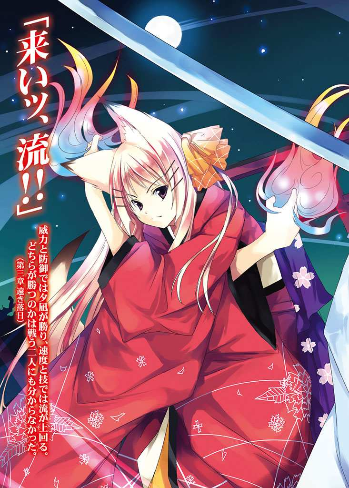

| あの日々をもういちど (HJ文庫) | |
| 健速 | |
| (2007) | |

「兄上っ、わたくしは反対ですっ!! 」
流 の提案に真っ向から反対したのは妹の 茅 乃 だった。茅乃は真っ青な顔で半ば立ち上がりかける。そのせいで彼女の長い 髪 が真っ白な 巫 女 装束の上をさらりと流れ落ちていく。
「落ち着け、茅乃」
興奮気味の茅乃を真向かいに座っていた流が 宥 めようとしたが、彼女の興奮は収まらなかった。彼女はその長い髪を大きく左右に 揺 らしながら 叫 び続ける。
「これが落ち着いていられますか!? わたくしに兄上ごとあいつを 封 印 しろなどと!! 」
あいつ、そして封印。彼らが問題にしているのは昨今あたりを 荒 らし回っている 一 匹 の『 鬼 』の事だった。
鬼の 身 の 丈 は優に人の倍はあり、 巨 体 から来る 剛 力 はもちろんのこと、その身に宿した 霊 力 も 尋 常 ではなかった。多くの分身を作り出し、その全てが実体を備え人を 襲 う。 既 に 侍 、 近 隣 の住民合わせて二十名以上の死者を出していた。もちろん 怪 我 人 はその何倍もいる。
代々 物 の 怪 退治を生業とする流達でも、これほど力のある敵と 対 峙 した事は無かった。先日戦った 妖 狐 の 長 とてこれほどではない。
「流 殿 、それがしも反対でござる。なにゆえ流殿だけがそのような重荷を背負わねばならぬのか」
いつも物の怪退治に同行している 侍 大 将 も茅乃に同調した。彼の率いる侍の一団は、術を 執 り行う時に無防備になりがちな茅乃達水際神社の神職を守ってくれていた。
しかしそんな二人に流は静かに 一 振 りの刀を差し出した。無骨な実用主義の 鞘 、 飾 り気の無い 柄 。鞘に巻かれた 薄 絹 の帯だけがその刀を飾っていた。 白 來 光 芳 、水際神社に 奉 納 されていた刀だった。
「この 神 剣 を 扱 えるのは俺だけだ。これがなくばあの鬼に術を 施 す事も出来ん」
「しかし兄上っ！ それでは兄上があまりにも！」
日 頃 穏 やかな茅乃。そんな彼女が声を 荒 げ、必死に引き止める姿に流は思わず 詫 びの言葉を口に乗せた。
「すまない、茅乃」
「謝るぐらいならおやめください！」
「.........そういう訳にもいかないだろう。あの鬼のせいで多くの民が死んだ。 収 穫 の時期も近い。これ以上長引けば今年の冬が 越 せなくなる」
徳川の時代となり戦は減った。そしてようやく民は 平 穏 な時を得た。それなのに今、再びその平穏は 脅 かされている。
「き、きっと他に何か方法が！」
「ある、本当にそう思うか？」
流がじっと茅乃の 瞳 を 覗 き込むと、彼女はぐっと言葉を飲み込んで目を逸らした。茅乃とて解っているのだ。他に方法がない事ぐらい。
彼らが相手にしているのはあまりにも強大な力を持つ存在だった。多くの術を無効化し、実体のある武器でも 殆 ど傷を負わせられない。また強引に数で 押 し切ろうにも、人にも武器にも限りがあった。 唯 一 有効だったのが神剣による 攻 撃 だが、あいにく神剣は一振りしかない。それだけでは決定打にならなかった。
そこで流が提案したのが神剣の力を解放して鬼を 縛 り、神剣を経由させた術で封印するという方法だった。通常の術が通用しなくても、現状で唯一有効な神剣を経由すれば可能だと思われた。
ただしこの方法には一つだけ大きな問題があった。それは神剣の使い手、つまり流を術の 施 行 に巻き込んでしまうというものだった。鬼に 剣 を打ち込みその力を解放し、その 隙 に術をかける。このやり方では流を 逃 がす余地がないのだ。
「け、けれど兄上！ わたくしが兄上を封印するなどと！」
茅乃はなおもためらっていた。水際神社で一番の術者は他ならぬ茅乃。それゆえ封印を執り行うのは彼女になる。茅乃はこれ以上引き 延 ばせば村が取り返しのつかない 被 害 を 被 ると分かっていて、それでも流を引き止めずにはいられなかった。茅乃にとって血が 繋 がらないとはいえ、流はやはり大切な兄なのだ。
「何も永久に封印しろと言っている訳ではない。十分な戦いの準備をし、封印を解いてくれ。侍や術者を集め、 銃 や 大 筒 を 揃 え、 奴 を 倒 すに十分な準備を。茅乃、お前が俺と同じ年になるぐらいには準備も整うだろう」
この時、流は十八 歳 。茅乃は十五歳。年の差は三年。流は封印で時間を 稼 ぎ、戦いの準備を整えさせるつもりでいた。
「流殿.........」
侍大将はその瞳に 涙 を 滲 ませ、太ももの上に置いた手を強く 握 り 締 めた。そんな姿は流に彼の心情をよく伝えてくれた。流はそんな風に思ってくれる彼の事をありがたいと思っていた。
「 吉 岡 殿、神剣の無くなった後この地を守るのは貴方です。それを思えば数年を 寝 て過ごす我が身がどれほどのものか」
流は実直な侍大将、吉岡又衛門に笑いかける。大した事ではない。そんな風に自分自身に言い聞かせながら。
「.........分かり申した。この地は我が身命に 賭 けて必ずお守り 致 す」
「吉岡様っ!? 」
茅乃の悲鳴じみた声が 狭 い部屋に 木 霊 する。彼女の顔は真っ青で、流に同意してしまった吉岡を強く非難していた。
「茅乃、吉岡殿を困らせてはならん」
「けれど兄上、わたくしはっ！」
流はなおも言い 募 る茅乃をそのままに立ち上がると、戸口に近付いていった。そして彼が音も無く障子を開けると 薄 暗 い部屋に赤い光が飛び込んでくる。
初秋の夕焼け。眼下に広がる村。戸口から覗くのは人の営みとその生命線だ。
夕食の準備なのだろう、家々からはうっすらと 煙 が立ち上っている。そしてその向こうに広がる一面の 稲 穂 。収穫を間近に 控 え、たわわに実ったそれは大きく頭を垂れている。風に 揺 られて赤く 輝 く様は言葉に出来ないほど 壮 麗 だった。
『流 殿 が必死に守るのも分かる気がするよ』
流は赤く染まった風景を 眺 めながら一人の女性の事を思い出していた。耳に 蘇 るのは今日と同じ風景を見ながら彼女が間近で 囁 いた言葉。そしてその表情。彼女は流にとって特別な意味をもった人物だった。
「これを守らん訳にはいかぬ。そうだろう？」
流はそう言いながら茅乃に向き直って 微笑 んだ。 覚 悟 はずっと前から決まっていた。
茅乃は笑う流を前に目を 伏 せた。そしてぎりりと 唇 を 噛 み締める。
───守らない訳にはいかないのだ。自分を守り、育ててくれたのはこの村なのだから。
流の笑顔を支えていたのはそんな想いだった。
「.........」
───それにあのかたにとっても目障りな人間が消えて良い事なのかもしれない。
流は胸の 奥 でそう 呟 くと持っていた刀の 鞘 を強く握り締めた。
カシャリ
刀は金属の 触 れ合う音をたて、鞘に巻かれた帯が揺れた。その帯は刀の無骨な外見に似合わない、上品な女物の 飾 り帯だった。そんな向こう側が 透 けて見えそうなほど 薄 くしなやかな帯は、外から入ってきた風にゆらゆらと揺れ続けていた。
「準備を整えてすぐに起きて頂きますぞ流殿！ いつまでも流殿だけ 呑 気 に寝ていられては困りますゆえ！」
「 頼 みます、吉岡殿」
「.........」
茅乃は無言だった。兄を我が手で 封 印 する事がまだ納得できずにいた。
「茅乃」
流は下を向いたままの茅乃に近付くとその頭に手を置いた。
「.........兄上」
「そんな顔をするな。たかが数年。大した事は無い」
封印は長くても数年。不測の事態があっても十年はかかるまい。この場の誰もがそう考えていた。
「ただ、夏祭りにお前の 奉 納 舞 が見られないのは残念だがな」
───しばしの別れです、 夕 凪 様。
そうして流は最後にもう一度赤く染まった風景を 振 り返った。まるでそこに親しい誰かが立っているかのように。
しかし実際に封印が解かれるまでには四百年の 歳 月 を待たねばならなかった。
「.........俺もあんたみたいに強かったらなぁ.........」
学生服を着込んだ少年が 身 の 丈 をこえる大きさの大小二つの岩を見上げていた。大きな方の岩は人間の背の倍程の大きさがあり、そこに何か棒状のものが 突 き 刺 さっていた。小さな方の岩はその棒の 端 を支えていて、見方によっては小さい方が大きい方を棒で突いているようにも見える。
少年がいるのは小さな山の上の、木々に囲まれた小さな広場。桜こそ散ってしまったが季節はまだ春。木々は青々と 生 い 茂 りその 濃 厚 な緑の 匂 いを辺りに振りまいていた。
「くそっ、また準優勝かよ」
コン
少年は 拳 で小さい方の岩を軽く 叩 くと 肩 を落とした。
準優勝。それは先日行われた 剣 道 の大会での事だ。少年は幼い 頃 から剣道を志していた。昔から負け知らずだった彼も、ここへ来てスランプに 陥 っていた。何故かいつも今一歩という所で大事な試合の勝ちを 逃 してしまうのだ。 詰 めが 甘 い。言葉にすると簡単だが、少年にとっては簡単な事ではなかった。
「あぁあ.........」
少年は 溜 め息をつくと小さい方の岩に背中を当てて座り込んだ。そしてそのまま顔を上げて空を見上げる。すると視界を 埋 め 尽 くした青い空の中を白い雲が 幾 つも流れていく。
「なぁ、あんたはどうやって勝ち続けたんだ？」
空だけを見ながら、少年がそう 呟 いた時のことだった。
「 圭 介 ！ あんたまたこんな所で！」
張りのある、 歳 若い少女の声が広場に 響 き 渡 った。
「 春 乃 かぁ.........。ここにいるって良く分かったな？」
「あんたここに居る時は必ず 携 帯 切ってるじゃない。.........ってそんな事より、ここは危険だって何度も言ってるでしょう？」
空を見上げたままの少年── 河 野 圭介の視界に、春乃と呼ばれた少女の顔が割り込んでくる。
彼女は 水 際 春乃。圭介の 幼 馴 染 で、同い年の十五歳。この春高校に上がったばかりで真新しいセーラー服は少しだけサイズが合っておらず、どことなく着られているような印象があった。
「分かってる分かってる、 封 印 がどうので危ないっていうんだろ？」
「分かってたら来ないで！」
春乃は 膨 れっ 面 で圭介を 睨 み付ける。
「でも春乃が『勇者様』にご 執 心 なのも分かってる」
圭介が春乃をからかうように言うと、寄りかかっている岩を後ろ手にコンコンと叩いた。
「ばっ」
その 瞬 間 、春乃の顔にパッと 朱 が走る。
「ばっかじゃないの!? 」
「.........照れる事ねえって。自分の自由と引き 換 えに、みんなを守った伝説の勇者様だぜ？」
「こっ、この人はそんなんじゃないったら！」
「それに俺だって、この人みたいに強くなりたいんだから」
圭介はそう言いながら岩塊を 振 り返る。
勇者様、この人。
二人の口ぶりはまるでその岩が生きた人間であるかのようだ。
「.........万年二位のあんたじゃ無理よ。どんな敵が現れても退かず、必ず打ち負かした 名 剣 士 なのよ？」
───俺もこの人ほど強かったら、春乃との関係ももう少し 違 ったものに出来ていたかも知れないな。
圭介は春乃の言葉を聞きながらそんな事を思っていた。幼馴染の少女は圭介を認めようとしなかった。いつだって『勇者様』を引き合いに出して半人前 扱 いするのだ。
「知ってるよ。地元の子供ならみんな知ってる 御 伽 噺 だろ？」
しかし圭介にとって、それを認めざるを得ない相手でもある。かく言う圭介自身も剣道を始めた理由は幼い頃に聞かされた水際の 鬼 退 治 の伝説なのだ。
「御伽噺じゃないわよ」
「ま、春乃の場合は 惚 れた男が御伽噺じゃ困るわな？」
そう言うと圭介は 喉 の 奥 でクックックと笑った。春乃は昔からここに 封 じられたとされる剣士に心 奪 われていた。まだ見ぬ剣士の姿を想像して、 恋 い 焦 がれていたのだ。そしてその事も圭介の 悩 みをほんの少し複雑にしていた。
「うっ、うるさいわねっ！ どうだって良いでしょ！」
「そんな事より、いつなんだ？ もう決まったんだろう？」
そんな事と言われて春乃は少々ムッとしたが、話題が変わるならそれに 越 した事はない。彼女は素直に 頷 くと圭介の質問に答えた。
「来月よ。ゴールデンウィーク中に封印を解くわ」
「へぇ、そりゃ急な話だな？」
「私もそう思うけど、仕方ないのよ。この間ちゃんと測定してもらったら 随 分 と 神 剣 の力が弱まっていて.........。それでこのまま放置すれば年内にも自然に封印が解けてしまいそうなの」
「なるほどね。何時になるか分からない目覚めを待つよりは、準備をしてこちらから起こそうってか」
「そういうこと」
圭介の 指 摘 に春乃はこっくりと頷いた。
「それにさ、夏祭りは安心して 迎 えたいじゃない？」
「まったくだ」
夏祭りはこの地方で長く続く伝統行事。この街に住む誰もが毎年楽しみにしている一大イベントだ。それだけにこのまま放置して夏祭りの時に封印が解けてしまっては目も当てられない。それに仮に夏祭りが無くともみんな不安な 筈 だ。
「宿題は夏祭りの始まる前に終わらせとけってか」
「あんた夏休みの宿題なんて、いつも新学期ギリギリまでやらないじゃない」
圭介の言葉に春乃は楽しげに笑い出した。つられて圭介も笑い出す。
「ほっとけよもう.........。けど、ようやく会えそうだな」
圭介はしみじみと 呟 くと再び岩を 仰 ぎ見た。見つめているのはやはり小さい方の岩。すると彼の真面目な 雰 囲 気 を感じ取ったのか、春乃も笑顔を引っ込めた。
「圭介、あんたうちの 御 先 祖 様にお会いしてどうするの？」
「ん？ ああ、 剣 を習いたいんだよ。俺がスランプなのは春乃も知ってるだろ？」
「.........そういえばそうだったわね」
春乃も圭介の横に立って 一 緒 に見上げる。物言わぬ岩は 小 揺 るぎもせず彼らを見下ろしていた。
「水際の伝説の名剣士、 倒 した 魔 物 は数知れず。民達からの 信 奉 も 篤 く、 封 印 された後も 崇 敬 の対象となった。.........確かにあんたの先生に向いているかもしれないわね？」
「そうだろ？ .........そういえば、なんつったっけ」
「ん？」
「この人の名前」
つんつん
圭介は無造作に小さい方の岩を 突 く。
「 流 様よ」
「流.........」
「水際流。うちの神社では一番有名な御先祖様よ」
そして春乃は 誇 らしげに笑うのだった。
◇
水際神社が封印の弱体化に気付いたのは今から十五年前。丁度春乃が生まれた年の事だった。
当時発達しつつあったレーザー測定器と昔ながらの 反 霊 力 振 動 子 を組み合わせた霊力感知器は、封印術とその 焦 点 である神剣の霊力の 衰 えを定量的に指摘した。それぞれの力の減少はごく 僅 かずつではあったが、このままの速度で減少が続けば二十年ともたずに封印を 維 持 できなくなる事が明らかとなった。
水際神社の封印。その始まりは四百年前に 遡 る。
神社の記録によれば、事の 発 端 は当時 近 隣 を 荒 らし回っていた魔物が手に負えないほど強大であった 為 だった。
今でこそ 龍 や 麒 麟 などに代表される 超 常 種 を見る事は少なくなっていたが、当時は今とは比べ物にならないほど多くの超常種を見る事ができた。その中でとりわけ人間と敵対的である個体は魔物や 物 の 怪 、あるいは 悪 魔 と呼ばれていた。
昔から宗教団体は魔物から近隣の住民を守る役目を 担 っていた。魔物や悪魔という 脅 威 が現実に存在する 状 況 では、それらを退治できない者達は必要とされなかった。法術や神術といった、文字通り神の 奇 跡 によって民を救うのがその役目だったのだ。
例に 漏 れず水際神社はこの地方の守り手として長くこの地とそこに住む人々を守ってきた。しかし四百年前のある日、人里に降りてきた魔物は神社の手に余るほどの力を備えていた。
伝説では 黒 海 山 荒 れ 野 の 鬼 と呼ばれる 一 匹 の鬼。
この強大な鬼は人界から遠く 離 れた黒海山に住み、人とは関わり合いを持たなかった。人間の方もその山に 踏 み入る事はなく、長く 互 いに 不 干 渉 を保ってきた。
しかしある日、鬼は何故か山を降り人里を 襲 った。彼がそうした理由は分からなかったが、彼がかつてない程危険な魔物となった事だけは確かだった。
必然的に水際神社が退治に乗り出したのだが、鬼の強さは彼らの手に余った。その 巨 体 から来る 怪 力 、そして 刃 物 を通さない強固な 皮 膚 、 獣 の 如 き 俊 敏 さ。さらには人間の 施 す術を簡単に 掻 き消してしまうほどの霊力まで備えていた。その上実体を備えた分身を大量に作り出す能力を持ち、それで村一つを焼き討ちにしてしまう事もあった。
多くの死傷者を出し、 手 詰 まりとなった水際神社の神職達は最後の手段に出た。
それは遺産、今でいうレリックを使って鬼を 封 じるというものだった。
遺産。現代ではレリックと呼ばれるもの。それは霊力を秘めた物品の一形態だ。
霊力を秘めた物品は 一 般 に三種類知られている。数が多い順にマジックアイテム、アーティファクト、そしてレリックだ。ただ、いわゆる 魔 法 の工芸品である前者二種に対し、レリックはまったく性質の異なる品物である。
レリックは作り出すものではない。長期に 亘 って受け 継 がれていく間に、その地域の人間の精神の力を集積して力を持つ。
例を挙げてみよう。
何の力もない刀が 一 振 りあったとする。それが代々 名 剣 士 に受け継がれていくと、周辺地域の人々はこう思うようになる。
〝 代々名剣士に使われているのだから、きっと名剣に 違 いない〟
この結果人々の精神の力が 徐 々 に刀に 蓄 積 されていき、やがて刀は力を持つようになる。そうなると今度は逆の事が起こるようになる。
〝 あの刀を使っているんだから、あの剣士は強いに違いない〟
そんな人々の意思を受け、今度は刀から剣士へ向かって力が逆流し始める。その力は剣士の能力を高め、その剣士を名剣士に変えていく。
そんな事を 交 互 に 繰 り返しながら伝説を作り上げていく、それがレリックの本質だった。
こういった事情からレリックはただの道具よりも、元々有名で強力な物品から発生する事が多い。例えばマジックアイテムは元々強力であるが故に伝説を 纏 いやすい。
ただし全く同じ理由でデメリットが多いのもレリックの 特 徴 だった。
まず、 狙 って作れるものではないという事。そして力を持つまでに長い長い時間を要するという事。 更 には人々の支持を失えばレリックは力を失う事がある事。その品物にまつわる伝説に反する 行 為 を行った場合や、長期に亘り表に出ず忘れ去られた場合などがそれだ。先の刀の例なら、剣士が戦いを 放 棄 したり負けが続くと力を失うことだろう。全く無くはないのだろうが、敵に背を向けたり負けてばかりの人間に力を貸すような伝説は少ない。
また逆に負の伝説を背負ったレリックも存在している。狂戦士の 鎧 や、鳴らすと不幸をもたらす 鐘 などがそれだ。良い事ばかりではないのもレリックの不自由な部分だった。
伝説というものの表裏を 併 せ持った存在、それがレリックなのだ。
水際神社に伝わっている刀は、そんなレリックのうちの一つだった。
白 來 光 芳 という 銘 を持つその刀は神社に 奉 納 された後、代々水際の神職の中で剣に 秀 でた者に受け継がれてきた。長く神職と共に地域を守ってきた刀は、次第に住民の 信 頼 と期待を集め力を持つに至った。
レリックの力は術というよりは 剥 き出しの精神の力に近い。それゆえに術の 殆 どを無効化してしまう黒海山荒れ野の鬼相手にも有効打を 与 える事が出来た。とはいえ一本だけでは完全に 倒 すには至らなかったのだが。
鬼に対して決定的なダメージを与えられず、完全に手詰まりとなった当時の水際の神職達は最後の手段に出た。それは 唯 一 鬼 の 防 御 を 突 破 できる白來光芳を 介 して、 封 印 の術を施すというものだった。
刀を打ち込み術を施すための道を作り、同時に刀の力を解放して鬼を 縛 り付ける。そしてその 隙 に封印の術をかける。これが彼らの最後の作戦だった。
倒す事だけが目的であればこの時かける術は封印の術である必要はなかったのだが、 神 剣 の使い手もその術に巻き込んでしまう 為 に彼らは封印の術を選んだ。
水際の 扱 う封印の術は対象の時を完全に止めてしまう。術の対象は静止した時の中で 永 劫 の 眠 りにつく事になる。彼らはその術で時間を 稼 ぎ、万全の準備で封印を解き鬼を倒すつもりでいた。
だが結局それは 叶 わなかった。
封印には成功したものの、翌年から始まった 飢 饉 、そしてそれに 触 発 された 魔 物 達の対応に 忙 殺 されて準備は 遅 々 として進まなかった。
数年かけて飢饉と魔物を 抑 えこんだ 頃 には、民も領主もすっかり弱気になっていた。
何年かぶりにようやく訪れた 平 穏 。わざわざ封印を解いてそれを破らないでくれ。そんな声に負け、結局彼らは仲間を助け出す事が出来なかった。
そのまま四百年の時が過ぎた。
そして長い長い時の流れに 晒 され封印も神剣の力も 綻 び始めた今になって、ようやく封印が解かれる事になったのだった。
◇
「 高 杉 さん、これは流石に 仰 々 し過ぎやしませんか？」
現在の水際神社を 統 括 する宮司、水際 孝 治 は山積みになった武器を 見 渡 しながら 溜 め息をついた。そこにはアサルトライフルやマシンガン、挙句の果てには 手 榴 弾 やロケット 砲 まで用意されていた。
孝治は春乃の父親で今年で四十二 歳 。妻の 亡 き後、男手一つで春乃を育ててきた。彼には神術の才能は備わっていなかったが、その 穏 やかで真面目な性格は水際の神職達を良く取りまとめていた。その細身で優しげな外見もそれに一役買っている。
「はっはっは、俺もそうは思うんですがねぇ」
高杉と呼ばれたヒゲ面の男は、着込んだ作業服の 袖 を 捲 りながら大笑した。
「伝説の 鬼 だっていうんで、もしかしたらうちの標準装備と 狩 猟 組合の 皆 さんの 猟 銃 だけでは荷が重いかもしれないと思いましてね。念のために 申 請 するだけしてみたんですが、まさか額面通りに全部来るとは。俺も予想外ですよ」
高杉 幸 一 は厚生労働省からやってきた病 害 獣 担当の職員だった。とはいえ彼は 疫 病 や野犬、町に降りてしまった動物等に対応する 一 般 病害獣の担当ではない。彼の担当は特別病害獣。簡単な言い方をすれば魔物を担当する部署の人間だった。
超 常 種は規格外の生き物だ。いわゆる進化論的な生物からは大きくかけ 離 れた、独自の能力を備えた特別な生物達。知性の高いものも居れば低いものも居る。その姿形も一定していない。いつ、どのように発生したのかは現在も良く分かっていないが、どこか一点から生まれてきたという訳ではなく、生物の系統樹のあらゆる場所からイレギュラー的に生まれて来たのではないかというのが現代の通説になっている。
かつては超常種もこの大地に根付き、多くの姿を見ることが出来た。しかし明治から昭和初期にかけて超常種全体を巻き込んだ魔物と人間の大きな 抗 争 以降、超常種自体の 目 撃 例 が減っていた。 山 奥 に住処を移したり、外国へ移住したものも少なくなかった。現在、日本で確認されている超常種の集落は 僅 かしかない。そのうち人間と交流があるものは 更 に少ない。しかしどの集落も争いを 嫌 った為、彼らは日本人に静かな 隣 人 として好意的に受け入れられている。
魔物とはそんな超常種の中のはぐれ者達だった。多くの超常種は平和を重んじた。しかし中にはそうでない者達もいる。彼らは度々人界の平和を 脅 かした。その理由は様々だ。単に 餌 をとる為の 捕 食 行動であったり、人間の進める開発のせいで住処を追われた為であったり。中にはただ殺すのが好きだというとんでもないものもいた。
それに対応するのが厚生労働省だった。
一般病害獣担当が人を 襲 う野生の 熊 を 狩 るように、特別病害獣担当は人を襲う魔物を 駆 除 する。その組織構造も一般病害獣担当と大して変わらない。 獲 物 を狩る為の道具を備え、民間の狩猟組合と 連 携 して魔物を狩る。
例外は一般病害獣担当とは 違 って強力な武器が使える事だった。 普 段 は狩猟組合のものと大差の無い武器を使っているが、申請次第では今回のように軍用の武器の使用許可が下りる場合もある。それだけに 日 頃 の訓練が厳しいという事でも有名だ。
また、神社や仏閣に協力を 仰 ぐ場合があるのも 特 徴 の一つだった。
春乃の言葉を借りるなら『すごい保健所のおじさん達』という事になる。
「真面目な話、我々も実戦は久しぶりです。気分的に武器が多いに 越 した事はありませんよ」
超常種の減少は、そのまま魔物の減少にも 繋 がっている。
平成に入ってから魔物の報告例は僅かに十四例。うち人間に直接 被 害 が出たのは四、死者は一。毎年起こるクマの被害よりも少ないのだ。高杉が責任者になってから五年近くの時が過ぎていたが、その間に魔物と直接交戦した例はたったの一度。しかも小競り合い程度のものだ。最近の出動は魔物ではなくはぐれた超常種の 捜 索 。保護区から出てしまった牛の 霊 獣 を保護区に 戻 すという簡単な仕事だった。使った道具は 麻酔 銃 に投げ 縄 。まさしく保健所の仕事そのものだった。
「.........それは同感ですなぁ、高杉さん」
孝治は積み上げられた現代兵器を前にもう一度溜め息をついた。
水際神社とて実戦の経験はない。代々神術を受け 継 いできた水際神社だったが、近年では術を使って 御 祓 いや 魔 除 けを 施 すのが関の山。生きた魔物を相手にその力を 振 るった事など誰にも経験はなかった。
「 封 印 など解かずに済めば、どれだけ良かった事か.........」
孝治は武器の山の向こうにある大小二つの岩を見上げ、三度目の 溜 め息をついた。
◇
戦いの準備は四月の終わり 頃 から進められていた。
水際神社に残されていた記録によれば裏山の山頂にある大小二つの岩は、大きい方が鬼、小さい方が水際の神職であるとの事だった。このため神社と厚生労働省は大きい方の岩を中心にして戦いの準備をした。
事前に行われた計測や、過去の記録の調査から鬼の 攻 撃 範 囲 を推定、十分な 距 離 を置いてバリケードを設置。そこに 陣 をひいた。もっとも近代兵器の有効射程からすると鬼の攻撃範囲などたかが知れている訳なのだが。
バリケードのこちら側に設置されていたのは、弱いものでは通常の猟銃、強いものでは 軽 機 関 砲 まであった。魔物退治専門の部署とはいえ、火力のありすぎる軍用兵器は本来使用に厚生労働大臣の許可が必要であったが、今回は特別にその許可が下りていた。それは周囲に民家が全く無い事と、記録や測定結果からかつて無いほど強大な敵である可能性が 示 唆 されていたからだった。それゆえボタ山を背後にしている時に限り、軍用兵器の使用許可が下りていた。水際孝治をして『 仰 々 しすぎる』と言わしめたのはこの 為 だ。
また、当日は水際のお山の周辺は立ち入り禁止区域に指定。この地区の警察を動員して誰も近付かせないようになっている。
準備は万全。後は水際の術者達の準備が整うのを待つばかりだった。
◇
「我々としても、本当はこれを使うような事にはなって欲しくないんですがね」
高杉は 据 え付けられた機関砲に手を当てて苦笑する。使う為の訓練は 繰 り返して来ているが、これを使うという事はそれだけで大事の証だ。
孝治もそんな彼に苦笑を返した。
───できれば先祖伝来のこの地をこんなもので 騒 がせたくはないものだ。
長く続く水際の当主としては、孝治はそう考えていた。
「 御 父 様 ー！」
広場に春乃の声が 響 く。
「おお、春乃！」
孝治は笑顔でその声の方を振り返った。すると荷車を引く作業服と神官衣の青年達の先頭に立ち、孝治に近付いてくる春乃の姿が見えた。
「どうやら荷物が届いたようですな」
「すみませんなぁ、孝治さん。 娘 さんまで 駆 り出してしまって」
高杉は孝治に向かって頭を下げる。
「いえいえ、お気になさらずに」
いくら水際直系の娘とはいえ、ここは本来高校に入ってすぐの少女に 相応 しい場所ではない。それなのに春乃がここに居るのはその神術の才能の為だった。
春乃はここ何十年かの水際の神職の中で、群を 抜 いて高い神術の素養を持っていた。そして持ち前の勤勉さも手伝って、この若さにしてはかなり高度な術まで使う事が出来る。このため今回、彼女は術の素養の無い父親に代わって封印の解除を取り仕切る事になっていた。
「お 疲 れさん、春乃ちゃん」
そんな高杉の声に、春乃は笑顔を 浮 かべて二人の中年に駆け寄っていく。そして彼女は 巫 女 の装束を 揺 らしながら頭を下げた。
「高杉のおじ様、こんにちは」
「春乃、問題は無かったか？」
「 大 丈 夫 。 儀 式 はちゃんと終わってる。必要なものは全部 揃 ってるよ。強いて問題を挙げるとすれば、圭介が 一 緒 に来るってごねたぐらいかな」
春乃はそう言いながら 眉 をひそめる。
「圭介君か.........」
孝治はそんな娘の姿を見ながら楽しげな表情を浮かべた。彼はやんちゃな圭介の数少ない理解者だった。
「もう、笑い事じゃないわよ。.........ともかく言い聞かせて置いてきたから」
「そうか。それなら問題は無いな」
「圭介というと、あの負けん気の強い 坊 主 か」
高杉も 両 腕 を組んでニヤリと笑う。高杉もああいう上を目指すタイプは 嫌 いではなかった。
「おじ様まで.........。そんなだからあいつがつけあがるんですよ？ 危ないのに」
「スマンスマン」
彼らの姿は決死の戦いを目前にした人々の姿には見えない。四百年前の水際の人々が 鬼 との決戦に臨む時の事を知る者が居れば、きっとその 呑 気 さに目を 剥 いた事だろう。
「それでは一丁やってみますかね」
「春乃、準備はいいかい？」
「任せといて。もう高校生だもん、上手くやるわ」
「しっかりした娘さんで 羨 ましい」
春乃達に限らず、その場に居る誰の表情にも笑顔が浮かんでいた。
◇
「達者なもんだ」
篝 火 の前で 舞 い続ける春乃の姿を見ながら、高杉はそっと 呟 いた。水際の術は 舞 と共に発動する。舞の美しさはそのまま術の強さに 繋 がっている。
「母親に似て、気真面目ですから」
娘を 褒 められた孝治は思わず笑みをこぼす。今は 亡 き母親の 面 影 を追うように練習し続けた春乃の舞は本当に美しかった。
春乃と術者達の 封 印 解除の儀式が始まったのは二〇〇七年五月五日午後五時。封印が 為 されてから四百年の時が流れていた。
◇
当事者である流と鬼にとって、時間の止まっていたこの四百年間は時間が過ぎたという感覚はない。
二人とも封印が始まった時の光と、封印が解けた時の光を同一の物だと感じている 筈 だ。事情を知っている流はともかく、鬼は術をかけられた事自体に気付いていないかもしれない。流に 神 剣 を 腕 に 突 き 刺 された次の 瞬 間 、ただ目の前に光が 溢 れ、それが引いた。まるでそれだけの事であるかのように。
「封印が解けた!? 」
注意していた流はすぐにそれに気付いた。
状 況 は変わっていない。
敵を待ち 伏 せした時と同じく夕暮れ時。目の前には伝説に 謳 われる黒海山荒れ野の鬼。人に倍する 巨 躯 、 怪 力 、全身を 覆 う 濃 密 な 霊 力 も健在だ。そしてその腕に突き刺さったままの神剣も。
しかし変わっている事もあった。
光が弱まっている神剣。封印術の中心として全力で力を解放したそれは、ほんの 一 瞬 前とはうって変わって弱々しい光を放っていた。鬼を 拘 束 していた力も同様に弱まっていて、鬼は今にも神剣の 呪 縛 を打ち破ってしまいそうだった。
また空気も変わっていた。封印の光の前とはまるで 匂 いが 違 う。一応森の緑の匂いではあったのだが、何処となく鉱山から染み出した油を燃やした時のような臭いが混じっていた。流はその事を何かの準備だと考えていた。車の 排 気 ガスの臭いだとは思わない。四百年前に生まれた流に大気 汚 染 の発想は無い。
周囲の変化はそれだけではない。流には全体的に自身を取り巻く自然の霊力が 薄 まっているように感じられていた。
そして一番大きな違いは、戦場に溢れていた仲間達の 怒 号 がぴたりと止まった事だろう。鬼本体は流が相手にする他は無かったが、鬼の作り出した分身は 吉 岡 の率いる武士団と神職達が一緒に相手をしていた。その 喧 騒 が 突 然 聞こえなくなった。
まるで突然夢から覚めた時のような 奇 妙 な 違 和 感 。流はそれを感じつつも目の前の鬼に集中する 為 にその感覚を頭の中から追い 払 った。
どうやら封印が発動して、予定通り解除された事は確かなようだ。それだけ分かれば流には十分だった。
───さて、どうする？
弱まった神剣の力。今にも解けそうな鬼の呪縛。両手で支えた神剣から伝わってくる 振 動 は次第に大きくなっている。鬼が暴れ出すのも時間の問題だ。吉岡と 茅 乃 は武器を 揃 える事が出来たのか？
一瞬のうちに流の頭の中を戦いの 趨 勢 を左右する要素が流れていく。
そんな流に決断を 促 したのは耳に飛び込んできた少女の声だった。
「流様！ 一度お引きください!! 」
───茅乃!?
その声が聞こえた瞬間、流は迷わず神剣を鬼から引き 抜 き、身体を鬼に向けたまま声の方へ 駆 けた。神剣を引き抜かれても鬼はすぐには神剣の呪縛から抜け出せず、ただその場に立ち 尽 くしていた。しかしすぐにそれから立ち直る事は明らかだ。鬼の 頑 健 さは流自身が一番良く知っている。
「茅乃！ 吉岡 殿 っ！ すぐに 攻 撃 を!! 」
時間を置けば不利になる。また分身を出されても 厄 介 だ。
だから流はそこに居る筈の二人を呼んだ。先程の声を完全に茅乃の物だと思っていた。その声が茅乃にしては高過ぎるとか、呼び方が違っているとか、そんな事は思いもしなかった。多少状況が変わっていても、茅乃達が自分を解放すると信じていたのだ。
「流様こちらへ！ すぐに攻撃が始まります!! 」
───流様？
再び聞こえた少女の声に、流が 微 かに違和感を覚えた瞬間だった。
「高圧電流一番スイッチを入れろ！」
聞き覚えの無い男の声と共に、流にとって 驚 愕 の連続となる攻撃が始まった。
高杉の攻撃プランは、高圧電流を流す事から始まっていた。
これは長年の研究で明らかになった事なのだが、地水火風の四元素に 耐 性 を持つものでも、電気にまで耐性を備えた 超 常 種は少なかった。
電気に完全な耐性がある超常種は二種類。身体を持たない 幽 霊 のたぐいと、血の 巡 らない石 巨 人 などがそれだ。この二種類に限れば電気の攻撃はまるで意味が無い。
完全な耐性が無くても、電気に強い超常種はいる。 全 般 的 に耐性の高い龍族などがそれだ。 鬼 も伝説級になるとそういう 傾 向 は強い。
過去の時点では作りうる電気には限界があった。電気は術以外に作り出す方法が無く、現代の数字に 換 算 して十万ボルト程度が上限となった。それゆえ龍や鬼の耐性を 突 破 できない事が多かった。
しかし現代では事情が異なる。
現代科学で電気を作り出し 昇 圧 。術で補助しながら効率を上げてやるという方法をとれば、 瞬 間 的 になら小規模な機械でも一億ボルトを 超 える電圧を作り出す事も可能となっていた。
この超高電圧の前には、鬼の備えた電気への耐性など全くの無力だった。
バシッ
封 印 の解除の前に鬼の身体に固定した電極から一億ボルトの電気が流れ込んでいく。電流量はそれほど大きくはないが、鬼の自由を 奪 うには十分なものだった。仮に人間だったなら 即 死 していたことだろう。
発電機とコンデンサーの容量の関係で一億ボルトを流せるのはこの一瞬のみだったが、この 一 撃 は鬼にとって予想外で、しかも 致 命 的 な一撃となった。
全身から 噴 き上がる 黒 煙 。鬼の身体を駆け巡った電撃はその肉を焼き、 燻 らせた。そして鬼の全身は発作のように 痙 攣 を 繰 り返す。全身の神経系を瞬間的に駆け抜けた電流に身体が誤作動を起こしているのだ。 更 には電圧に 耐 えかね毛細血管が破れ、目や鼻からはどす黒い血が 滲 み出していた。 皮 膚 も所々破れ、同じように血を垂れ流している。それでなお立っているのは、さすが伝説の鬼と言った所だろう。
「二番スイッチを入れろ！」
バチバチッ
高杉の電流を使った作戦は二段構えだ。
一段目は瞬間的な超高圧電流で先手を取る事が目的。二段目は 継 続 的 な電流で自由を奪い続ける事が目的だった。
二段目の電流は先程のような超高電圧ではない。通常なら効かないかも知れないその電気も、一段目で大きなダメージを受け、血液を垂れ流している今なら通用するかもしれない。加えて電圧を下げた事で長い間電気を流し続ける事も出来る。 駄 目 なら駄目で構わない。やって損はない。それが高杉の計算だった。
二度目の電撃を受けた鬼は口を大きく開けて 叫 ぶかのような仕草を見せた。しかし電気で痙攣し続けるその 喉 からは声は出てこない。鬼は高杉の計算通り、自由を奪われてその場に 釘 付 けとなった。
「い、一体何が.........」
流は目の前で展開される異様な光景に言葉が無かった。そもそも何故鬼がダメージを受けているのかも想像がつかないのだ。科学に通じていない彼には、ただ 轟 音 と共に大きなダメージを受けた鬼がそのまま身体を痙攣させているようにしか見えない。誰かが術を 施 したようにも見えないのだ。
「総員、標準装備で 攻 撃 を開始しろ！」
高杉の三度目の声。
それは鬼への 死 刑 宣告だった。
訳も分らず成り行きを見守っていた流だったが、今度の攻撃は流にも何をやっているのかの判別が付いた。
多くの人間が銃を構え、 射 撃 している。
ドンッ、ドンッ
流にも銃や 大 砲 の知識はあった。彼の知識は 火 縄 銃 や 大 筒 といった古めかしいものではあったが、その仕組みは知っていた。火薬を 爆 発 させて 弾 を発射する最新の武器だ。
しかし流は目の前で展開されている銃撃戦に混乱していた。
人々が構えている物が銃なのは分かる。その形には見覚えがあった。しかし火縄がない。あの独特の 匂 いも。また発射までの時間も短い。しかもこの連発性能。弾を込め直している様子もなく、たかだか十数人だというのに、まるで何百人もの 鉄 砲 隊 を 揃 えたかのような速度で攻撃を続けている。
そして信じられないほど高い 威 力 。この銃は簡単に鬼の体表を引き 裂 き、その肉を 削 り取った。かつて吉岡が使っていた火縄銃では皮膚を軽く傷つけるぐらいが関の山だったというのに。
また流にとってそれ以上に 奇 妙 に思えたのは、この場に 侍 が一人もいないという事だった。
───吉岡 殿 はどうしたのだ？
その事も流の混乱に 拍 車 をかけていた。
銃を構えているのは侍ではなく、 妙 に 光 沢 のある清潔な衣装を身にまとった不思議な男達。それは厚生労働省の職員と 狩 猟 組合の猟師なのだが、それが流に分かる 筈 もない。流の知識に無理矢理当てはめれば西洋からの 渡 来 人 の衣装に近いのだろうが、そこで思考は止まっていた。
奇妙な服を着た日本人が、奇妙で強力な銃を持ち、 鬼 を赤子のように 捻 っている。それは流にとって予想だにしない異様な現実だった。
「これでもまだ 倒 れないのか。どれだけタフなんだ、この化け物は.........。仕方ない！ 本命で攻撃を始めろ!! 」
指揮をとっている男の声が再度 響 く。
すると。
ドココココココッ
流のすぐ 傍 から連続した 爆 音 が響き 渡 った。
金属製の台に 据 え付けられた鉄の 塊 ─── 軽 機 関 砲 から轟音を立て金属の塊が飛び出していく。
───これも銃、なのか？
引き金を引く男の姿を見て流がそう判断するよりも早く、大きな弾の連射に 捉 えられた鬼の身体はぼろきれのように千切れ飛んでいった。
「な.........」
流には 驚 いている 暇 はなかった。先の連射の利く銃どころの 騒 ぎではない。大筒程の威力の弾を、先程の銃よりも高速で 撃 ち出している。たった一度呼吸する間に十発以上の弾が 吐 き出されていった。そしてその弾はまるで破城槌であるかのようにあっさりと鬼の肉体を 砕 いていく。撃ち 抜 くのではない。文字通り撃ち砕いていた。
黒海山荒れ野の鬼。伝説に 謳 われる強大な鬼。 近 隣 の村を何度となく 襲 い、多くの死者を出し、流達がやっとの思いで 封 印 した筈の鬼。
けれどその鬼は一歩も足を進める事無くその場に 崩 れ落ちる事となった。流が 拍 子 抜けしてしまうほど簡単に。
流は何もする必要が無かった。術を編む事も、 剣 を 振 るう事も。ただただ 立 ち 尽 くす 傍 観 者 でしかなかった。
◇
銃 撃 が止み広場が再び静かになった時、もはや鬼はピクリとも動かなかった。 圧 倒 的 な火力でその 巨 体 を撃ち抜かれ、全身から大量に出血しながら大地に倒れ 伏 していた。
「こ、これは.........一体.........」
流には信じられなかった。
確かに戦いの準備をするように言いつけた。しかしこれは予想を大きく 超 える。まさか術もなしに武器だけで圧倒する事が出来ようとは考えていなかった。
「そ、そうだっ、茅乃！ 吉岡殿は!? 」
我に返った流はそこに居る筈の人物の名を呼んだ。流を鬼と共に封印したのは茅乃で、封印を解くのも茅乃。そして 攻 撃 隊 の指揮をとるのはもちろん吉岡の筈だった。
しかし。
「流様！」
聞き覚えのある声。流はその声の方を振り返った。
「茅乃!? 」
流には 一 瞬 そう思えた。 巫 女 の装束、長い 黒 髪 。 澄 んだ大きな 瞳 。目の前に立つ少女は確かに血の 繋 がらない妹の事を思い起こさせた。
「初めまして流様」
「あ.........」
だがそこで流は気付いた。似てはいるが少女は茅乃ではなかった。目の前の少女は茅乃に比べるとどことなく幼さの残る顔立ちをしている。もう何年か経てば茅乃にそっくりかも知れないが、そこに立つ少女は全くの別人だった。
「水際春乃と申します」
そう言って少女は深々と頭を下げた。
「みぎわ.........はるの.........？」
戸 惑 う流に春乃はこっくりと 頷 く。
「はい。茅乃様から数えて十五代目の水際の正統 継 承 者 です」
「じゅ、十五代、十五代と言ったか!? 」
流は思わず春乃の 両 肩 を 掴 み、 揺 さぶる。
「は、はいっ」
「 嘘 を言うなっ、そんな 筈 はないっ！」
───何かの 間 違 いだ！ 十五代だなんてそんな事がある訳がない！ 数年で封印を解く事になっていたではないか!?
不意に 突 きつけられた現実に、流は完全に取り乱していた。
「落ち着いて聞いてくださいませ流様」
肩 を揺さぶられて少しだけ驚いた春乃だったが、流の事情は分かっていた。流は本来数年で目覚める筈の人間だった。その驚きと戸惑いが小さくはない事は想像がつく。
だから春乃は流の手をとると可能な限り優しい言葉でゆっくりと語りかけた。
「今は 西 暦 二〇〇七年。流様の生きておられた 慶 長 十二年は西暦一六〇七年ですから、丁度四百年目にあたります」
しかしそれは流にとって 死 刑 宣告にも等しい言葉だった。
四百年前といっても、夏祭りの前にやる事は現代とほとんど変わらない。 流 が水際神社のある山の頂上から村を見下ろすと、祭の準備に 忙 しく行き交う大人達の姿や、彼らが組み立てた祭の 為 のやぐらが見てとれた。
「流様ー！」
「おにいちゃーん！」
子供達の声。
流がそちらに目をやると、 麓 からここへ向かうあぜ道を 駆 け上がってくる幼い少年少女達の姿があった。彼らは時折そうやってここまで登ってきて、ひとしきり遊んでいく。
「 皆 、足元に気をつけるんだぞ！」
『はーい!! 』
流の呼びかけに素直で元気な声が返ってくる。今日の彼らも元気いっぱいだった。祭に 沸 き返る村の大人達の熱気に乗せられているのかもしれない。
流は再び視線を麓の村へと移した。村の家の 藁 葺 きの屋根、そこを忙しく行き交う大人達。
そしてその向こう。まるで高価な 敷 物 を敷き 詰 めたかのような、どこまでも広がる一面の緑。それは村の者達の努力の 結 晶 、そして生命線でもある水田だった。
───今日も何事もなし、か。
流はそうやって村を見るのが好きだった。
元気に遊ぶ子供達。村の人々の 素 朴 な暮らし。そして村一丸となって作り上げた美しい田畑。そんなものを 眺 めていると、流は自分がそこで果たしている役割に 誇 りを持つ事が出来た。
自分はこれを守っている。彼らに必要とされている。その実感は流にとても幸せな感情をもたらしてくれるのだった。
「ここに居たか、流 殿 」
そんな流に呼びかける声があった。それは若く美しい女性の声だった。
その声の主はこうやって流がここに居るとまれに姿を現す事があった。その事も流がここに居る理由の一つなのだが、流自身もその声の主も、その自覚は 乏 しかった。
「 夕 凪 様、 御 無 沙 汰 をしております」
流は立ち上がると、声の主に向かって深々と頭を下げた。
「いつも夕凪様はよせと申しておるであろう？ 頑 固 よのう、そなたは」
そう言いながら少し 頬 を 膨 らませるのは 小 柄 で 繊 細 な容姿の一人の少女だった。 年 の 頃 は流よりもいくらか若いくらいだろうか。彼女は仕立ての良い着物を 揺 らして 悠 然 と流に近付いて来た。
「これでも 水 際 の者です。土地神様を 御 呼 びするのに、呼び捨てという訳には参りません」
そんな少女に一度小さく苦笑すると、流は笑顔で彼女を 迎 えた。
「ふふ、分かったよ。.........久しいな、流殿」
「夕凪様もお変わりなく」
二人は向かい合って顔を合わせると、再び 挨 拶 を交わす。
その時首を 傾 げた夕凪の頭で大きな耳が揺れた。彼女の耳はいわゆる人間のそれではない。それは 尖 って三角の形をした、いわゆる犬の耳に似たものだ。耳の付いている場所も人間のような側頭部ではなく、頭の天辺だった。
夕凪はこの地に住む土地神。現代風の言い方をすれば土着の 超 常 種だった。敵対的な超常種を 魔 物 や物の 怪 と言い表すように、人間に友好的なそれは土地神と言い表し敬意を持って接するのが 普 通 だった。
彼女は 妖 狐 族の出身で、彼女とその一族は長い間この地方の人間達とは友好的な関係にあった。農産物を 交 換 したり、人間では 扱 えないほど大きな術を操る彼女達に助力を 乞 うたり。またその逆に数が少ない彼女達に人間が人手を貸したりする場合もあった。この地方ではそうやって人間と彼らは長い間友好的な関係を結んできたのだ。
「お前は変わった。もはやかつてのように 尻尾 のお姉ちゃんとは呼んでくれぬ」
夕凪は耳をたたみ 拗 ねたような表情を 浮 かべてそう言った。しかし彼女がその言葉を口にした時、 瞳 の 奥 には 一 握 りの 懐 かしさが 滲 んでいた。
「お 戯 れを。夕凪様とて俺を流殿とお呼びになるではありませんか」
やや困り気味の流に、夕凪は笑顔のまま優美で長い 尾 を大きく左右に 振 った。
尻尾のお姉ちゃん。
初めて出会った頃、まだ分別のついていなかった流は彼女の事をそんな風に呼んでいた。今でこそ外見は流の方が大人びていたが、実の所夕凪の方が 幾 つか年上だった。妖狐族は人間よりもいくらか長生きで、その分成長も 遅 いのだ。
「.........ん？ これ流」
流。昔のように彼をそう呼んだ夕凪は軽く 眉 を寄せると流の 傍 にしゃがみ込んだ。
「帯が曲がっているではないか」
彼女はそう言うと流の 腰 の刀の 鞘 に結び付けられていた 飾 り帯に手を 伸 ばす。それは結び目が縦になってしまっていて、彼女の言うように見栄えが悪かった。
「しっかりせい。いつも言っておるではないか。上に立つものなら堂々たる姿を心がけよと」
そして彼女は帯を一度解くと鞘に結び直した。しかしその顔には笑顔が 戻 っており、口ほどには 怒 っていないようだ。
「面目次第もありません」
「こういう所はちっとも変わらぬというのに.........。何故昔のように呼んでくれぬ」
「夕凪様.........」
流は困った様子で夕凪を見る。そんな彼の表情に満足したのか、夕凪は一度耳を揺らしてから笑顔の種類を替えた。
「───村に変わりは無いか？」
そう言った時の彼女の顔は土地神の長の 娘 に 相応 しいものだった。
「.........はい。おかげさまで春先の水不足も乗り切れましたし」
今年の春、田植えを済ませたばかりの頃に 土 砂 崩 れで川の水量が落ちた。人々が土砂を取り除くまでの間、水を供給していたのは天候を操る事が出来る夕凪達妖狐族だった。
「祭の時には必ずおいでください。 御 案 内 いたしますゆえ。それと村の者達が直接お礼を申したいと言っておりました」
流がそう言った時、子供達の声が聞こえてきた。
『流様ー！ 尻尾のおねえちゃーん！』
「ふふ、見るがいい流殿。あの呼び方の方が 愛 嬌 があろうが？」
子供達に手を 振 り返す少女は懐かしそうに目を細める。
「.........そうかもしれません」
流も口元に 微 かに笑顔をのせて子供達に手を振る。
子供達は健やかに真っ 直 ぐ育っていた。多少の 喧 嘩 はあるが、それもまた子供時代の良い経験になる。彼らもいつか大人になって、この村を守っていく力になる事だろう。今、村で動き回っている大人達がそうであるように。
流はそんな事を思いながら再び村を 眺 めた。そこでは今も大人達が 忙 しく動き回っている。
「良い村だな、ここは.........」
夕凪も流の視線を追うようにして村を見る。
「流 殿 が必死に守るのも分かる気がするよ」
「夕凪様.........。 勿 体 無 いお言葉です」
村は家族を 亡 くして身寄りの無い流を受け入れてくれた場所でもある。だから彼にとって村を守るという事には格別の意味が 篭 っていた。
「人間達の戦も終わって久しい。そろそろ我らも人と共に歩む道を探す 頃 合 なのかも知れぬ。父上にそう進言してみよう」
夕凪はそう言って 微笑 むと、祭の準備が進む村を楽しげに眺めるのだった。
「そういえば次の大会っていつなの？」
春 乃 は 隣 を歩く 圭 介 にそう 尋 ねる。
初夏を 迎 えた土曜の午後。二人の制服も冬服から夏服に変わり、街の空気も次第に夏特有の暑さを 纏 い始めていた。
二人は高校から帰る 途 中 だった。いつものように二人は 肩 を並べて田んぼのあぜ道を歩いていく。圭介の家は春乃の家である水際神社の石段を降りた真正面に位置している。だから家に帰る時はいつも二人 一 緒 になる。変質者も多い昨今、圭介は春乃の父親の 孝 治 から彼女の事を 頼 まれていた。もっとも春乃の事が昔から気になっている圭介にとってはそんな事は言われるまでも無い事だったのだが。
本来土曜には授業は無いが、二人には部活動があった。圭介は 剣 道 、春乃は 吹 奏 楽 。この時期部活動は午前中の 涼 しい時間帯に行われるのが 普 通 だ。
「ん、次は八月。夏祭りはいつだっけ？」
「十五日。お 盆 にやるから」
「じゃあ大会はその二日前だな。十三日」
圭介は指折り数えながら答える。
「なら、もう残り一ヶ月ちょっとしかないわね」
七月に入り 既 に夏祭りの準備は始まっていた。本格的な設営はまだまだ先の事だが、街中にポスターが 貼 られ夏祭りが近い事を住人に知らせていた。
「そう、それなんだよ」
圭介は剣道の道具の入った 袋 を担ぎ直すと一歩春乃に近付いた。
「な、何よ」
急に近付いてきた圭介に春乃は少しだけたじろいだが、当の圭介は構わず言葉を続けた。
「お前の『 御 先 祖 様』、その後どうなんだ？ 落ち着いたのか？」
御先祖様。圭介は 流 の事をそう呼んでいた。五月の頭に 封 印 が解かれ、今は七月。あれからもう二ヶ月が過ぎようとしていた。
「うん。大分ね」
春乃は 一 瞬 だけ 眉 をひそめた後、こくりと 頷 いた。春乃は圭介の『御先祖様』という表現があまり好きではなかった。かつては彼女自身もそう呼んでいたものの、流の封印が解かれてからは呼び方を『流様』に改めていた。記録によれば実際に流とは血が 繋 がっている訳ではないし、流の事が気になっている春乃にとって 血 縁 があるように感じさせられる表現は 嬉 しいものではなかったのだ。
しかし何度 訂 正 しても呼び方を変えない圭介に、春乃も 諦 めつつあった。最近は以前ほどその事に食ってかかったりはしなくなっていた。
「ただ、最近ちょっと気落ちしてるみたい」
「どういう事だ？」
「最初は四百年後って事で、生活に慣れるのに苦労してたみたいなんだけどさ。それにホラ、一時期テレビのレポーターとかも 押 し寄せてきてたじゃない？」
春乃はそう言って表情を 曇 らせた。彼女はその一件を快く思っていないのだ。
「けどそういうのが終わって生活にも慣れてくると、今度は四百年経っているって事に気が回るようになったみたいで」
「そっかぁ.........。 浦 島 太 郎 どころの 騒 ぎじゃないもんなぁ.........」
圭介はポリポリと頭を 掻 くと 溜 め息をついた。
「それじゃまだ 駄 目 かなぁ.........」
「ん？ どういう事？」
春乃は圭介の言葉に目をきょとんと丸くする。
「いやさ、大会が近いしさ。そろそろお前の『御先祖様』に 剣 を教えてもらえないかと思って」
「剣を？」
「ああ。『御先祖様』って名剣士だったんだろ？ しかも実戦を知ってる人だし」
圭介の言葉に納得し、春乃はコクコクと頷いた。
「そういえばあんた、前もそんな事言ってたわね」
「なんとかスランプを 抜 け出したいんだよ、俺」
彼は真剣だった。いつも少し不真面目なところがある圭介だが、剣への思い入れは人一倍強い。
「.........確かに万年二位じゃカッコつかないわよね」
「キツイなぁ、春乃」
圭介は再び頭を掻きながら苦笑する。
「で、どうなんだ？」
「う～ん.........。何とも言えないけど、流様を外に連れ出してくれる事になる訳だし、私としては賛成かな」
このところ流はあてがわれた部屋に 篭 りきりで、春乃はかねがねそんな彼を心配していた。
戸 籍 上は四百十八 歳 の流には既に年金が支給されていた。四百年間の封印期間を地域と国への 奉 仕 として年金の積み立てを全額 免 除 されたのだ。そんな訳で彼は家から出なくても生活には不自由しないのだが、不健康である事は確かだった。
「.........よし、決めた」
春乃の答えに圭介は大きく頷く。
「近いうちに『御先祖様』に 頼 みにいくよ」
「ん。そうしてあげてくれる？ このまま部屋に篭りきりだと心配だから」
「ああ。伝説の 剣 士 様がひきこもりじゃ、カッコつかないもんな？」
そうして笑いあう二人だったが、その心に宿る 一 抹 の不安は 拭 う事が出来なかった。
◇
「四百年、か.........」
流は私室の 縁 台 に座って外の風景を 眺 めていた。 頬 を 撫 でる初夏の風は強い陽射しを 緩 めるには至らなかったが、流はその暑さを気にする事も無くただ 呆 然 と座り込んでいた。
水際神社の境内にある社務所 兼 自宅。そこに流に割り当てられた部屋があった。神社である 為 に元々 水 際 家には来客が多く、客間は 幾 つも用意されていた。流に割り当てられたのはそんな幾つかの客間のうちの一つだった。
封 印 から目覚めた流を引き取ったのは水際神社だった。養子で血縁こそ無かったが流も水際の人間。だから春乃も孝治も自然と彼を受け入れる事に決めた。そう決まった時の流自身は、目の前にある現実にただただ混乱するばかりだった。
封印から目覚めて以降、流にとって何もかもが 驚 異 の連続だった。
銃 を始めとする武器だけではない。 舗 装 された道路を見れば 驚 き、そこを走る車を見れば驚き、建っている家を見て驚き。ましてや飛行機や高層ビル、テレビを見た時には『驚き』という言葉では言い表せないほどだった。
また流は人が星の世界に乗り出したと聞いても、実際に空を横切る人工衛星を目にするまではその事を信じようとはしなかった。もっともその時には逆に昼間に人工衛星が見える流の視力に 皆 が 唖 然 としたのだが。
しかしそんな彼の混乱も一月二月と過ぎるにつれて治まっていった。流は元々神術を 扱 って 魔 物 を 狩 るという、ある意味で革新的な技術をもつ人間だったために順応が早かったのだ。
例えば彼がテレビに驚いた時などは、遠くまで情報を伝える遠見の術のようなものだと説明すればあっさりとその 概 念 を理解した。この意味では時間を 超 えたのが流であって良かったと言うべきだろう。もしこれが流ではなく 一 般 の農民であったなら、理解させるまでにはもっと大きな苦労が必要だっただろう。
「.........ここで、どうすればいい.........」
流は遠くに広がる街並みを見ながら何度目かの 溜 め息をつく。文明の格差から来る混乱から立ち直ると、流の目は自分自身に向くようになっていた。
「俺は、一体何の為に.........」
流の 悩 みは一つ。自分の存在意義の 喪 失 だった。
四百年。その長い長い年月は彼からあっさりと全てを 奪 い取った。守る 筈 だった村も、好きだった自然も、大切な人達も何もかも。
春乃も孝治もここが彼の生まれ育った村だと言ったが、流にとってここは全くの 異 邦 の地だった。別世界と言ってもいい。神社の建物すら見覚えのあるそれではないのだ。
また体得した 剣 術 も無用の長物となっていた。この時代剣など覚えなくとも銃が一丁あれば事足りる。あれだけ流達が苦労した 鬼 も、あの 据 付 型の大型の銃があっという間に 倒 してしまった。
流は分かってしまったのだ。自分が積み重ねてきたものがたった一丁の銃にすら 及 ばないということを。
「おや流君、ここだったか」
流の背後から声がかかった。流が 振 り返ると、そこには背広姿の 高 杉 の姿があった。
「.........高杉 殿 」
「どうした流君？ 顔色が悪いようだが」
「いえ、何でもありません。ほんの少しだけ体調が 優 れないのです」
「そうか。なら手短に済ませよう。今日はな流君。これを返しに来たんだ」
そう言いながら高杉は高価な布に包まれた棒状のものを取り出した。長さは一メートルか、もっとあるだろうか？
「昨日研究所から 戻 ってきてね」
高杉はそう言いながら布を取った。中から現れたのは流の刀、 白 來 光 芳 だった。
高杉がこの刀を持っていったのには二つの理由があった。一つは 銃 刀 法 上の未登録の刀だった事。登録の手続きをする必要があった。そしてもう一つは研究の為だった。
日本に現存している遺産、レリックはそれ程数が多くない。天皇家の三種の神器を数に入れても数十個しか確認されていない。流達の時代に比べてレリックは大きく数を減じていたのだ。
このレリックの減少にも文明の発達が一役買っていた。文明が発達する前はレリックでないと成し 遂 げられない事があまりにも多かった。それは強大な敵を倒す事だったり、空を飛んだりといったものだ。
しかし文明が発達するにつれて、それはレリックでなくても容易に成し遂げられるようになった。流の 神 剣 の事を思い出して欲しい。あれで 斬 れなかった相手でも、今では銃で容易に倒す事が出来る。
レリックを超える文明の力。それが発達するにつれて人間のレリックへの 信 頼 は 薄 れ、必要としなくなっていった。そしてそうやって人に忘れられたレリックは力を失いただの物に戻ってしまう。
また次から次へと新しい技術が生まれてくるので、新たに生まれてくるレリックは 殆 どなくなってしまっていた。人々が特定の品に信頼を置くよりも早く、新たな物に 置 き 換 わってしまうのだ。
二十世紀に入った 頃 からレリックは 既 に減少 傾 向 にあった。そしてそれは第二次世界大戦の終結と共に大きく加速していく。日本でも高度経済成長以降、物が 溢 れ経済大国となっていくに従い、レリックは次々と姿を消していった。
つまり伝説が不要な時代が訪れたのだ。
おのずと残り少ないレリックは研究材料として研究機関に回される事となった。流の白來光芳が高杉の手の中にあったのもそういう理由からなのだ。
「どうやらこの刀からは新たな発見は無かったらしい。意外とすぐに返してくれたよ。無理を言って悪かったな、流君」
高杉はそう言うと流に向かって刀を差し出した。
「いえ。何も問題はありませんから」
謙 遜 でもお世辞でも何でもない。この刀が無くとも 銃 があれば問題は無い。
シャキン
刀を受け取った流は 鞘 から引き 抜 き、刀身を確認する。かつて術の素養が無い者でも肉眼で光って見えるほどに 濃 密 な 霊 気 を放っていた刀身。それが今は見る 影 も無い。素養のある流が目を 凝 らしても、その光を見る事は出来なかった。
「残念だが、その刀は力を失いつつあるらしいな」
それゆえに研究所もすぐに返した。 僅 かしか力を持っていないレリックはおのずと強化される部分も少ない。武器ならば切れ味を増すぐらいがせいぜいで、研究者が知りたいような特別な機能を備えていたりはしないのだ。
「仕方がないでしょう。 随 分 長い間無理をさせましたし。それにこの時代、この刀を知る者もおりますまい」
シャキッ
流はそう言いながら刀身を鞘に納めた。
仕方がない。口ではそう言った流だったが、実際は仕方がないでは済ませられない気分だった。この刀が力を持っていたのは、水際が、そして流が信頼され必要とされていたからだ。その刀が力を失う。それはつまり名実共に流が無用の存在である事を証明していた。
そして何よりこの 剣 だけが彼に元の世界の 匂 いを感じさせてくれた。たった一つの相棒だった。それが力を失う。流にはショックは少なくなかった。この 異 邦 の地に一人残されるような気がして 恐 ろしかったのだ。
「よし、それでは俺はこの辺でおいとましよう。流君、お大事にな」
「.........はい」
高杉は笑顔を残して去っていく。
鞘に巻かれた 飾 り帯ごと刀をぎゅっと 握 り 締 めていた流はすぐにその背中から興味を失い、再び 縁 側 に 腰 掛 けて外の風景を 眺 め始めた。
◇
「すみません流様。買い物に付き合って頂いてしまって.........」
「いいさ。どの道する事は無い」
学校から帰ってきた春乃。流の所にやってきた彼女は、夕食の買い物を手伝って欲しいと彼を連れ出した。それは家に 篭 りがちな流を外の世界へ連れ出したいが 為 の方便だった。
二人は神社のある山を下り、 肩 を並べて商店街へ向かって歩いていた。商店街は神社から少し歩いて橋を 渡 った先にある。大人の足でおよそ十分ほどの道のりだった。
「む.........」
流はその橋の手前まで来ると何故かその足を止めた。
「流様？」
そんな流を不思議に思った春乃は少しだけ心配そうな表情を作る。
「何でもない。ただ、この着物と 履 物 は意外に歩きやすいと思っただけだ」
今の流は神官衣ではなかった。春乃が事前に用意した洋服と 靴 とを身に着けていた。流はアスファルトを靴で何度か 踏 みしめると、軽く春乃に笑いかける。
「ふふ、お似合いですよ、流様」
その笑顔を見て安心したのか、春乃は大きな笑顔を作った。
「おーい、春乃ちゃーん！」
二人が橋を渡り始めると、橋のすぐ下から春乃に声がかかった。その声に 誘 われた春乃は橋の 欄 干 に手をかけ、ひょいっと下を 覗 き込んだ。
「あ、おじさん！ こんにちは！」
流が同じようにして下を覗くと、橋の下には川の流れだけではなく広場がしつらえられており、そこで数人の男達が何かの作業を行っていた。
その男達のうちの一人が作業の手を止めてこちらを見上げている。それは流にも見覚えのある顔だった。
「こんにちは春乃ちゃん。いつもウチの 馬 鹿 圭介が世話になって」
「あはは、おじさん、圭介が聞いたらへそを曲げるよ」
彼は 河 野 圭太郎。河野圭介の父親だ。息子の圭介はどちらかと言えば 小 柄 だったが、圭太郎は反対に 大 柄 でがっしりとした体格の持ち主だった。作業服とヘルメットがよく似合っている。
「おや、流さんも 一 緒 でしたか。こんにちは流さん」
「こんにちは、河野さん。上からで失礼 致 します」
申し訳なさそうな顔で頭を下げる流に、圭太郎は笑顔を 浮 かべる。
「 随 分 とお若いのに、 礼 儀 がしっかりしてますなぁ。ウチの圭介にも 爪 の 垢 を 煎 じて飲ませたい位だ」
「うちの 自 慢 のご先祖様ですもの」
「あはは、 違 いない」
言葉通りに自慢げな春乃の声に、圭太郎は大声で笑い出した。
「ところでおじさん、何やってるの？」
「夏祭りの準備だよ。今年は僕も実行委員なんだ」
「ああ、それで最近うちによくいらっしゃるんですね？」
「そういう事。今日中にやぐらの柱を立ててしまうつもりなんだ」
コンコン
圭太郎は足元に転がっている何本もの鉄パイプを靴の 爪 先 で軽く 蹴 った。
盆 踊 りの時のやぐらは毎年祭りの時期が近付くと実行委員達が鉄パイプを組み合わせて作る。飾りつけ等の都合もあるので、 比 較 的 早い時期に組み立てるのが通例だ。
「春乃ちゃんは？」
「私はこれから夕食のお買い物です」
「ありゃ、そいつは引き止めて悪かったなぁ。ゴメン春乃ちゃん、早く行っといで」
「はい、おじさん。それじゃ行ってきます」
手を 振 る春乃。それに合わせて流も軽く頭を下げた。
「夏祭、か.........」
再び歩き出すと、流はポツリとそう 呟 いた。
「流様の 頃 からずっと続いてるそうです」
「.........そうか」
「流様の頃も、準備はあんな感じだったのですか？」
興味を引かれた春乃は何の気なしに 尋 ねた。
「ああ。.........いや、随分と様子が変わってしまっている」
「どこが違うんですか？」
「やぐらは鉄製ではなかったし、あんなに大きな物ではなかった。 巫 女 の 奉 納 舞 を 舞 う為の 舞 台 として使っただけだ」
奉納舞。
流がそれを口にした 瞬 間 、春乃の表情が 綻 ぶ。
「奉納舞、夏祭りで私が舞うんです。さっきのやぐらでではありませんけど」
「そうか、そういえば春乃 殿 は正統 継 承 者 だったな？」
「はいっ」
春乃は 嬉 しそうに 頷 いた。
水際家では代々直系の女子に二つのものを継承する。一つは 魔 物 退治の 為 の術。これは水際の神職が通常使うものよりも一歩 踏 み込んだものだ。 茅 乃 の使った 封 印 術もこれに 含 まれる。そしてもう一つが奉納舞。その年の豊作と安全を 祈 願 する伝統的な 舞 だった。この二つは表裏一体で存在している。何故なら奉納舞は術の発動に必要な動作を順に並べて形作られているのだ。
「いずれお見せしますね、流様」
「ああ」
流はそれを聞いて少しだけ 安 堵 していた。ようやく彼にも 馴 染 みのある言葉が出て来たからだ。奉納舞は茅乃の練習に付き合って何度も見てきている。実のところ流自身でも舞える位に奉納舞には精通していた。
本当は流は村のあまりの変わりように 落 胆 していたのだ。
流にとってここは完全に 異 邦 の世界だった。それを一番強く感じたのはついさっきこの橋に足をかけた時だった。
───こんな場所に川はなかった。
それに気付いた時、流の背を 戦 慄 が走った。神社との 距 離 からすると川はもっと向こうにある 筈 だった。距離にしておよそ数百メートルといったところだろうか。流は知る由も無いが、実は何十年も前に都市計画に従って流域を調整し川の形を変えた。そのせいで彼の 記 憶 と実際の川の位置がずれてしまったのだ。
見知った人はいない。見知った風景もない。あまつさえ川の形まで変わってしまっている。何もかも、初めて見るものばかりだった。
それなのに誰もがここが流の故郷なのだという。
───ここは一体どこなんだ？ 俺は本当に四百年後の世界に居るのだろうか？ 何か得体の知れない、別の世界に 紛 れ込んだだけなのではないだろうか？
流は 未 だにここが四百年後の世界なのだと認める事が出来ずにいた。
◇
「それじゃ、少しだけ待っていてくださいね？」
そう言い残して春乃は大きな建物に消えていく。スーパーマーケット。春乃は流に大規模な商店だと説明していた。
「.........これが商店だとは.........」
色とりどりののぼり。人の出入りも多い。そこは流にはまるで都にある 大 盛 況 な 芝 居 小屋のように見えた。
しばらくそうやってスーパーを 眺 めていた流だったが、商店街の街路に 据 え付けられたベンチに 腰 掛 けるとゆっくりあたりを見回し始めた。
そこにはスーパーマーケット以外にも多くの店が立ち並んでいた。薬屋、肉屋、 釣 具 屋 など流にも分かる店もあれば、げーむせんたーという何の事なのか分からない店もあった。
そしてそのどれもが流の知るものよりも大きく、 奇 妙 なくらい清潔で明るく、物に 溢 れていた。流の記憶にある店の商品を全て合わせても目の前の薬屋一つをいっぱいにする事も出来ないだろう。
「.........ん？」
そうやってあたりを見回す流の目に、気になるものが飛び込んできた。
その建物は商店街の外れにあった。その建物も例に 漏 れず流には良く分からない不思議な石材───コンクリートの事だ───で出来ていたが、土蔵を思わせるような 比 較 的 なじみ深い形が目を引いた。
「町立歴史資料館.........」
建物の正面には木製の看板がかかっていた。流は資料館という言葉にはなじみが無かったが、漢字の意味からするとおぼろげながら意味は伝わってきた。
「.........行ってみるか」
興味をそそられた流はベンチから立ち上がると資料館へと足を向けた。
◇
慶 長 八年に徳川家康により 江 戸 幕府が開かれた。歴史資料館にはその前後から現代に至るまでのこの地域の歴史を説明する資料が集められていた。そこには流の知っている事も、知らない事も 沢 山 あった。
けれど流が知りたい事はただ一つ。それは慶長十二年に彼が 眠 りについてから、一体この地方で何が起こったのかという事だった。本来数年で目覚める筈だった流。それがどうしてこうなってしまったのだろう？
「.........あった」
日本の歴史の展示を 抜 けた先にそれはあった。この地方の有名な 逸 話 を集めたコーナーの一角。そこで水際神社と魔物達の一連の 騒 動 についての展示が行われていた。
大きなパネルに写真や文章が並び、ガラスのショーケースには当時を 偲 ばせる品が納められていた。ケースの中には 白 來 光 芳 のレプリカも納められていたが、流は気に留めなかった。
戦いの 発 端 は人間同士の大規模な戦争が終結した事だ、という説が今では有力視されている。
人間同士の争いに一応の決着を見た事で、人々の目は自然と 超 常 種の方へと向いた。多くの者は超常種に敬意を 払 い大切にしたが、中には彼らの存在を不安に思う者達も少なくなかった。
当時のこの地方の領主も超常種に不安を覚える人間の一人だった。彼は 近 隣 の超常種と意図的に争いを作り、それを 根 拠 に超常種と人間との対立構造を作り出した。それは人々の 崇 敬 を集める超常種を 排 除 し、自国の支配を確かなものとするためだろうと言われている。それを裏付ける 証 拠 も多い。
この結果、このあたりの住民を 襲 ったのが 妖 狐 族だった。
原因は領主、つまりは人間のせいである訳なのだが、襲われる住民達は人間のせいだからとそのまま座して 滅 びを待つ訳にはいかなかった。こうして水際神社は妖狐族との戦いの矢面に立つ事となる。
神社とそれを守る武士達は 懸 命 に戦い、妖狐族の 撃 退 に成功する。当時水際を実質的に率いていた水際流が妖狐族の族長を 斬 った事で、一族は潮が引くように戦いをやめたようだ。
だが勝利を収め民衆が 安 堵 したのも束の間、新たな敵が現れる。
伝説の 魔 物 、 黒 海 山 荒 れ 野 の 鬼 。
妖狐の長すら退けた水際だったが、これにはひとたまりも無かった。戦っても勝機を見出せず、いたずらに 被 害 を広げた。
この 状 況 を打開したのも水際流だった。彼は 神 剣 の力を使い、自分ごと 鬼 を 封 印 する事に成功する。
記録に 拠 れば、本来その封印は数年で終わる予定だったらしい。少なくとも次期当主の水際茅乃や、水際を守る命を受けていた武士団の長である 吉 岡 又衛門はそのつもりでいたようだ。
しかし直後にこの地方を襲った 飢 饉 、そしてそこからの復興に多くの時間と人間をとられ、すぐには封印を解く事が出来なかった。また、折角封印したものを起こすなという領主の圧力もあったとされる。
結局、なし 崩 し的に封印は 維 持 される事となった。
水際茅乃は元々流と 結 婚 して水際を存続させる予定だった。しかし 遂 に封印が解かれる事は無く、家を断絶させる訳にもいかないため、彼女は不本意ながら 婿 をとった。相手は吉岡又衛門の次男・ 又 吉 。結婚後も茅乃は流に 拘 り続け、何度となく封印の岩の前で 目 撃 されている。彼女は長女をもうけた後、心労の 為 か若くしてこの世を去った。
吉岡又衛門がこの世を去ったのはその直後の事だった。超常種との戦の発端が領主にあると知り暗殺されたという説や、単に 狩 猟 中の事故だったという説があるが、そのすぐ後に吉岡家が断絶された 経 緯 からすると前者を推す者は多い。吉岡の血筋は婿入りした次男によって 僅 かに水際家に残るのみで、他では完全に絶えてしまっている。
これ以降、この地方では超常種達の姿を見る事が少なくなっていく。次に彼らが歴史の 表 舞 台 に現れるのは明治に入ってからの事になる。
◇
「.........茅乃.........吉岡 殿 .........」
慣れないひらがな交じりの文章を必死に読み解いた流。
領主の 陰 謀 、そしてその後の飢饉。流はそのどちらも知らなかった。若くして死んだ茅乃。お家断絶の吉岡。だから封印は解かれなかった。そして四百年もの長い間、流は捨て置かれた。
「くそっ、そういう事だったのか.........」
バン
思わず展示のパネルを 叩 く流。その冷たく硬い 感 触 が 妙 に生々しい。
流はこれまでずっとここが四百年後だという実感が 湧 かなかった。しかしこうやって知っている人間の運命を知らされると 途 端 に現実的な感覚を 伴 うようになる。
茅乃。
吉岡殿。
これまで流はずっと考えないようにしてきた。しかしもはや認めない訳にはいかない。
「そうか、そうなんだな。ここは、ここは本当に、四百年後、なんだな」
一度 溢 れ出した 涙 は、なかなか止まってはくれなかった。
◇
そうやって流が四百年という時間にうちひしがれていた 頃 。日も 沈 み、夜の 闇 があたりを包み始めたある 山 奥 で異変が起こっていた。
かつてそのあたりにはある一族の集落があった。しかしその集落は数百年前に姿を消した。今では 朽 ち 果 てた民家が 幾 つか並んでいる他にその名残はない。
そんな誰も訪れる事のない、忘れ去られた場所。
そこで何百年かぶりに目覚めようとしている者があった。
最初に現れた 兆 しは、 廃 墟 群の中央に位置する一個の岩が発する光だった。
かつてその岩には 注 連 縄 が 飾 られ、食べ物や花が絶えず 捧 げられていた。しかし今はその 痕 跡 すらない。飾りも、お供え物も、時の 彼方 に失われていた。
その岩が 突 然 光 り 輝 き始めた。輝きはどんどん強くなり、夜の闇を切り 裂 いていく。
これまで四百年近くの永きに 亘 り、何の変化も無かった岩。そこに起こった急激な変化。やがてその光は風を伴うようになり、あたりの廃墟を 揺 らし始める。
メリ、メリメリ、ドドドドッ
強くなった風は朽ち果てた廃墟を揺らし、ボロボロとその形を崩していった。廃墟は大きな音と 埃 を巻き上げながら 倒 れていく。やがて風は埃を 舞 いあげ視界を 奪 う。その内側からは強い光が溢れ、遠くから見ればさながら 雷 雲 のようにも見えた事だろう。
しばらくすると光は消え風も収まっていく。あたりには 静 寂 が 戻 り、巻き上げられた埃も最後の風に 吹 かれて消えていった。
するとそこには一人の少女の姿があった。
彼女が立っていたのは先程まで岩があったあたり。不思議な事に岩は何処かへと消え、その代わりに少女の姿がそこにあった。
年 の頃は十五か、もう少し上か。古めかしい、十二単にも似た着物を身にまとっていた。整った顔立ちに長い 髪 と切れ長の 瞳 を持つ、 怜 悧 な印象の美しい少女だった。
しかし何よりも目を引くのは彼女の頭にあった大きな耳、そして 腰 の後ろで揺れる大きな 尾 だろう。もちろんそれは人間のそれではない。耳も尾も、人間よりは犬や 狼 に生えている方が自然に感じられるような形をしていた。
「.........目覚めたか、水際流.........」
少女の口が動き、そんな言葉が 紡 がれる。それは 鈴 を鳴らしたような声だったが、何故か 憎 しみの感情が 滲 んでいた。
「待ったぞ水際流.........。この手で、お前を引き裂いてやれる日をな.........」
闇の中に姿を消す直前、少女はそんな言葉を口にした。
◇
森に囲まれたそこは暑さこそ夏の様相を 呈 していたが、まだセミが鳴き始めるには早く、遠くを走る電車の音が聞こえて来るほどの静寂に包まれていた。
その小さな広場には二つの大きな 石 碑 が立っていた。一つは水際家の墓。そこには代々の水際の人間達が 眠 っていた。もう一つは 慰 霊 碑 。それは 魔 物 との戦いで命を落とした者達の 魂 の 安 寧 を願う石碑だった。
「.........久しいな、茅乃。吉岡 殿 」
流は力のない笑顔を 浮 かべながら墓と慰霊碑とに等しく花を手向けた。
墓には茅乃が、慰霊碑には吉岡が眠っている。本来なら吉岡は吉岡家の墓に 埋 葬 されている 筈 だが、お家を断絶させられた彼の 亡 骸 がどこへ行ったのかは分からない。だから流は慰霊碑に吉岡の 為 の花を供えた。
「俺を起こしに来る筈の二人が、並んで眠っているとはな.........。四百年も経つわけだ」
流は墓と慰霊碑の両方を視界に収められる位置に立ち、 疲 れたような表情を浮かべていた。いや、実際に疲れているのだろう。精神的に、だが。
「は、ははは、ははははは.........」
やがて流は小さく声に出して笑いだした。
笑う他無かった。四百年という長い長い時を受け入れた彼には、他に自己を支える方法が無かったのだ。
「四百年、四百年だよ吉岡殿。は、はは、あはははははっ」
ズルッ
流は力なくその場に座り込む。そして頭を垂れ笑い続ける。
「ここには誰もいない。見知った風景もない。みんな、みんな消えてしまった。俺が守ろうとしたものは全て、何処かへ消えてしまった」
ガッ
流の 拳 が地面にめり込む。
「教えてくれ吉岡殿。俺は勝ったのか？ 負けたのか？ どっちだ？ 勝ったのに全てを失ったのか？ それとも本当は負けたから全てを失ったのか？」
ポタ、ポタポタ
その 頬 を 涙 が伝う。
鬼 は死んだ。しかし流が守ろうとしたものは結局全て失われた。人も、村も、その暮らしも。そこへ帰りたいからこそ、命を 賭 けたというのに。
そして流は自分自身に価値を見出す事が出来ずにいた。この時代、人を 襲 う魔物など 皆 無 。そもそも戦士の必要とされない時代だ。そしてよしんば魔物が出てきたとしても退治するのは簡単だ。 銃 さえあれば経験のない人間でさえ流よりも強いのだ。積み重ねた技も、 培 った経験も、この時代では何ひとつ必要とされなかった。
鬼こそ倒したが、この時代に価値を見出せず、そして自分自身にも価値を見出せない。流はそんな 袋 小 路 に 陥 ってしまっていた。
「流様.........」
流から少し 離 れた場所で春乃がその背中を見守っていた。
一 緒 に買い物に出た次の日の日曜、春乃がここまで彼を案内した。茅乃と吉岡の墓参りがしたい。流にそう 乞 われての事だ。春乃は軽い気持ちで 了 承 したが、今になって流をここに案内したのは失敗だったと思うようになっていた。
小さく見える背中。圧し殺した泣き声。そして 零 れ落ちる涙。彼の深い絶望は離れて見ている春乃にもひしひしと伝わって来る。
───仲間との別れ。見知らぬ世界。でもきっとそれだけじゃない。他にも何か.........。
春乃は流の心情をかなり正確に感じ取っていた。そしてそれだけに彼に言葉をかけることが 躊躇 われた。その事も悲しかったが、春乃にはもう一つ悲しい事があった。
それは流が春乃達に何の価値も見出していないという事だった。
もし少しでも流が春乃達現代の人間を大切に感じているのなら。もしそうなら、流は春乃達に 頼 ってくれただろう。少しはその 辛 い胸の内を直接言葉にしてくれた事だろう。
だが流はそうしなかった。
それはつまり、彼は春乃達に何の価値も見出せずにいるという事なのだ。
「.........流様.........」
春乃は悲しみを 抱 え、ただ流の背中を見守る事しか出来なかった。
墓参りから 戻 った流は、前にも増して 塞 ぎ込むようになった。それは圭介が 剣 術 の教えを乞うために現れた時も同じだった。
「こんにちはおじさん、 御 先 祖 様じゃなかった、流さんはいらっしゃいますか？」
「居るには居るが.........。流様に何の用だい？」
春乃の父、孝治は訪ねて来た圭介に不思議そうな表情を見せた。社務所 兼 自宅の 玄 関 。そこには 珍 しく大真面目な顔をした圭介が立っていた。
「その、実は以前から剣を教えてもらえないかなって思っていまして.........」
「なるほど、そういう事か」
孝治は圭介の言葉に大きく 頷 いた。彼は圭介が剣道をやっている事も今スランプである事も良く知っていた。春乃からはもちろん、圭介の父圭太郎からも酒飲み話に聞いていたのだ。
「流様は居間にいらっしゃるが、果たしてお願いを聞いてくださるかどうか。この所どうも元気が無くてね」
孝治の顔は暗い。けれどそれは圭介も承知の上だった。流の事は春乃から 逐 一 聞いていたのだ。
「 頼 むだけ頼んでみたいんです」
剣道の大会は夏祭りの直前。もはや一刻の 猶 予 もない。だからこそ、圭介は無理をおして頼みに来たのだ。
圭介が居間に入った時、流は 縁 側 に 腰 掛 け、柱に寄りかかるようにして初夏の青空を 眺 めていた。
───これが本当に伝説の剣士か？
圭介の第一印象はそんなものだった。彼のイメージの中では流の背中はもっと 研 ぎ 澄 まされ、打ち込む 隙 など見当らなかった。しかし実際に目の前にした水際流という人物の背中は弱々しく、隙だらけだった。
今打ち込めば 倒 せる、圭介にそう感じさせるほどに。
「あ、あの、流さん、ですよね？」
圭介は 恐 る恐るその背中に呼びかける。するとその人物はゆっくりと圭介の方を 振 り返り、その目が圭介と合った。
生気のない、 濁 った 瞳 。 物 憂 げで何もかも 諦 めきったようなその表情。それは人生に敗北した人間のそれと 酷 似 していた。
「.........誰だ？」
「お、俺、春乃の友達で、圭介といいます。実は俺剣道をやっているんですけど、スランプ、いえ不調で。だから高名な剣士の流さんに剣を教えて頂きたくて.........」
圭介は思い切って流にそう切り出した。思うように大会で結果を出せず、 焦 っていた圭介は必死だった。
「 駄 目 だ」
流の言葉は短かった。そして流は圭介に興味を失い再び空を見上げた。
「どうしてですか!? 」
圭介は思わずその背中に向かって声を 荒 げる。
「無意味だからだ」
「無意味？」
「そうだ」
流は圭介に背を向けたまま 淡 々 と話し続けた。
「圭介と言ったな？ お前、どうして剣を習いたい？」
「強くなりたいんです」
圭介にとって今はそれだけが重要だった。
「強くなりたいなら 銃 を取れ。剣を習うよりもよっぽど簡単で確実だ」
「でもそれじゃあ意味が無いんです！ 剣で強くならなくては！」
圭介は剣道で強くなりたいのだ。
「剣で強くなってどうする？」
「大会で優勝するんです！」
「.........何の 為 に？」
───何の為？
流のその単純な質問に、圭介は何も答えられなかった。
「理由も無く強くなってどうする？ この俺を見ろ。剣の達人、確かにそうだ。剣で戦えばお前達の何倍も強いだろう。けれどそれだけだ。俺の剣は銃一丁にも 及 ばん。俺は剣では強い。本当にそれだけなんだ。それが何かの役に立つ訳でも、必要とされる訳でもない。 剣 など習う 暇 があったら、他の事に心血を注げ。その方がよほどこの世の中に 貢 献 できる 筈 だ」
空を見上げて 喋 り続ける流。この時の彼はかつて無いほど 饒 舌 だった。もしかしたら誰かに聞いて欲しかったのかも知れない。その 孤 独 を、その悲しみを、その無力さを。
結局、流は自分の無力さと無価値を認めた上で、それでなお圭介に剣術を教える事が出来なかった。
───今を生きる人間に剣を教えて何になる？ 剣などなんの役にも立たない時代だというのに。
それが流が圭介を 拒 絶 する理由だった。
圭介が 嫌 いな訳でも 邪 魔 な訳でもない。ただ、自分自身に価値を認める事が出来なかったのだ。だからこそその自分に価値を見出す圭介を拒絶する。
「けれど俺は！」
「帰れ。そして自分の道を探せ。理由も無く強さを追い求めて、俺のようになる事はない」
それっきり流は口を閉ざした。諦めきれない圭介がいくら 問 い 掛 けても無言で空を見上げるばかりだった。
◇
神社の 本 殿 に神楽が流れていた。ただし神楽といっても実際に 雅 楽 団が居る訳ではなく、テープに録音した曲がラジカセから流れているだけだ。
「天風から 雷 鳴 、流水で 波 涛 、っと」
本殿の中を 巫 女 の装束に身を包んだ春乃が言葉でひとつひとつ動作を確認しながら 丁 寧 に 舞 う。時に 跳 ね、 屈 み、広い本殿を 一 杯 に使って春乃は 繊 細 に美しく舞い続ける。
ちなみに彼女が 呟 いている言葉は水際独特のものだ。これは水際の術の名前とも共通するもので、それぞれが自然のひとつひとつの事象を 象 徴 している。
しばらく舞い続けていた彼女は手に持った 玉 串 を天高く差し上げる格好で動きを止めた。同時にラジカセからの音も 途 切 れる。
シャリン
最後に手の中で玉串が鳴る。
───よし、これで 大 丈 夫 。
春乃は自分が思うように舞えている事に満足するとラジカセの電源を切った。すると本殿にしんとした 静 寂 が 戻 る。
───ひと休みしたら、もう一度やっておこう。
勤勉な彼女は夏祭りが近い事もあって、 奉 納 舞 の練習に熱が入っていた。
カチン、きゅるきゅるきゅるっ
彼女がボタンを 押 すとテープの 巻 き戻しが始まる。今時あまり使わないカセットテープ。それに春乃が 拘 るのは今は 亡 き母親が使っていたものだからだった。 既 にデジタルデータでバックアップを取ってあるものの、春乃は母親の気配の残るカセットテープを今も好んで使っていた。
ギッ
そんな時、背後から 床 板 の鳴る音が聞こえた。春乃が音の方に 振 り返ると、そこには意外な人物の姿があった。
「流様？」
流は本殿の入り口に立って春乃の方を見つめていた。
「いやだ、 御 覧 になっていらっしゃったのですか？」
春乃は 途 端 に 恥 かしくなって 頬 を染めた。いくら 沢 山 練習したからといって、男性にじっと見られていたかと思うと 気 恥 ずかしくなってくる。それが長年 憧 れ続けた人間とあれば 尚 更 だ。
「.........ああ」
流はこくりと 頷 いたが、どうしてかその顔には 落 胆 が 色 濃 く刻み込まれていた。
「も、もしかして下手でしたか？」
春乃は急に心配になった。自分の 舞 が下手なせいで、彼が落胆しているのではないかと考えたのだ。
「いや、そんな事は無い」
流は首を横に振るが、その顔からは落胆の色は 拭 えなかった。不安になった春乃は流に 駆 け寄っていく。
「いいえ、その顔は問題があったって顔です。気にせず 仰 ってください」
「.........本当に下手ではないんだ。問題は春乃 殿 ではない」
「え？」
「 綺 麗 に舞えていた。本当だ」
流は本気でそう思っていた。春乃の技術は高い。茅乃には 劣 るのかもしれないが、十五 歳 という歳を考えれば十分過ぎる水準にあった。問題はそこではないのだ。
「では何故そんなお顔をなさっているんですか？ 教えて下さい。気になります」
春乃があくまでそう 追 及 すると、流は困った顔で言い難そうに口を開いた。
「.........二段目に入った時、天風の直後に雷鳴を 繋 いだ理由はあるか？」
「理由？」
春乃は 突 然 問われた質問の意味が分からず、おうむ返しに問い返した。彼女には理由など無い。母親からはそう習ったのだ。
「理由はありません。お母さんにそう習いました」
「.........やはりそうか。 扇 を」
流は大きく頷いた後、春乃に向かって手を 差 し 伸 べた。春乃に舞って見せてやるつもりだった。
「は、はいっ」
春乃は 慌 てて 腰 に 挿 していた扇を流に差し出した。流はそれを受け取ると大きく開き、天高く差し伸べた。
扇を天高く差し伸べた状態から背後を通して大きく風を起こしながら扇を身体の前へ。水際では天風と言われる型だ。
その後に続くのは雷鳴。足を大きく 踏 み鳴らして────
「えっ!? 」
しかし流はすぐに 雷 鳴 には入らず、扇を返して横へ振りながら、同時に大きく足を踏み鳴らした。それは春乃が知らない動作だった。
「本来はこうだ」
パタン
流は扇を閉じると春乃に差し出した。
「天風から 霧 雲 と同時に雷鳴。それで雷雲を示すのが本来の型だ」
「霧雲.........？」
それは春乃の知らない型だった。
「 恐 らく茅乃から十五代続くうちにどこかで霧雲を伝承し損ねたのだろう。春乃殿のせいではないと言ったのは、そういう事だ」
水際の奉納舞は一子相伝。しかも秘伝書のようなものも無いから、口伝と舞をじかに見せる事で伝承する事になる。だから長い年月にさらされれば、伝承の 間 違 いで舞の型が 崩 れる事も十分ありうる事なのだ。
「見覚えのある舞が見られるかと思ったがそうではなかった。だから少し残念に思った。それだけの事だ。春乃殿のせいではない」
そして流は 微笑 んだ。それは見ている春乃が泣きたくなるような、 寂 しげな笑顔だった。
「流様.........」
流は春乃に頷くと 本 殿 の入り口の階段に腰を下ろした。すると丁度鳥居の向こうに 沈 んでいく夕日が目に飛び込んでくる。
「長いなぁ、春乃殿。四百年とは、こんなにも長いものなのか.........」
四百年。
その長過ぎる年月は人や村、そして 奉 納 舞 さえも元の姿を留めさせてはくれなかった。
「長過ぎる。なあ茅乃、吉岡殿.........」
変わらなかったのはここから見える鳥居と太陽ぐらい。他には変わらずにいたものは何ひとつ見つからなかった。そして流はそんな場所に一人ぼっちなのだ。
「流様.........」
そんな流の切ない背中にかけてやれる言葉を、春乃は何一つ持っていなかった。母親を 亡 くしている春乃には流が何に苦しんでいるのかが痛いほど分かるのだ。だからこそ、彼女は今もカセットテープを使っているのだから。
母親を亡くした時の 喪 失 感。あるべき場所にあるべき人が居ない現実。たった一人が失われただけでそうだったのだ。失ったものが全てであるなら、その苦しみはどれほどのものだろう？
◇
漆 黒 の空。そこに 輝 く 幾 つかの星。いつもと変わらぬ夜。
「.........相変わらず、ここの夜空は星が少ないな」
神社の境内で一人夜空を見上げる流は力なく微笑んだ。
この四百年後の世界は、夜になってもあたりは明るいままだった。四百年前の世界でも祭の時期は明るかったが、この世界では毎日が祭であるかのようにきらびやかな輝きに包まれていた。
電気。
春乃は流にそう説明した。 雷 の仕組みを解明して、人の手で作り出した雷。それが世の中を明るく照らしているのだという。
境内を照らす照明の明るさのおかげで、こうして夜空を見上げても流の目に映る星の数は四百年前のそれよりも少ない。それはまるで空にある星を間引いたかのようだ。そして時折、そんな不思議な空を星ではないものが横切っていく。飛行機と人工衛星だという。
「平和になる訳だな.........」
この時代、 魔 物 どころか罪を犯すものも減ってきているという。 夜 盗 、 押 し込みが常識だった時代に生まれた流には 驚 くべき事だった。街の真ん中で無防備に 寝 ていても 大 丈 夫 だと聞かされた時には耳を疑った程だ。流はその事にも常に明るい事が 貢 献 しているのだろうと考えていた。
「.........」
この時代へ来ても変わらなかったのは太陽だけだった。それ以外には変わらないものなんて何も無かった。人も、村も、その生活も。
既 に流は見知ったものを見つけだそうという気力を失っていた。ここにはそんなものは無いのだと完全に 諦 めきっていた。
自分を見失う。そんな言葉がある。
しかしこの時の流はそれどころではなかった。自分を見失うのは当然だが、世界すら見失っていた。自分が何者で、ここがどこで、そして何をすればいいのか分からない。いや、する事が有るとは思えないのだ。ここへ来てやった事と言えばいつかのテレビのレポーターという連中の 晒 し者になっただけ。
何かの間違いだ。そんな風に思っていた時期もあった。しかしこの悪夢は決して覚めてくれないのだ。
「月か.........」
そんな時、雲に 覆 い 隠 されていた月が顔を 覗 かせた。金色に輝く月は地上の光に負ける事無く、ハッキリとその姿を主張している。
───人があそこに 辿 り着いたというのだから───
「やはりここだったな、水際流」
ビッ
声と共に 頬 への軽い 衝 撃 。その直後に 皮 膚 が破れ、 僅 かな痛みと共に軽く出血しはじめる。
「あ.........？」
そんな 突 然 の出来事に驚き、流はその場に 尻 餅 をついてしまっていた。
「何だそのふぬけた様は」
聞き覚えのある声。しかしすぐにはその声の主が思いつかない。
「それが我が父を討った男の姿か!? 」
怒 りを 孕 んだ 鋭 い声。そんな声と共に 煌 々 と輝く月光に身を晒したのは、流が予想だにしない人物だった。
「ゆ、 夕 凪 様!? 」
流は尻餅をついたまま驚きの声を上げる。
大きな 尾 、よく目立つ耳と長い 髪 。鋭く美しい面立ち。それは 紛 れもなく流の知る 妖 狐 族の少女、夕凪だった。
「ば、 馬 鹿 な!? 夕凪様だと!? 」
流は始めその姿を 幻 だと思った。あるいは他人の空似か。ともかく目の前にその人の姿がある事が信じられなかった。
「わらわを夕凪と呼んで良い人間はもうおらぬ！ 父上が死んだあの日からな！」
しかし頬の痛みが、彼女の 憎 悪 の 篭 った視線が、それが 見 間 違 いでない事を告げていた。
「な、何故、一体どうして貴女がここに!? 」
到 底 信じられる事ではなかった。妖狐族は人間よりも長命な一族ではあるが、だからといって四百年も生きるものではない。百年、長くても百五十年がせいぜいだ。
しかし目の前に立つ夕凪は明らかに十代の若さを保っていた。そしてかつてと変わらぬ憎悪で流を 睨 みつけてくる。
「時を 越 えればわらわから 逃 れられると思うたか？ 甘 いな流。許す 筈 がなかろう？ 父上を殺しておいて、わらわから逃れるなど！」
爛 々 と 輝 く切れ長の 瞳 。そこに 溢 れる憎悪は今すぐにでも流を焼き 尽 くしそうなほど赤く輝いていた。
「待ったぞ、この時を。我が手でお前を引き 裂 いてやれるこの時をな！」
月光を受け夕凪の手の長い 爪 がぎらりと光る。鋭く 尖 ったそれは流を引き裂こうと 妖 しい光に 揺 れていた。彼女の憎悪と共に高まった 霊 力 がそこに集中しているのだ。
「夕凪様.........」
尻餅をついた姿勢。 神 剣 と 脇 差 は部屋に置いてきたまま。流は不利だという言葉では片付けられないほどの危険な 状 況 にあった。生身、 徒 手 空 拳 で勝てる相手ではない。このままではほんの 一 瞬 後にもバラバラに引き裂かれてしまうだろう。
「 間 違 いない。夕凪様、夕凪様だ.........」
けれどこの時の流には危機感など少しも無かった。
「.........何故泣いている？ 泣いて 詫 びればわらわが許すとでも思うたか？」
彼は泣いていた。そしてあろう事か 微笑 んでいたのだ。
「いいえ夕凪様、そのような事は決して」
夕凪には不可解だった。流が 涙 する事も、笑っている事も。
「ならば何故だ？」
「ただ、この 異 邦 の地に投げ出されて、まさか見知ったものに出会う事が出来るとは思っていませんでしたから」
流がこの時代へ降り立って数ヶ月。自分と 縁 のある存在に出会ったのはこれが初めてだった。
「 戯 言 を！ 立て流！ すぐにでも引き裂いてやる！」
夕凪は流に鋭い爪を向けた。
「無礼をお許しください、夕凪様」
夕凪の声に 応 え、流は涙を 拭 うと立ち上がった。
流はこの時、 奇 妙 な感覚を味わっていた。これから殺されるというのに身体が軽い。いつの間にか失いかけていた 気 迫 が身体に 漲 り始めていた。
───素手でやりあうには強すぎる相手だが.........。
神剣どころか寸鉄すら帯びていない今の流に勝ち目はない。流も神術を使う事が出来るが、その数は少ないし技術もそれほど高くない。それは神術の 鍛 錬 よりも 剣 術 の鍛錬に重きを置いて来たからだった。だからこの時点で流の勝利は万に一つも無かった。
けれどこの時の流は絶望していなかった。むしろその逆と言えるだろう。
「.........流、貴様刀はどうした？」
「刀の事は失念しておりました。よもや敵が現れるとは思いませなんだ故」
夕凪は流の答えを聞くと構えを解いた。その顔は、 呆 れた、そう言いたげだった。
「.........情けない。それでも 剣 士 か？ 刀はそなたの 魂 であろう？」
「言い訳のしようもありません」
正しく夕凪の言う通りだった。流は夕凪と再会するまで魂を失いかけていた。
「.........フン、興が 削 げた。貧弱な人間を引き裂いても何の楽しみもない。次までにその 腑 抜 けた根性を 叩 き直しておくがいい」
「夕凪様？」
夕凪はそう言うとあっさり流に背を向けてしまう。
「良いな？ わらわが望みは、父上を殺した剣士をこの手で引き裂く事。今のお前はただの臓物の 塊 に過ぎぬ。我が爪を 幾 度 もしのいだ剣と気迫を急ぎ取り 戻 せ」
「夕凪様、お待ちください！」
思わず呼び止める流だったが、夕凪は 振 り向く事無く去っていく。やがて彼女は何気ない 跳 躍 で軽々と数メートルある 塀 を飛び越え、 闇 の中へと消えていった。
夕凪の消えた方向を 呆 然 と 眺 めていた流だったが、しばらくすると境内で一人身体を動かし始めた。
「.........確かに夕凪様の 仰 る通りだ。身体が 鈍 っている」
この数ヶ月鍛錬を 怠 った上に、実戦も無く、身体の切れは悪くなっている。
「夕凪様、か.........」
だが身体は軽い。今日まで全身にこびり付いていた 倦 怠 感 は 綺 麗 に拭われていた。気持ちも前向きで、かつての気迫が戻ってきている。
「......... 鍛 えなおさなくては。あの方もそれを望んでいる」
流自身不思議だった。敵が現れたというのに、命が危険に 晒 されているというのに、流は何故かかつての自分を取り戻し始めているのだった。
妖 狐 族の少女 夕 凪 と 水 際 の剣士 流 の出会いは、妖狐族と水際の会合の席で起こった。
当時の流は母親を病で、父親を 魔 物 との戦いで失い、水際に引き取られたばかりだった。家族を失った悲しみから 抜 け出せず、水際にも 馴 染 めない。そんな彼の前に姿を現したのが少し年上の少女、夕凪だった。
夕凪は情が深く心優しい少女だった。彼女は流の 境 遇 を知り、その想いを感じ取り、そこに親愛の感情を注いでいった。流は夕凪の感情に 触 れることで少しずつ心を開いていった。夕凪の方も真っ 直 ぐな少年であった流がいたく気に入っていた。そんな二人が種族を 超 えて親友になるまではさほど時間はかからなかった。
二人の関係はそのまま長く続いた。それは 間 違 いなく幸せな月日だったと言えるだろう。
しかしある時そんな二人を引き 裂 く出来事が起こる。それは流が十八 歳 になったばかりの 頃 だった。
江 戸 幕府が開くと共に、人間同士の戦争は終結し長く平和な時代が訪れた。しかしそのおかげで今度は支配体制の外側で 信 頼 を集める 超 常 種によからぬ感情を 抱 く領主が増え始めた。流と夕凪の住む地方の領主もそんな者のうちの一人だった。
領主は密かに超常種側の人間との共存を望まない勢力と通じ、共存派で知られた妖狐族の族長、つまり夕凪の父親の 排 除 を 謀 った。
様々な 謀 略 の果てに族長は人里を 襲 う事となった。そこに立ち 塞 がる事になるのが、他ならぬ流だった。
流は謀略の存在など知らず、しかしただ座して 滅 びを待つ訳にもいかず、断腸の思いで 神 剣 を抜いた。それが水際で一番の使い手となっていた流の役目だった。
父親を失った夕凪は 烈 火 の 如 く 怒 った。しかも相手が実の弟以上に思っていた相手だけにその 怒 りは小さくはなかった。そしてそれ以降、夕凪は流の命だけを 執 拗 に 狙 うようになった。
流は何度も襲われたものの、神剣の守りは 堅 く、負けることはなかった。しかし流には自分を狙う以上の事はしない夕凪を 斬 る事が出来なかった。彼とて彼女の事は実の姉以上に思っていたのだ。
そのすぐ後、流は 鬼 と共に 封 印 され、夕凪の前から完全に姿を消してしまうのだった。
「夕凪様、お止めください夕凪様！」
「ええぃ 黙 れ！ 父上を殺されて黙っていられるか！」
引き止めようとする同族の男を 振 り 払 い、夕凪は術の準備を進めていた。準備しているのは封印の術。夕凪は自らを封印して流の後を追おうとしていた。
「せめてもうしばらくお待ちください！」
「もう五年待った！ なのにあやつらは一向に流の封印を解こうとはせん！」
彼女は 憎 々 しげに顔を 歪 めると、着物の胸元を強く 握 り 締 めてそう 吐 き 捨 てた。
「 飢 饉 の痛手から立ち直る前に封印を解く訳にもいきますまい！ お願いでございます、今しばらく 御 辛 抱 を!! 」
男は何とか夕凪を思い留まらせようと必死だった。
族長を失ってから 既 に五年の年月が過ぎようとしていた。彼は夕凪を 補 佐 して必死に一族を束ねてきた。しかし当の夕凪はずっと敵討ちに 拘 っていた。まだ 後 継 の族長が決まっていないこの大切な時期に、前族長の忘れ形見に消えられてしまっては困る。だから男は必死になって夕凪を止めようとしていたのだ。
「良いではないですか。夕凪様のお気持ちは痛いほど分かります」
「おお、 唐 松 殿 か！」
思わぬ 援 護 に夕凪は厳しい顔を消して笑顔を見せた。夕凪に唐松と呼ばれた初老の男は夕凪達にゆっくりと近付いていく。
「唐松様、夕凪様をけしかけるような事を 仰 らないでください！」
「けしかけるだなどと。ワシはただ、夕凪様がどうしても敵討ちをなさるつもりだというのなら、 後 顧 の 憂 いがないようにして差し上げたいと思っているまで。決してけしかけるつもりなどござらん」
「どうしてもだ！」
夕凪の目は 爛 々 と赤く 輝 いていた。父を殺された事。そして流に裏切られた事への強い怒り。 更 には何年も待たされた 焦 りがその 瞳 を燃やしていた。
「ならば後の事はこの唐松にお任せを」
「 頼 む」
「唐松様、夕凪様っ!? 」
補佐の男は悲鳴のような声を上げた。このままでは本当に夕凪が封印の 眠 りについてしまう。
「 貴 殿 も男ならわきまえよ。夕凪 殿 の悲しみが分からぬか」
「し、しかし一族の未来が.........！」
補佐の男とて夕凪の気持ちは良く分かる。彼だって敬愛していた族長を殺した流の事は引き 裂 いてやりたい。それでも今ここで夕凪という求心力を失えば一族の将来に 影 を落とす事にもなりかねないのだ。
「ワシと貴殿で盛り立てていけば良いだけの事であろう？」
「よくぞ申した唐松殿！ 後は任せたぞ！」
「夕凪様っ!! 」
作業を進める夕凪と、それを必死に止めようとする男。そんな二人の姿を 眺 めながら唐松は一人ほくそえんだ。
───まさかこれほどまでにうまくいくとはおもわなんだ。あの 狸 じじいと組んだ 甲 斐 があったというものだ。
唐松には流が当分目覚めない事が分かっていた。何故なら領主と 結 託 して族長を 陥 れたのは他ならぬ唐松だったからだ。
超 常 種を 排 除 したい領主。族長の座を 狙 い、そして人間との関係を断ち切りたい唐松。両者は目的を達するまでという期限付きで結託した。
族長を追い落とし、鬼を使って水際の権力を 削 ぎ、そして夕凪が流を追う 為 に自らを封印する。領主と唐松にとってこれほどに望むべき結末は無かった。
「あとの事はお任せ下さい、夕凪様」
───ゆっくりお休みください、夕凪様。
「うむ。これでわらわも思い残す事は無い。頼むぞ唐松殿」
「ははぁっ」
胸の内でほくそ笑みながらも何事もなかったかのように首を垂れる唐松。彼は今、人生の絶頂にあった。
けれど夕凪が眠りについた数年の後、この集落が領主の 騙 し 討 ちに 遭 い 滅 亡 するなど、この場にいる誰も考えていなかった。
他ならぬ、唐松でさえも。
「なるほど、こういう事か.........」
そこは 山 奥 の、彼女の生まれ故郷の集落があった場所。 闇 夜 の中、 夕 凪 は一人そこに 立 ち 尽 くしていた。
『ただ、この 異 邦 の地に投げ出されて、まさか見知ったものに出会う事が出来るとは思っていませんでしたから』
流 のその言葉がずっと胸の 奥 に引っかかっていた。だから彼女はここへ 戻 ってきたのだ。
ここは彼女が数百年の眠りについていた場所でもある。彼女はここで流と同様に自らの時を止めて長い長い時を 越 えた。
目覚めた時はただ流への 憎 しみに 駆 られ、自分が置かれている 状 況 を思う事は無かった。けれど流と向かい合い、あの言葉を 投 げ 掛 けられ、夕凪は自分の置かれている状況に気付いた。
彼女の故郷は全て 廃 墟 となっていた。
質素だが暖かだった家も、駆け回った田畑も、今はその 面 影 は少しも感じられない。 一 緒 に育った者達も、導き守ってくれていた大人達の姿もない。何が起こったのかは夕凪には想像もつかないが、彼女の故郷は 滅 んでしまったのだ。流だけではない。彼女もまた、この四百年という大きな時の流れに大切なものを 奪 われてしまったのだった。
「だがわらわには目的がある。その為に時を越えた」
かつて彼女は一向に目覚める気配のない流に 痺 れを切らし、流に合わせて目覚めるようにした 封 印 の術で自らを封印した。その時、流がいつ目覚めるのかは分からなかった。だから彼女には百年以上眠りについたままになる 覚 悟 もあった。
そして流との最大の 違 いは、この世界にも目的があった事だろう。何もない流とは異なり、夕凪にはこの時代にも流を殺すという大きな目的があった。だから彼女の心は流のように 揺 らいだりはしなかったのだ。
「.........とはいえ、実際にこれを見ると確かに 堪 える」
夕凪は無人の廃墟を 縫 って歩いていく。すると 幾 つもの想い出が脳裏をよぎり、消えていった。
立ち並ぶ民家を縫うようにして駆け回った幼い 頃 の日々。農作業を手伝った日々。父親の名代として働いた日々。
夕凪にとってはそれはつい何日か前までの出来事であり、目の前の 廃 屋 や、ただの 荒 地 となった田畑の姿は容易には受け入れられそうになかった。
「.........えぇい、構うな！ 流を殺す、まずはそれで良い！ 全てはその後だ！」
夕凪は自らをそう 鼓 舞 する。
───流を殺すために全てを捨てた。ならば全ては流を殺してから考えれば良い。それを果たせないなら、何のために時を越えてきたのだ？ 時を越えた事を、全てを失った事を、 無 駄 にしない為にも流を殺す。それが大前提の 筈 だ！
「.........」
しかしそれらの事を全て分かった上で、夕凪にはなお 拭 い切れない不安があった。
───流を殺してしまったら、自分には一体なにが残るのだろう？
◇
朝目覚めると流は素早く布団から 抜 け出した。意識は 明 瞭 、身体は軽い。
───これだけきちんと 睡 眠 をとることが出来たのは何ヶ月ぶりだろう？
そんな事を考えつつ大きく 伸 びをし、身支度を整えると流は刀と 脇 差 を手に外へ出た。
基本的に古い時代の人間である 為 、流の朝は早い。夜明けと共に目覚めるのが 普 通 だった。ここ数ヶ月は 環 境 の激変でそのペースが 崩 れていたのだが、今日は久しぶりにいつものように目覚める事が出来た。
朝の 鍛 錬 はいつも身体をほぐす事から始める。実戦を 旨 とする流はこの時も刀と脇差は 腰 に差したままだ。身体に刀を身に着けている時の動きを染み付かせる事が大事だと考えているのだ。
流はひとしきり今で言うストレッチを 繰 り返すと、 本 殿 を回りこみ裏庭へ出た。そしてそのまま裏庭も抜け、裏山へ 踏 み入っていく。ストレッチの後はランニング。やはり何事も基本は走る事からなのだ。
「こうして走るのも久しぶりだな」
流は山道を 駆 けながら 呟 く。
彼の走る速度は速い。基本的に移動手段がない時代の出身の為、根本的に今の時代の人間とは 脚 力 の水準が異なっている。そして 鍛 え続けた彼はその中でも飛びぬけて能力が高い。彼は毎日五十キロ以上の 距 離 を 疲 れを残す事無く走る事が出来るのだ。
「いかんな、もう息が上がってきた。身体が完全に 鈍 っている」
最初ほどではないにせよ、かなりの速度で走っているにもかかわらず流は不満そうに愚痴をこぼした。
───夕凪様の 仰 る通りだ。こんな体たらくでは俺を引き 裂 いてもつまらなかろう。
数ヶ月の間 滞 った鍛錬。現在の流の身体能力はそれでも現代人のそれを 遥 かに上回るのだが、彼にとっては不満だったようだ。
───せめて夕凪様を 落 胆 させないようにしなくては。
一刻も早く身体を鍛え直し、夕凪が心置きなく戦ってくれるように。流はほんの 一 瞬 だけ刀に巻かれた帯に 触 れると再び速度を上げた。
夕凪様。
流は敵として現れたにもかかわらず、 未 だに彼女をそう呼んでいた。そこにはまるで気安い友達に呼びかけるかのような感情すら 篭 っていた。
結局敵であろうが何であろうが、流にとって夕凪は今も変わらず『夕凪様』なのだった。
一時間以上山野を駆けた流が境内へ 戻 ると、そこにはほうきで 石 畳 を 掃 く 春 乃 の姿があった。
「春乃 殿 、おはよう」
「.........流様?! 」
春乃は流の姿を見つけると 酷 く 驚 いて大きく目を見張った。流は着物に 靴 を 履 き腰に刀と脇差を差した 奇 妙 な格好だったが、春乃が驚いていたのはその事ではなかった。
「今日は 随 分 早いお目覚めなのですね、流様」
彼女が驚いていたのは六時前であるにも 拘 らず流の姿があった事だった。しかも屋外に。
これまでの流はいつも 遅 くまで 眠 っており、目覚めても疲れたような表情が抜けなかった。しかし今の流はこれまでとはまるで 違 っている。健康的で強い意志がその 瞳 で 輝 いていた。
「ああ。早く目が覚めたのと、体が鈍っていたのでね。少し走ってきた」
「そ、そうですか.........」
流の強い瞳と意志に 晒 され、春乃は 妙 に 気 恥 ずかしくなって 頬 を染めた。
「春乃殿、これから少し 剣 を 振 ろうと思う。近付く時には声をかけて 貰 えるか？」
剣の間合いに入ってしまうと振り回した時に当たってしまいかねない。
「は、はいいぃっ」
春乃はすっかり流のペースに飲まれてしまい、 素 っ 頓 狂 な声を上げた。
「.........何をなさっているんだろう？」
春乃は 掃 除 の手を止めたまま流の背中を見守っていた。
剣を振ると言っていたが、彼は何故か一本の細長い木の棒を手に持っていた。棒の長さは一メートル半程もあるだろうか。そして春乃から十分に距離を取ると、彼はその棒を石畳に立てた。するとよほどバランスが良いのか、棒は何の支えもなく真っ 直 ぐに直立した。
「よし」
その事に満足したように 頷 くと、彼は距離をとって直立した棒と向かい合った。
「.........いざ」
そして流は春乃が見守る中、ゆっくりと 腰 の刀の 柄 に手をかける。
棒までは距離にしておよそ五メートル。剣には 詳 しくない春乃だったが、それが居合の構えだということはすぐに分かった。流は居合でその棒を 斬 ろうというのだ。
「でも、まさか.........」
春乃にはそれがどれだけ難しい事なのかが分かっていた。固定された巻き 藁 を斬るのとは訳が違う。巻き藁よりも遥かに細い棒きれで、しかもただ立てただけで固定されていない。 普 通 に考えれば刀の切っ先が棒に触れた時にバランスが 崩 れ、 刃 が食い込む前に 吹 き 飛 んでしまう 筈 だ。
しかし目の前で構える流の横顔を見ていると、春乃には彼がそれを両断するように思えてくるのだ。
「ねぇ、はるのねーちゃん、あの人なにやってるの？」
その時一人の少年がひょっこりと顔を出した。それは 坊 主 頭 に首からラジオ体操の出席カードをぶら下げた五～六 歳 くらいの少年だ。
小学校が夏休みになる前ぐらいから終わるまで、水際神社の境内はラジオ体操に使われる。少年はラジオ体操のある朝には決まって一番にやってきた。それゆえ毎朝境内を掃除する春乃とは面識があった。
「私にも分から──────」
シャキィィィィン
「──────ないんだけど」
春乃の言葉が終わる前に流が動いた。いや、動いた筈だ。それなのに春乃にはその動きが全く見えなかった。
春乃の目に映ったのは流が棒へ数歩近付いたのと、刀が振り 抜 かれた後の姿だけ。それはまるでコマ落ちのフィルムを見るかのように、 抜 刀 して斬りつける動作だけが完全に抜け落ちていた。
キリキリキリ、シャキン
そして流は何事もなかったかのように刀を 鞘 に納める。
丁度その時、境内を 一 陣 の風が吹き抜けていった。すると流の目の前に立つ木の棒がゆらりと 揺 れる。
カラン、カラカラン
「えっ.........」
倒 れる棒を注視していた春乃は、 驚 いて自分の目を何度も 拭 った。しかし 見 間 違 いではない。それでも春乃は信じられなかった。 石 畳 に転がった木の棒は四つに分かれていたのだ。
「す、すっげぇぇぇぇぇっ！ にいちゃん！ もっかい、もういっかいやって!! 」
少年は顔を 綻 ばせて流の元へ 駆 け 寄 っていく。
───三回、だったんだ.........。
春乃は文字通り開いた口が 塞 がらなかった。そもそも見えないほど速い剣速。棒を揺らさずに切断するその 威 力 と技量。それだけでも驚きだというのに、実はあの 一 瞬 で三度切りつけていたのだ。
───本当に、勇者様なんだ.........。
これまではずっと塞ぎ込んでいた流。そんな彼の真の姿を春乃が 目 撃 した最初の 瞬 間 だった。
「にいちゃん、こんどはこの丸太きってよ！ ね、ねっ!! 」
「ああ。危ないから 離 れていると約束できるなら」
「うんっ！ やくそくするよ！」
流は目を 輝 かせる少年に少し 戸 惑 いながらも笑顔を 覗 かせていた。そして少年の頭を 撫 でる。
春乃には暗い顔で自分の 殻 に閉じこもっている流の姿しか 記 憶 になかった。その事に 落 胆 していたのも事実だ。しかし今目の前にいる流は 違 う。それは確かに彼女が 憧 れ続けた『勇者様』の姿そのものなのだ。
───い、一体どういう人なんだろう、この人は？
「にいちゃんってさむらい？」
「そうだ」
「さむらいってみんなこういうことできるの？」
「木を切る事は目的ではないが、 皆 そうあろうと願っている」
そうやって少年の質問に笑顔で答える流の姿は、春乃をひたすら 困 惑 させるのだった。
◇
流は 鍛 錬 を再開して以降、夕方になると刀を手に神社の裏山を登るのが日課になっていた。そして山頂の高台から街の風景を見下ろすのだ。四百年前にそうしていたように。
もちろん四百年の間に高台の様子もすっかり変わり、そこから見える風景もまったく別物になってしまっていた。木々の植生は変わり、あった 筈 の岩は消え、見える風景は近代化が進みかつての 面 影 は 微 塵 も残していない。
けれどそんな変わってしまった風景を今の流はあまり気にしていなかった。事情を良く知る者は不思議に思うだろう。数日前までの彼だったらきっとここで落胆していたのだろうから。
「今日もおいでにならない、か.........」
もう 殆 ど太陽は 沈 みかけていた。高台に 腰 掛 けている流の真正面で赤い光が輝いている。太陽は向かい側の 山 陰 に消えていこうとしていた。
───仕方ない。まだ鍛錬を始めてから日も浅い。かつての 勘 を取り 戻 したとは言えないのだし。
流は胸の内で 呟 くと 傍 らに置いていた刀と 脇 差 を 掴 み立ち上がった。
あたりはすっかり赤い色に染まり燃える様だった。夕方を過ぎて 吹 き始めた風が木々を揺らしているのも、そんな印象を強める事に一役買っていた。
そんな赤い風景の中に流にとって 馴 染 み 深 い少女の姿があった。山を降りようとして 振 り返った流は、丁度そんな彼女と向かい合う形となった。
「.........夕凪様」
夕凪は 穏 やかな風に耳と 尾 を 揺 らしながら、流から数十歩の 距 離 をあけて静かに 立 ち 尽 くしていた。
「おいででしたら声をかけて下されば良かったのに」
「 鈍 っているぞ 水 際 流。かつてのお前ならこの距離でもわらわに気付いた筈だ」
「.........面目次第もありません」
流は経験から敵の気配、とりわけ殺気を感じ取る事に 長 けていた。しかし実戦から遠ざかって数ヶ月、どうやらその能力は少しだけ 錆 び付いているようだった。
───あれほど強い殺気をこの距離で気付かないとは.........。
「.........ん？」
流はそこで気付いた。先日再会した時にはあれほど強かった彼女の殺気。それが何故か 随 分 と弱まっていた。だからこそ、この距離でも彼女に気付く事が出来なかったのだ。
「まあよい。今日はお前の様子を見に来ただけだ。弱いままではわらわには 釣 り合わぬ。全力のお前をわらわがこの手で引き 裂 いてこそ、敵討ちの意味がある」
そう言って夕凪が右手を胸元に引き上げると、その指先で 鋭 い 爪 が夕焼けの赤い光を 撥 ね返した。その瞬間彼女の殺気が 膨 れ上がる。それを目の当たりにした流は彼女の殺気が弱かった理由を考えるのを止めた。
「 御 期 待 に沿えれば 宜 しいのですが」
シャキ
流も 腰 に差した刀の 柄 に手をかけ半身になった。いつ彼女が飛び込んでくるか分からない。 超 常 種の 脚 力 と 跳 躍 力 は人間とは 比 較 にならないのだ。
「沿ってもらわねば困る」
夕凪がそうやって笑った時、戦いは始まった。
夕凪の笑顔がまだ流の 瞳 の中に残っているというのに、彼女の気配はすぐ左にあった。
───ええいっ！
流は 抜 刀 する事無く、左手で刀を 鞘 ごと振り上げた。
バキッ
鞘と夕凪の爪が 激 突 して大きな音を立てる。それと同時に流は右で脇差を引き 抜 くと彼女の居る筈の空間を 薙 ぐ。
「おお 怖 い」
流がそちらに顔を向けた時には夕凪はそんな言葉を残して距離を取っていた。脇差は夕凪を 捉 えていない。その衣服に 触 れた 形 跡 もない。
「それはこちらの 台詞 です、夕凪様」
しかし逆に流の上着の横腹の部分には 僅 かに切り込みが入っていた。それは鞘ごと刀で受けた 一 撃 目ではなく、その直後に彼女が放った筈の二撃目によるものだ。あの時脇差を抜かなければ流は地に 伏 していたのかもしれない。
「.........夕凪と呼ぶなと言った筈だがな、水際流」
夕凪は口元に 浮 かんでいた笑みを消すとすっと目を細める。
「わらわをそう呼んで良い男は父上と共に死んだのだ」
旋 風 の 白 狐 と呼ばれていた夕凪の父親。止むを得ない理由があったとはいえ彼を 斬 ったのは流だった。
「夕凪様は夕凪様です」
しかし流にとってはそれでも夕凪は夕凪だった。幼い 頃 から姉のように、いやそれ以上に 慕 っていた相手。 剣 を交えるようになったとはいえ、急に変えられるような相手ではないのだ。
「そう言えばわらわが手を抜くと思うたか？」
「いいえ。決してそのようには」
仮に彼女が手を抜いてくれたとしても勝てるかどうか 微 妙 な所だった。
これが四百年前ならば逆に流の勝ちだった。 神 剣 の力が今よりも 遥 かに強かったからだ。剣に集中した人々の 信 頼 と願いが彼を守り、 幾 度 かに 及 んだ夕凪の 襲 撃 を退けてきた。
「この時代へやってくる前にわらわを斬らなかったのは失敗よのう」
夕凪も 勿 論 神剣の弱体化に気付いている。かつては神剣から逆流した力で流自体が強化され、夕凪の打ち込みはあっさりと防がれていた。だが今の流と神剣では防ぐのでやっとだ。
鍛 錬 の不足という次元ではない。 圧 倒 的 に弱まった今の神剣では、流が夕凪を上回る程に強化しきれないのだ。反射神経、 膂 力 、身のこなし、その全てが神剣の弱体化に従ってかつてよりも 劣 っていた。
「いいえ。貴女様が 御 存 命 で助かりました」
「 戯 言 をっ！」
それは 紛 れもなく流の本音だったのだが、夕凪はそれを信じなかった。
「そんな事でわらわを防げると思うておるなら、今すぐにでもくびり殺してやる!! 」
夕凪は 馬 鹿 にされていると感じていた。神剣が弱まった事で夕凪より弱くなった流が、情に 訴 えるという 卑 怯 な策を 弄 したと考えたのだ。
ゴウッ
激 昂 した夕凪の 両 腕 の周りで目に見えるほどの勢いで空気が 渦 巻 き始める。旋風、それは夕凪の父親の二つ名だ。その 娘 である夕凪もまた同じ能力を持っている。生まれ持ったその力は人間の術とは 違 い、 詠 唱 をはじめとする予備動作を必要としない。旋風は彼女の激しい感情に 応 え 獰 猛 な力を 誇 示 し始めていた。
「これでどうだっ！」
夕凪は大きく 腕 を 振 ると旋風を投げた。彼女の手を 離 れた風は勢いを増し、触れるものを引き 裂 くかまいたちとなって流に 殺 到 する。
「受けきれるか!? 」
瞬 時 に刀を構え直した流は、自分のそんな言葉で胸の 奥 に 奇 妙 な 違 和 感 が生まれるのを感じていた。
───俺は勝ちたいのか？
しかし流にはその感情を自分に問い直している 暇 はなかった。旋風は目の前。まともに巻き込まれればどうなるか分からない。
「おぉぉぉぉぉっ!! 」
流が振りかざした神剣はその 瞬 間 だけ目に見えるほど 輝 いた。神剣は流の戦う意志に反応してその力を瞬間的に高めているのだ。
流はそのまま神剣を振り下ろす。神剣で旋風を 叩 き切るつもりだった。
バリバリバリッ
そんなつんざくような音と共に神剣が旋風を切り裂いていく。それと同時に神剣に宿った輝きも 明 滅 して 薄 れていった。
「うおぉぉぉぉぉぉっ!! 」
バリッ
しかし力を使い果たす前に神剣は旋風を 突 き 破 った。だが気は 抜 けない。夕凪はすぐにも 追 撃 を放って来る 筈 だ。
「なるほどのう。その程度か.........」
けれどそんな流の予想に反し、夕凪は風を投げつけてきた時の場所で構えを解いていた。棒立ちと言っても良いだろう。その顔は 穏 やかで、一呼吸前までの激しい感情はなりを 潜 めていた。
「夕凪様.........？」
流は振り下ろした神剣を引き起こしながら、こちらを見つめる少女に 問 い 掛 けた。
───何故 攻 撃 してこなかった？ 出来なかった筈は無いぞ？
流には不可解だった。予備動作無しに投げつける事ができる風。それを利用して 隙 を作るのは夕凪の 常 套 手 段 ではなかったか？
「言ったであろう？ 今日はそなたの様子を見に来ただけだと」
夕凪はそう言いながら耳を 揺 らす。
「夕凪様.........」
薄く 微笑 む夕凪を見て流も構えを解き、神剣を下ろした。もう彼女からは殺気を感じない。彼女は戦いを止めたのだ。
「.........何度言えばそなたはその呼び方を止めるのか.........。まあいい。その調子で 勘 を取り 戻 せ。最後の斬撃だけはかつてのそなたの 匂 いがして楽しかった」
夕凪は小さく 尾 を揺らしながら笑うと流に背を向ける。
「また会おう、水際の 剣 士 。次はこうはいかぬぞ」
「お待ちください、夕凪様！」
流は 慌 ててその小さな背に呼びかけるが、彼女は止まらなかった。
ザッ
夕凪は 沈 んでいく太陽と共に姿を消した。それはまるで赤い光の中に 溶 けて消えていくかのようだった。
───夕凪様、一体どこへ.........。
流が春乃やその父 孝 治 に聞いたところによると、この付近に 超 常 種が住んでいるという話は無かった。つまり夕凪はこの 異 邦 の空の下で一人きりなのだ。
その事に気付くと流は無性に悲しくなった。
.........相手は自分を殺そうとしているというのに。
◇
流と別れた夕凪は山中を飛ぶように 駆 けていた。他に 人 影 は無い。彼女は一人きりだった。
既 に日は暮れて辺りは真っ暗だったが、彼女はまるで辺りが見えているかのようだった。どれだけ速く走っても木の根に足を取られる事はなく、谷があれば 飛 び 越 し、障害物は 綺 麗 にかわしていく。人間を大きく上回る力を持つ彼女には、このくらいの暗さは問題にならないのだ。
「流め.........。まさかあれほど 衰 えていたとは.........」
夕凪はそう 呟 くと思わず 唇 を 噛 み 締 める。
今の流にはかつてのような 圧 倒 的 な力は無かった。それだけではない。 鍛 錬 を 怠 った 為 か、身体のキレも悪いのだ。
「今しばらく、時間が必要なのかもしれぬの.........」
夕凪が戦いたいと望む父親の 仇 は、あんな 脆 弱 な生き物ではない。
バッ
僅 かに表情を 歪 めた夕凪は走り続ける。
「流.........」
もしかしたら彼女は、流の衰えが悲しかったのかもしれない。
しばらくそうして走っていた夕凪だったが、ある時 突 然 立ち止まった。
ズザッ
「ん......？」
そして彼女の大きな耳がぴくぴくと動き始める。彼女は耳を揺らしながら辺りを見回した。
「なんだ、これは.........？」
少し前から、その耳が何かの気配を 捉 えていた。
「覚えがある気配.........、いや、 違 う、か.........？」
夕凪は首を 傾 げる。彼女はそれが知っている気配のような気がしていた。しかし何なのかが思い出せない。知っているものとはどこかが違っているようなのだ。
「はて.........？」
だがその気配はとても弱い。それが何であるにせよ、小動物か何かなのは 間 違 いなかった。
─── 獣 、だな。
そう結論付けた夕凪はすぐにその気配に興味を失い、再び 闇 の中を走りだした。彼女が 寝 床 にしている故郷の 廃 墟 はすぐそこだった。
◇
夜の闇の中で何かが 蠢 いている。『それ』は二十センチもない溶けかけた肉の 塊 だった。
夕凪の強い 霊 力 を 警 戒 して穴倉の中に 隠 れていた『それ』は、彼女が去ったことで再び動き始めた。『それ』は 腐 ったような 悪 臭 を 撒 き 散 らしながらズルリズルリと夜の森を 這 いずり、食べられるものを求めて 彷徨 った。
『それ』が最初に 捕 食 したのは 痩 せたリスの 死 骸 だった。まだ生きている 獲 物 を追えるほどの力はなかった。『それ』は死んだリスの死骸に取り付くと、まるで同化するかのように 貪 り 食 っていった。
リスの死骸を 喰 った事で少しだけ力をつけた『それ』は一回り大きくなっていた。力も強くなり、彼は木を登る事ができるようになった。木を登った彼は 眠 っているキツツキの巣穴を 襲 った。入り口をその身体でふさいでしまえばキツツキに 逃 げ場はない。さほど苦労する事無くそこにいたキツツキを 溶 かして喰う事が出来た。
二度の食事をした事で多少大きくなったが、まだまだ小さく弱い。 焦 ってはいけない。『それ』にとって、今はまだ力を 蓄 える時なのだ。
肉の塊はキツツキの巣穴の中で一度大きく身体を 震 わせると動きを止めた。
食事の後は 睡 眠 。それはどんな生き物にも共通する、成長と回復の手段だった。
◇
ある日の朝、いつものように春乃が石段を 掃 除 していると、この時間には 珍 しい顔が石段を上がって来た。
「よう、春乃！」
「おはよう 圭 介 。珍しいじゃない？」
「おう、おはよう。何でも 師 匠 が 剣 の鍛錬を始めたっていうじゃないか。そこで 駄 目 元 でもう一回剣の 稽 古 をつけてくれってお願いしてみようかなーなんて思ってさ」
師匠。圭介はこのところ流の事をそう呼んでいた。彼の剣を習いたいという意志は今も固い。
「.........」
春乃は同じ段まで上がってきた圭介の顔をじっと見つめたまま考え込んでいた。不安になった圭介は春乃のほうきを 掴 んで身を乗り出した。
「も、もしかして 機 嫌 が悪いとか？」
「ううん、そうじゃないんだけど」
春乃は首を横に 振 った。
「.........圭介、多分あんたの思い通りになると思うわ」
「へ？」
圭介は二度三度と目を 瞬 かせた。
「ほら、あそこ」
「どれどれ」
春乃に案内されて圭介は神社の境内に足を 踏 み入れた。広い境内と社務所、そして 拝 殿 。最初に圭介の目に飛び込んできたのはそんなものだったが、彼が捜していたのは別のものだった。
『あんちゃんスゲー、おれよりうまく竹馬に乗る大人って会ったことないよ！』
『何事も 為 せば成る』
『あたしにも教えて流お兄ちゃん！ こーたより上手くなりたいの！』
『ボクもボクも！』
『分かった』
境内には多くの子供達の姿があった。その誰もが首からラジオ体操のカードを下げている。彼らは体操が終わった後も帰らずにここで遊んでいたのだ。
その中心には意外な人物がいた。
水際流。
彼は子供達の真ん中で竹馬に乗っていた。それは圭介には想像もつかない姿だった。
「し、ししょお?! 」
子供達と遊んでいる流に 驚 いた圭介は目を見開き口をあんぐりと開けたまま春乃の顔を見た。
「.........そうなの。このところずっとあんな風で。何があったのか分からないけど、剣の 鍛 錬 の合間にああやって子供達と遊んでいる事があるの」
「意外と子供好きな人だったんだな」
圭介は驚いていた。何度もそっけなく追い返された経験から、圭介は流の事を気難しい人間なのだと思っていた。しかし今、子供達と遊ぶ姿はそんな風には見えない。優しげで笑顔の似合う、ごく 普 通 の青年だった。
「じゃあねー、あんちゃんバイバイー！」
「また遊びに来るー!! 」
「ああ、またな」
『ばいばい』は子供の別れの 挨 拶 。子供達はそんな風に教えてくれた。流は子供達がするように手を振りながら石段に向かう子供達の背中を見送った。
「石段が急だから気をつけるんだぞ！」
『ハーイ！』
流が念のためもう一声かけると子供達は素直に返事を返し、鳥居をくぐって境内の外へ消えていった。
「流様！」
そんな時、春乃が見覚えのある少年を連れてやってきた。
───確か名前は圭介。何度か剣を教えてくれと訪ねて来た 筈 だ。
「おはようございます、その、流さん」
「おはよう」
圭介は 丁 寧 に頭を下げた。
「そ、その、何度も来て 迷 惑 でしょうが、何とか自分に剣を教えていただけないでしょうか？」
圭介はこういう事に慣れていないのか、少しだけ 慌 てているように見えた。流はそんな圭介を見てほんの少し表情を 緩 めた。彼の仕草が、どことなくかつての流自身を思い出させたのだ。
───そうか。こういう少年だったのか。
流はこれまで注意を 払 っていなかった圭介という存在を、この時ようやく一個の人間として 捉 えていた。
圭介の背は春乃よりも高いが、まだ体つきはしっかりしておらず、まだまだこれからだった。 髪 は短めに切り 揃 えられ、その顔立ちとも相まってすっきりとした印象を 与 えている。そして一際目を引くのはその決意に満ちた 瞳 だ。この若さなのにしっかりとした目的意識が 浮 かんでいるように見える。
「こちらこそ何度も追い返して悪かった圭介 殿 。俺の 剣 の修行の合間で良ければ構わないが」
流がそう言うと圭介はパッと顔を明るくした。
「そ、それじゃあ!? 」
「ああ。俺も剣の相手が欲しかった所だ」
実際、一人で出来る剣の鍛錬などたかが知れている。例えば技の型の確認をするにしても、相手がいてくれた方が何倍もやり易いのだ。
「ぃやったぁぁぁぁっ!! 」
圭介は思わずその場で飛び 跳 ねた。何度も足を運び断られてきただけに、喜びもひとしおだった。
「良かったね、圭介.........」
しかし喜ぶ圭介とは逆に、何故か春乃は 曖 昧 に 微笑 むだけだった。そんな春乃の様子に気付いた流は心配になって 訊 ねた。
「どうした春乃殿？」
「そ、それがその.........」
言い難そうに 口 篭 もる春乃。
「じ、実は私にもお願いが.........」
そう言うと春乃はポッと 頬 を赤らめた。そして少しだけ顔を 伏 せる。どうやらこれを言い出せずにいたせいであんな顔をしていたらしい。
───こういう所は 茅 乃 に良く似ている。
流がそんな事を考えていると春乃は赤くしたままの顔を上げた。その表情は 真 剣 だった。
「わ、私にはその、 奉 納 舞 を教えていただけないでしょうか！」
「奉納舞を？」
流は 戸 惑 った。男の流は当然だが水際の奉納舞の正統な 継 承 者 ではない。たまたま茅乃の奉納舞の 稽 古 に付き合ってその動作を覚えているだけなのだ。
「は、はいっ。出来れば奉納舞を完全な物にしたいのです！」
───そうか.........。
流は現在の奉納舞には伝承の欠落がある事を思い出していた。だから春乃は奉納舞を完全なものにしたいと考えたのだろう。もちろん流の知る奉納舞にも長い歴史から来る欠落はあるのだろうが、それが今のものよりもオリジナルの奉納舞に近いことは確かだ。
「分かった。やろう。.........二人ともお願いというのはそれだけか？」
「は、はいっ、ありがとうございますっ！」
「す、すみません、それだけです流さん！」
流が 了 承 すると春乃の顔も明るくなった。そして彼女は圭介と顔を見合わせるとにっこりと笑い合う。
「良かったな春乃」
「あんたもね、圭介」
そんな二人の姿は流にかつての自分と茅乃の様子を思い起こさせ、久しぶりに満ち足りた感覚をもたらすのだった。
◇
夕方になり遊びに来ていた子供達が帰った後、流はサッカーボールを倉庫に片付けていた。もちろんサッカーには 馴 染 みが無かったが、元々身体的には 恵 まれている流はすぐにサッカーのコツを覚えて子供達の相手が出来るようになった。
「また子供達が来ていたようですな、流様」
流が倉庫から出てきた時、夏祭りの会合を終えた孝治が 傍 を通りかかった。夏祭りの会合のあった公民館は商店街の近くにある。孝治はついでに買い物を済ませてきたようで、彼の両手には 買 い 物 袋 が提げられていた。
「孝治殿、お持ちします」
「いやいや、このぐらい」
「いいえ。居候の身ですし」
流は 遠 慮 する孝治からビニール 袋 を取り上げると社務所 兼 自宅の 玄 関 へと向かった。
「.........話は 戻 りますが流様、子供はお好きですか？」
横に並んだ孝治が流を見上げてそう訊ねた。孝治は 大 柄 な流よりも頭半分小さい。
「子供は国の宝。それだけはどの時代も変わらないのでは？」
───たとえ自分の時代ではなく、 縁 もゆかりもない子供であったとしても、 邪 険 にしていいものではない 筈 だ。
「そうですなぁ.........。けれど、今になってどうして？」
孝治の疑問はそこに 尽 きた。これまで数ヶ月、外の世界とは 徹 底 的 に 接 触 を持たなかった流。それがここへ来て積極的に外に出て、 更 には子供達とはいえ他人と接触を持っていた。
「.........」
流は立ち止まると遠くに 沈 んでいく夕日に目をやった。その光の中にぼんやりと思い出されるのはある少女の 面 影 。
チャ
そしてその手が無意識に刀の 鞘 を 飾 る帯に 触 れる。
「.........目標が出来ましたから」
「目標、ですか」
「ええ」
この時代へやってきて全てを失った流。人も村も暮らしも、地形すら変わってしまっていた。流に残されていたものは 一 振 りの 神 剣 だけ。しかも神剣はその力を失っていくばかりだった。更には神剣を 振 るう相手もなく、剣士として 培 った年月も、この時代では必要とされなかった。流には自分を支えるものが何一つ無かった。だから 漫 然 と時が流れるに任せるしかなかったのだ。
そんな時、流の前に夕凪が現れた。
彼女は四百年の時を 超 えて流を殺しに来た。父親の 仇 を討つ 為 に水際の剣士を追って来たのだ。だからたとえ殺すためであろうとも、夕凪は剣士としての流を必要としていた。
誰かが本来の自分を必要としてくれる。それは流にとってこの時代へやってきて初めての出来事だった。
夕凪と戦うという事は剣士でいられるという事。それは流の役目で、常にそうあろうと願い続けたものだった。彼は全てを失ったが、ここへ来てようやく本来の目的が 与 えられたのだ。
───夕凪様.........。
そして夕凪は流にとって単に敵というだけの存在ではなかった。幼い 頃 に出会い、共に時を過ごした、実の姉以上に 慕 う相手。止むを得ず敵対する事になった今もそれは変わらない。流にとって彼女は他のなによりも四百年前の世界を感じさせてくれる存在なのだった。
夕凪は今の流の全てだった。
かつての世界を体現し、しかも剣士としての流を必要としている。どちらか一方では流は立ち直れなかったかもしれない。しかし夕凪はその両方を 兼 ね 備 えて流の前に現れてくれた。
だから流は夕凪と戦う事に迷いは無かった。神剣が弱まった今、勝ち目は少ない。しかし 魔 物 が立ち 塞 がるなら退ける。それが流の役目だったから。
───ん？
その時、風に乗って神楽が聞こえてきた。耳を 澄 ますとそれは 拝 殿 の向こう、 本 殿 から 聴 こえているようだった。
「春乃が練習を始めたようですな。あの子も夏祭りが近くなって張り切ってますよ」
孝治も気付いたのか、背後を振り返って耳を澄ましている。
「.........約束を思い出しました。孝治 殿 、春乃の練習を見て参ります」
玄関に荷物を置いた流はそう言いながら再び外に出た。
「そういえば、春乃と圭介君の先生になってくださったとか」
「はい」
「これも目標が出来たから、ですか？」
「.........そんな所です」
流は小さく笑顔をこぼすと本殿へ向けて歩き出した。
◇
カチッ
流は神楽が終わるとラジカセのスイッチを切った。流が近代文明に触れはじめて 既 に数ヶ月。なんとなく機械の 扱 い方も分かってきていた。
「あ、あの、いかがでしたか流様」
舞 を終えた春乃は不安げな表情で近付いて来る。それはまるでテストの採点を待つ子供のようだ。
「心配は要らない。春乃、お前の舞は大したものだ」
春乃。流は彼女に舞を教え始めてからはそう呼んでいた。教えを 乞 う立場に敬語を使われては困ると春乃に 頼 まれたのだ。
「本当ですか？」
「ああ。母上もさぞかしお喜びだろう」
実際、春乃の舞は大したものだった。余程母親の教え方が上手かったのか、それとも彼女に才能があったのか。十五 歳 という若さである事を考えると手放しで 誉 められるレベルにあった。もう少し歳を重ねて大人の女性としての落ち着きが出てくれば、より良くなることだろう。
「ただ、やはり 抜 けている所と 間 違 っている所がある」
「すみません、流様」
流の 指 摘 にしゅんとして 肩 を落とす春乃。しかしそんな春乃に流は首を横に振った。
「これは春乃や母上が悪い訳ではない。十五代続く間に水際全体で失ったものだ。春乃の舞を見ていれば分かる。母上は素晴らしい 舞 い手だったはずだ。胸を張れ春乃。お前はその血を 継 いでいるのだぞ？」
舞の不完全さは今に始まった事ではない。春乃やその母親にその責任を問うのは明らかな間違いなのだ。
「は、はいっ！」
すると彼女の顔に笑顔が 戻 った。 亡 き母を、そしてその舞を誉められたのが 嬉 しかったのだ。
「それに春乃。舞の動きそのものの間違いが六。順番の 誤 りが四。組み合わせの誤りが二。これだけの間違いを一つや二つの世代で出来るとは思えん」
「そ、そんなにあるのですか？」
春乃は 驚 いて目を見張った。彼女自身が考えていたよりも 随 分 と多かった。
「細かいものまで 含 めるとそうだ」
大まかには数ヶ所といった所だ。しかし伝承を完全にするのが望みなら、それだけでは不足だった。
「そ、そうですか.........」
どうやら四百年というのは春乃が思っていた以上に長いらしい。
「どうした、 怖 気 づいたか？」
流は難しい顔をしている春乃に笑いかける。
「いいえ」
すると春乃は大真面目な顔できっぱりと首を横に 振 った。
───こうしてみるとやはり茅乃に良く似ている。
流は気合を入れ直している春乃を見てそんな風に思った。茅乃もそうだったのだ。難しい事に 突 き当たっても、こんな風に少しからかい気味に 問 い 掛 けると決まって大真面目に 挑 戦 した。
「早速お願いします、流様。夏祭りも近いですから」
春乃は練習用の 扇 と 玉 串 を手に流に向き直った。玉串がしゃりんと 涼 やかな音色を奏でる。
「よし。最初は前に教えた所だ」
「天風からの部分ですね？」
それは流が初めて春乃の舞を見た日に、真っ先に気付いた部分だった。
「そうだ。天風から霧雲と同時に 雷 鳴 。 雷 雲 の型だ」
「分かりました」
春乃はこっくりと 頷 くと扇を高く差し上げた。それが第一歩。春乃の目指す道は険しかった。
◇
八月に入ると夕方になってもなかなか暑さが引かない。それは少し標高の高い神社の裏山でも同じで、流は西日に照らされながら額の 汗 を 拭 った。
しかしそれももうすぐ終わる。このあたりは木々に囲まれている事や標高が高めである事が手伝って、日が落ちると急に涼しくなるのだ。
流はそこに座り、いつかのように待っていた。ずっと待たせてしまっている女性の訪れを。
「.........流」
どれくらい待っただろうか。太陽が山にかかり、その大半が 沈 みかけた時にその声はやってきた。
「そろそろおいでになる 頃 だと思っていました、夕凪様」
流は 唐 突 にかかった声に驚きもせず、ただ沈んでいく夕日を 眺 めていた。もちろんその声の主が自分を殺しに来たという事は重々承知の上でだ。信用しているのだ。彼女は背後から 襲 ったりせず、正面から 挑 んでくるのだと。
「.........準備は出来たのか？」
「 恐 らく」
流はそう答えながら 腰 の 神 剣 を 鞘 の上から軽く 叩 いた。すると鞘に巻き付けられた 飾 り帯が 揺 れる。それを見て夕凪は 僅 かに目を細めたのだが、流は気付かなかった。
本当は流の 鍛 錬 はまだ完全ではない。もう少し時間があればきっと以前のような実力を取り 戻 すだろう。しかし日々弱まっていく神剣の力を考えると、流が今以上に強い日はもう無いように思われた。それほどまでに神剣の力は弱まっていたのだ。
「夕凪様」
「なんだ？」
流は消えていく太陽を横目で追いながら、 傍 に静かに立つ夕凪に笑いかけた。その夕凪はもはや流が自分を『夕凪様』と呼ぶ事を 咎 めたりはしなかった。
「夕凪様がこの時代においでくださって助かりました。あのままでは俺はただなすすべもなく 漫 然 と 朽 ちていった事でしょう」
そして太陽が山の向こうへ完全に沈むと流は立ち上がった。こうやって流が立ち上がる事が出来るのも全ては夕凪があればこそだった。彼女が居るから、 縁 側 に座ってただ空を眺めるだけの日々から 抜 け出す事が出来たのだ。
「流.........お前は本気でそう思っているのだな.........」
夕凪は静かに 呟 く。
「夕凪様？」
───なんだ？ まるで 覇 気 が感じられないが.........。
流は夕凪の様子が気になっていた。前回感じた弱々しさが深まって見えるのだ。
まるっきり感じられない殺気、 疲 れたような表情、そして 瞳 の 奥 に宿る悲しみ。そこからは敵と言うにはあまりにも弱々しい印象を受ける。
「いや、何でもない。始めるとしよう、水際流」
首を 振 り、 鋭 い表情を作った夕凪。しかし流にはやはりその表情から敵の気配を感じる事が出来なかった。
───これは.........。
それはいざ刀を抜いて向かい合っても同じだった。流には夕凪からはひとかけらの殺気も感じる事ができなかった。前回は武器を構えて向かい合えばこんな事は無かったというのに。
この時代に来る前からずっと続いていた彼女の 襲 撃 。そこには常に彼女の燃えるように 強 烈 な 憎 悪 と殺気があった。しかし今目の前に立つ夕凪にはその 迫 力 がまるで感じられない。だがそれでも彼女は 爪 をぎらつかせ、風を 纏 いながらそこに立っている。
見方を変えればいつも以上に 厄 介 だとも言えた。殺気が無い分その 攻 撃 が読み難いのだ。
「なあ、流.........」
「なんでしょう？」
そんな夕凪の静かな問いに流は自然と答えていた。これから殺し合いをしようというのに、不思議と 警 戒 心 は 湧 かなかった。
「もし、わらわがそなたを.........」
しかし夕凪の質問はそこで 途 切 れる。彼女は一度大きく表情を 歪 めたあと、 真 剣 な表情を取り戻して顔を上げた。
「.........すまぬ。気の迷いだ。忘れてくれ」
そして彼女は 微笑 んだ。その笑顔がどうにも悲しげで、流はこれから殺し合いをするのだという事を忘れてしまいそうになる。
───いけない、役目を思い出せ。そして夕凪様の願いを思い出せ。
流はそう自分を 鼓 舞 すると神剣の 柄 を 握 り直した。目の前の女性は戦いを望んでいる。 剣 士 としての流を必要としている。戦いに際して流が迷う事を望んではいないのだ。
「参るぞ水際の剣士。父の 仇 、今日こそ討たせてもらう！」
夕凪もまた同じように自分を鼓舞すると爪を流に向けた。
月が 昇 り始めた 夕 闇 の中、先に動いたのは流の方だった。
前回の戦いで分かった事だが、後手に回ると地力の差が出てしまう。 神 剣 の力が弱まり、身体能力では夕凪が圧倒している今、流には 攻 めるしか勝つ方法が無かった。しかも短期決戦。長引けばやはり身体能力の差が出てしまう。
流は神剣を大上段に振りかぶると全力で 駆 けた。夕凪はそんな流に対しほぼ棒立ちと言っても良かった。彼女はただ 腕 を軽く持ち上げ指を開き、爪を構えているだけだった。
「でぇぇぇやぁぁぁぁぁぁっ!! 」
ギィン
振り下ろした流の刀と夕凪の右手の爪とが 耳 障 りな音を立てて 激 突 する。全力の流に対し夕凪はさして力を 篭 めている様には見えない。力の差は歴然。それほどに神剣の力は弱まっていた。
「それが全力か水際の剣士っ!! 」
夕凪は軽々と流の 剣 を 押 し返すと風を操って作り出した空気の 塊 で流を 殴 りつける。流はその攻撃が来ると分かっていてもかわす事が出来なかった。以前なら当たり前のように出来ていた動きが出来ない。弱まった神剣ではその攻撃をかわせるほどに流を強化出来ないのだ。
ドウッ
流は身体に大きな 衝 撃 を受け 吹 き飛ばされた。だが何故かその攻撃には吹き飛ばす以上の力は込められていなかった。それを真空の 刃 とすればこの時点で流を殺せていたというのに。
「どうしたその弱さは！ それが 幾 度 もわらわを退けた男の姿か!? 立て！ 立って本気を出せ！ わらわを父上のように 斬 り 伏 せてみよ！」
夕凪はそのままじっと流が立ち上がるのを待っていた。
彼女は悲しくてならなかった。流もまた四百年という時間の 影 響 から 逃 れられずにいる事が。生まれた故郷も駆け回った山野もかつての 面 影 は無い。家族も仲間も居ない。彼女にとっても流だけが四百年前の自分を証明してくれる 唯 一 の存在だった。なのにその彼は弱まっている。かつてのように彼女とまともに戦う事すら出来ない。それは彼女にとって 拭 い難い大きな悲しみとなった。
「ごほっ」
流は一度大きく 咳 き込むと立ち上がった。
───なりふり構っていられぬか。
流自身も 驚 いていた。前回は何とか戦えていたというのに、今回はこれほどに差がある。急激に力を弱めた神剣は、もはや 普 通 の 霊 力 を込めた武器ほどにしか役に立っていなかった。
「.........心配は無用です。夕凪様、貴女の敵はそんなに弱くはありません」
覚 悟 を決めた流は自分自身に言い聞かせるようにそう言うと一度刀を 鞘 に納めた。そして目を閉じてある術に集中し始める。集中が高まるにつれて流の口からは術の発動を 促 す祝詞が流れ出していく。
流がやろうとしているのは水際の術の一つ、天風 神 威 と呼ばれるものだ。水際の正統 継 承 者 の使う術の中に天風という術があるのだが、天風神威は 比 較 的 扱 い易いマイナーバリエーションの内の一つだった。
この術を用いれば人間のあらゆる能力が引き 伸 ばされる。流が用いれば身体能力はおよそ倍となる。視覚や 聴 覚 を始めとする五感はもちろんの事、筋力、反射、果ては思考まで通常の倍の速度を得る。その効果は 圧 倒 的 だ。それゆえ神の 威 勢 という名を 冠 しているのだ。
しかし一見無敵に見えるこの術も実は大きなリスクを背負っていた。この術は無いものを作り出す術ではない。出来ない事を出来るようにする術でもない。 既 にあるものを活用するだけだ。だから体内のエネルギーは増大した能力に反比例して 凄 まじい勢いで 消 耗 していく。その消耗速度は倍どころではない。また無理矢理速い速度で動かした全身は考えられないほど大きな 疲 労 を 蓄 積 していく。その二つの理由により術者がこの術のもとで動いていられる時間は驚くほど短い。
この天風神威という術は、短時間でしかも一度きりに限定された、 自 滅 覚 悟 の術なのだ。
「.........いきますよ夕凪様」
集中が高まるにつれ、流の 鼓 動 が速まっていく。術の発動に 伴 い全身の活動が速まっているのだ。 研 ぎ 澄 まされた目は 薄 闇 の中でも風に 揺 れる木の葉の一枚一枚をはっきりと 捉 え、その動きがストップモーションのように見えていた。 腰 に感じていた刀の重みも今はあまり感じない。強化された筋力にはたかだか数キロの刀など問題にならないのだ。
「そうだ、それでいい。そなたの力を見せてみよ！」
夕凪は 大 胆 不 敵 な笑顔を作ると、 両 腕 に真空の 渦 を 纏 わせ大きく構えをとった。
流が術の発動に集中している今、 襲 い 掛 かれば簡単に倒す事が出来ただろう。しかし夕凪はそれをせず術の完成を待った。
夕凪は少しだけ 嬉 しかったのだ。流がそれでも彼女の期待に応えようとしてくれている事が。
「.........お待たせ 致 しました」
やがて流の術が完成し、彼はその両の目を大きく見開いた。そして流は左手で刀の鞘を持ち、右手を 柄 にかけた。次いで姿勢を下げ、夕凪の方へ一歩 踏 み出す。
夕凪はその様子に満足していた。ひと目見れば分かる。今の流は 紛 れも無く強い。
ひゅっ
───良いのか流、本当に？
短く息を 吐 いた流は刀を構えながらそう自問した。夕凪は戦いを望んでいて、流自身もそれに 応 えたいと思っている。
───だが.........。
何かが、 間 違 っている気がしていた。けれどそれが何であるのかが分からない。
「来るがいい、流」
しかし夕凪の言葉に迷いは断ち切られる。相手は夕凪だ。考え事をしながら戦って生きていられるほど 甘 い相手ではない。
「応っ！」
夕凪の言葉に答えると同時に流は全力で 駆 け出した。全ての能力が倍近くに拡張されているため、走る速度は倍よりも速い。あっという間に流と夕凪の 距 離 は 狭 まった。
「うおぉぁぁぁぁぁぁぁっ!! 」
気合 一 閃 、流は 神 剣 を引き 抜 いた。そしてそのまま夕凪の 胴 を 薙 ぎにいく。
「くっ」
夕凪は流の予想以上の踏み込みの速さに驚いていた。流は神剣の力が十分であった 頃 と変わらないほどに速かった。それは流が夕凪よりも強いという事を示している。流とその術の力は 瞬 間 的 にだが夕凪を 超 えたのだ。
キンッ
夕凪は 爪 を使って刀を受け流しながら 間 一 髪 のところで飛び退った。流の刀は夕凪の 前 髪 を数本断っただけで通り過ぎる。もし 一 瞬 でも判断を 誤 れば両断されていたかもしれない。その 緊 張 を 恐 ろしいと感じると共に、不思議と笑みが 零 れるのを止められない夕凪だった。
「良いぞ流っ、わらわはこれを待っていた！」
そんな興奮気味の言葉と共に夕凪は身体に纏いつかせた風の速度を上げた。風は 轟 々 と彼女を取り巻き、その大きな耳と 尾 を激しく揺らしはじめる。その風はこれまでのような優しげなものではない。 触 れれば全てを 切 り 裂 き 吹 き 飛 ばす、恐ろしい 威 力 を 孕 んでいた。
こうなると勝負の行方は分からなかった。これが四百年前であれば流の勝ちだったろう。この身体能力に加え 輝 く神剣が彼女の風を打ち消してしまうからだ。しかしその神剣も今は弱まり、彼女の風を打ち消すには至らない。神剣で爪を受け止めたとしても風が 容 赦 なく流を引き裂いてしまうだろう。
威力と 防 御 では夕凪が 勝 り、速度と技では流が上回る。どちらが勝つのかは戦う二人にも分からなかった。
「おおぉぉぉぉおおっ!! 」
時間が無い。そう判断した流は右手だけで神剣を支えると左手で腰の 脇 差 を引き抜いた。そして二刀を構えて 猛 然 と夕凪に 斬 りかかっていく。
「苦しい時の何とやらか！」
───やはり最後に 頼 るのは肉親の力、という事か。
夕凪は流の脇差を見ながら口の 端 を持ち上げた。
ゴッ
同時に彼女の爪が流の鼻先を 掠 める。それだけで流の 頬 は割け、血が 溢 れ出していく。爪は 避 けられても同時に襲ってくる風まで完全にかわすのは難しい。
流は頬の傷も構わず引き抜いた脇差で切り上げる。しかし神剣よりも若干 丈 の短い脇差では夕凪を 捉 えきれない。その長い 髪 を 一 房 切り取っただけに留まった。
二人は相手に決定打を 与 えられぬまましばらくそうして打ち合った後、一度大きく距離を取った。
二人とも大きく 肩 で息をしていた。特に流の呼吸は 荒 い。術により加速された体力の 消 耗 は夕凪の比ではない。
───そろそろ、限界か.........。
流は胸の内でそう 呟 いた。彼自身も気付いていた。もう一度打ち合えばその先が無いという事が。全身にまとわりついた 疲 労 。そして失われた活力。残り時間は 僅 かだった。
ジャリッ
しかしそれでも流は一歩踏み出した。今の流にはもはや退くという考えは無かった。
───退いてどうする？ それで一体何が残る？ 戦うのは生きる 為 だ。それは俺自身の為で、夕凪様の為だ！
流はそんな 覚 悟 と共にまた一歩足を進めた。そして胸の内に生じる迷いを 押 し 殺 す。
「これで最後です夕凪様」
流がそう呟くと夕凪の口元に 浮 かんでいた笑みが消える。流にはそれは 突 然 夢から覚めたような、 寂 しげな顔に見えた。
「.........だからといって容赦はせぬ。流、全力でかかって来るが良い！」
しかし夕凪はすぐに 鋭 い表情を取り 戻 すと再び両手を構えた。同時にゴウッという音を立ててその身体に 纏 った風が 砂 塵 を巻き上げる。
「行きますよ夕凪様」
「来いッ！ 流!! 」
そうして最後の打ち合いが始まった。
先に出たのは夕凪だった。全身に纏った風を使って走る夕凪は直線であれば流よりも速い。彼女は猛然としたスピードで流に 迫 った。
対する流も負けていない。直線的な動きの夕凪に対し彼は身体を左右に 振 りフェイントをかけながら 迎 え 撃 った。この結果、夕凪は流に振り回される格好となった。
「小ざかしい 真 似 をっ！」
しかし夕凪はそれに風の 範 囲 を広げる事で対応した。その結果鋭い風は僅かずつだが流の身体を傷付けはじめる。傷は浅いとはいえ 剥 き出しになっている 腕 からの出血は多く、流が腕を振り回すとそれが飛び散っていく。おかげで少しずつ流の姿は赤く染まっていった。
これに対して夕凪は無傷であったが、それはあくまで見た目の問題だった。風の 攻 撃 範 囲 のおかげで傷を負っているのは流だけだったが、実際に追い込んでいるのは彼の方だった。左右に持った刀を器用に使い、流は夕凪の 逃 げ場を 奪 っていった。
「このくらいでぇぇぇっっ!! 」
流は重くなりはじめた足を 叱 咤 し 懸 命 に前に進む。もはや別の手を講じる 余 裕 は無い。今足を止めればきっと体は動かなくなる。
夕凪もそれが分かっているのか、退いたりせず戦い続けていた。 恐 らく風を使って逃げに 徹 すれば流の体力を奪い去るなど造作も無い事だったろう。しかしそれは彼女の望む戦いではない。あくまで正面から流を 打 ち 倒 す。それだけを支えに生きてきたのだ。
───もう時間が無い。
流は覚悟を決めると 脇 差 を夕凪に向かって投げつけた。
「なにっ!? 」
脇差は夕凪の風と 爪 とに 弾 かれたが、その予想外の 攻 撃 に彼女の上体が泳ぐ。
───まさかここで形見の脇差を放して来るとはっ!?
なまじその由来を知っていたからこそ生まれた 隙 。夕凪は舌打ちをしながら必死に体勢を立て直そうとした。そこへ 神 剣 を両手で構えた流がやってくる。
─── 駄 目 か.........。
夕凪は自分に迫る 白 刃 を見てそれを 悟 った。神剣は 肩 口 から入りわき腹へ 抜 ける。風で 防 御 しても死は 免 れない。だから夕凪は身体に纏っていた風を消した。
「夕凪様!? 」
だが、その時の事だった。
「流様ー？ どこですか流様ー？ そろそろ 晩 御 飯 の時間ですよー？」
───春乃!?
本来なら聞こえなかった 筈 の声。声の主は遠く、ここまでやってくるまでにはまだまだ時間がかかる。けれど天風によって強化された耳はその声を捉えた。その 瞬 間 、流の意識はほんの 一 瞬 だけ目の前の夕凪から春乃へと移った。
ここに居てはならない人間の声。守らねばならない命。そんな思いが脳裏を 駆 け 巡 り、流の動きをほんの一瞬だけ止めていた。それは流が戦いで見せた 致 命 的 な隙となった。
当たる筈だった流の刀が夕凪からそれていく。そして当たらない筈だった夕凪の腕が流に吸い込まれていく。
ドッ
「ぐぅっ」
夕凪の 拳 が腹に 激 突 すると同時に、流の身体に限界が訪れた。術の効果が 途 切 れ身体は動かなくなり、手の中から神剣がすっぽ抜ける。足は地面を 噛 まず、身体はバランスを失う。
こうしてぶつかり合った二人は、 絡 み合うようにしてその場に転がっていった。
「.........貴女の勝ちです、夕凪様」
二人の動きが止まった時、流にはもう身体を動かす事が出来なかった。
「流.........」
流の声に、彼にもたれるようにして倒れていた夕凪がゆっくりと顔を上げた。その表情には 驚 きと 戸 惑 いとが 滲 んでいた。
「貴女の勝ちです、夕凪様」
流は再びそう 繰 り返した。
流の体力は全て、先程までの戦いで消費されてしまっていた。言葉通り、 弛 緩 した彼の手足はぴくりとも動かない。また 蓄 積 したダメージも大きい。恐らくこの先何時間かはまともに動く事が出来ない筈だ。
「.........!! 」
状 況 に気付いた夕凪は大きく目を開くと、 慌 てて身体を起こし流の身体にまたがった。そして腕を大きく 振 り上げる。
───やはり負けたか。
流は心の 奥 でそう 呟 くと小さく笑顔を作った。元々勝てるとは思っていなかった。 妖 狐 の 姫 はただの人間が相手にできるような弱々しい相手ではない。神剣という、人間の種としての力を束ねる武器があったればこそ 互 角 以上に戦う事も出来た。その神剣が弱体化した今、流の負けは始めから決まっていたとも言えた。
しかしそれでも流は戦った。そうする事が彼の役目であったし、誰かに必要とされるという事でもあったから。流は自分の存在を 肯 定 する 唯 一 の存在を手放してまで生きようとは思わなかったのだ。
「ありがとう、夕凪様」
最後にそう呟くと流はそっと 瞳 を閉じた。 覚 悟 はずっと前に決まっていた。夕凪と再会したあの日から。だから流の心は 穏 やかだった。
ずっと共に歩んできた夕凪。幼い日に出会い、友情を交わし、姉弟のように育った。そしてある時から敵同士となった。夕凪は流の全てを知っている。そんな彼女が流の人生に幕を下ろす。それは流には不思議と幸せな事であるように感じられた。
しかしそんな流とは反対に、夕凪の心は大きく乱れていた。
『ありがとう、夕凪様』
流の言葉と穏やかな表情を前に 腕 はぴくりとも動いてくれない。
───何故殺せない？ その 為 に来たのではないのか？ 父上を殺し、わらわの想いを 踏 み 躙 った 憎 い男。それにようやくこの爪と 牙 とが届こうとしているというのに.........。
ドクン、ドクンと夕凪の胸が高鳴る。この爪を振り下ろせば全ての片がつく。その弱い首筋から大量に血を 噴 き出して、夕凪の 復 讐 は終わるだろう。
「くっ」
だがどうしてか夕凪の胸の奥はズキズキと痛み、それが 間 違 いだと警告していた。夕凪はその痛みを 抑 え込むかのように左手で着物の胸元をぎゅっと 握 り 締 める。
「.........夕凪様？」
いつまで経っても振り下ろされない 爪 を不思議に思った流が目を開く。すると目の前には 辛 そうで、今にも泣きだしそうな表情で身体を強張らせている夕凪の姿があった。
「ど、どうして、殺せない.........」
やがてそんな血を 吐 くような言葉と共に夕凪はその手を下ろし、顔を 伏 せた。
───何故だ、どうしてだっ！ それだけを目的にやってきたというのに！ わらわは流を殺す為に来たのだぞっ！
夕凪の胸の中ではそんな疑問が 渦 巻 いていた。 矛 盾 する激しい感情に、思わず夕凪の手が 震 え始める。
「夕凪様.........？」
再び夕凪の名を口にした時、流は見た。
ポタリ、ポタリ
小さな光の 雫 が彼女の顔から 零 れ落ちてくる。
───何故殺せぬ！ 殺す 筈 だったではないか!!
彼女の声なき 叫 びは、ついには 涙 の雫となって 溢 れ出した。
「流様ー！」
そんな時、春乃の声が再び 響 いた。術の効果は切れているのに声は流の耳にも届いていた。彼女はもうすぐここへやってくるだろう。
「.........もう一度だ、流」
「え？」
彼女の両手が流の着物の胸元をきゅっと握り締める。
「もう一度だ。わらわはこんな決着は望んでおらぬ。あの 娘 に手伝われてお前に勝っても敵討ちにはならぬ」
───気付いておられたのか.........。
夕凪は流が最後の 一 撃 を外した理由に気付いていた。それに納得がいかず、再戦を望んでいる。流はこの時そう考えた。だから流はその言葉の向こうにある夕凪の迷いには気付かなかった。
「しかし」
「くどい！ もう一度だ！」
夕凪の顔が 跳 ね上がり流の両眼を 覗 き込む。涙の滲んだ彼女の瞳は、強い声とは反対にまるで 訴 えかけるかのように弱々しい。同時にぎゅっと夕凪の手に力が 篭 る。
「もう一度だ！ 流ッ！」
それらを感じて流は夕凪ともう一度戦う事を心に決めた。
「.........分かりました」
流が 頷 くと夕凪はホッとしたような表情を 浮 かべた。それはまるでようやく飼い主を見つけた迷子の子犬のような表情だった。
───夕凪様、一体どういう.........？
その胸の内は流にはうかがい知れない。彼女がどうしてそんな顔をするのか、流には分からなかった。
しばらくそのまま動かずにいた夕凪だったが、近付いてくる春乃の気配を感じてゆらりと立ち上がった。そして彼女は流に背を向け、ゆっくりと森の 奥 へ向かって歩いていく。
だが森の 繁 みに入る直前、彼女は足を止め 振 り返った。
「.........なぁ、流。どうしたら我らは争わずに済んだのだろうな？」
そして目元を 拭 う。
「それは.........」
流に答えは思いつかなかった。何度同じ事を 繰 り返そうと、流が 剣 士 である限り夕凪の父親は 斬 らない訳にはいかなかっただろう。
けれど答えに 詰 まる流にも夕凪は 落 胆 した表情は見せなかった。きっと彼女には答えが出ない事など分かっていたに 違 いない。
「いずれ決着を付けよう、流.........」
そして夕凪は再び歩き始める。
「我らには他に何も無いのだから」
淡 い月光と共に消えていく夕凪が最後に見せたのは、悲しくも優しい笑顔だった。
◇
傷を負っていた事を春乃に 誤 魔 化 すのは大変だったが、二度目の夕凪との戦いの後も流の生活は変わらなかった。日々 鍛 錬 を繰り返し、春乃に 舞 を、圭介には 剣 を教え、やってくる子供達と遊んでやっていた。
夕凪はまだ戦いを望んでいた。それはまだ流が流で居られるという事でもある。だから流の生活には変わりは無かった。
一つだけ気がかりだったのは去り際の夕凪の姿。あの時に彼女が見せた笑顔がずっと流の心に引っかかっていた。 寂 しげで、悲しげで、それでいて 懐 かしさの感じられる笑顔。流はその顔を思い出すたびに感じるのだ。このままでいいのだろうか、と。
「 師 匠 、師匠はこれまでどうやって勝って来たんですか？」
考え事に 沈 んでいた流を現実に引き 戻 したのは、 傍 で 一 緒 に木刀を振っていた圭介だった。二人は人気のない神社の裏庭で 剣 術 の 稽 古 をしていた。
「そうだな.........。圭介、お前はどうして剣を振る？」
「え.........？」
「考えた事は無かったか？」
「.........はい.........」
圭介は木刀を下ろすと、大真面目な顔で 腕 を組み考え込んだ。圭介は難しい顔でああでもないこうでもないと考え続けていたが、いまひとつはっきりとした理由が見つからないようだった。
「ではこれはどうだ？ お前はどうして剣をとった？ そのきっかけは何だった？」
流も木刀を下ろすと近くの岩に座る。そうすると流と 小 柄 な圭介は丁度視線が合った。
「きっかけ.........？ ええと、まだ小さかった 頃 、師匠の 封 印 されてた岩を見ていて.........、あ.........」
「どうした？」
何かに思い当たったのか、圭介はかすかに顔を赤く染め 口 篭 もった。
「あの、その.........」
「言い難い理由なのか？」
「え、あ、はい」
圭介は 慌 てた様子で頷いた。その照れ方からするとよっぽどの事らしい。
「言ってくれれば何かしらの答えを出せるかも知れないが」
流がそう言うと、圭介は一度 唾 を飲み込んでから大真面目な顔で流の目を真っ 直 ぐに見た。
「そ、その、秘密にして 貰 えますか？」
「 誓 おう」
「なら、話します」
圭介は流が決して 嘘 を言わない人間である事を良く知っていた。だから話す気になった。しかしそう決めた後も圭介は 黙 ったままなかなか話そうとはしなかった。流はそんな圭介に無理強いをしようとはせず、ただ彼自身が自分の意志で話し始めるのを静かに待った。
「お、おれ.........」
一分近く黙り込んでいた圭介だったが、やがて 覚 悟 を決めたのか一言一言 慎 重 に言葉を選びながら話し始めた。
「そ、その俺、昔から、えと、春乃の事が、す、好きで。あいつがいつも師匠の岩を見上げて、 憧 れてるのを知っていたから、師匠のように強くなって、それで春乃を守れるようになれたらって、思って.........」
圭介はなんとか最後まで言うと真っ赤な顔を慌てて 伏 せた。
「圭介、それは 恥 かしがる事では無い」
「で、でも.........」
「俺が戦っていたのも似たような理由だ。大事な人達を守りたい。それだけだ」
「.........」
流の言葉に圭介の顔が上がる。その顔の赤みは 薄 れていた。代わりに、そうなのか、そんな軽い 驚 きのような表情を 浮 かべていた。
「 吉 岡 殿 も 奥 方 や 御 子 息 の将来の 為 に命を張っておられた。俺と共に戦っていた他の者達もそうだ。この時代敵は少なかろうが、圭介、お前は何も 間 違 っていない。恥かしがる必要などどこにも無い」
「は、はい.........」
圭介はホッとしたような顔を作った。
「だがな圭介。お前のその望みは、お前のもう一つの望みとは両立しない」
「えっ？」
圭介は言われた意味が分からず問い返した。
「勝ちたい。お前はそう言っただろう？」
「あ.........」
圭介は自分が勝ちにこだわっている事を思い出した。スランプ続きで大会で思ったような結果を出せず、それで流の教えを 乞 おうとしたのだ。
「俺を良く見ろ圭介。俺は守るべきものを守った。だがあの 鬼 には勝てていない。そしてだからこそ全てを失った」
「師匠.........」
流は仲間と村の為に勝つ事よりも守る事を優先した。その結果は圭介も知っている通り。流は全てを守ったが、彼自身は全てを失い、 縁 もゆかりもない四百年という時の果てに追いやられた。それは勝者の栄光からは程遠い。ただ負けなかったというだけだ。
「よく考えろ圭介。勝つか、守るか。本当に大切な時に二つとも 成 し 遂 げられる事は 殆 どない」
「お、俺は.........」
勝つという事。つまり新たに欲しいものを手に入れるか。
それとも 既 に持っているものを失わないようにするか。
突 き 詰 めていけばそこに帰結する。言い方を変えれば、戦いに対する覚悟という事になるだろう。
「圭介、俺がもし 封 印 に 頼 らず、もう少し 足 掻 いていたら別の結末があったとは思う。だがその場合、 犠 牲 者 は増えていたのかもしれない」
流は持っているものを失わないようにした。しかしそうして守った彼らと、新たに得る 筈 だった未来は失ってしまった。それこそが流の欲するものであったというのに。かといって自分の未来を求めて封印を使わなければ、守る筈だった人々がもっと死んでいったに 違 いない。
流はあの時点で両方を選べるほど強くはなかったのだ。
「.........同時に二つは成し遂げられないから.........？」
「そうだ。 盲 目 的 に戦うのではなく、よく考えて───」
盲目的に戦う。
その言葉を発した時に流は気付いた。今自分が再び盲目的に戦おうとしているのではないかという事に。夕凪に乞われるまま、何も考えずに戦おうとしているのではないだろうか？
「───よく考えてみることだ。お前が本当に望むのはなんであるのかを。それ次第では積むべき修行も変わってくる」
圭介は試合に勝ちたい。それは春乃に実力を認めて欲しいという気持ちの裏返しでもある。
一対一の試合に勝つ修行を積む事はできるだろう。しかしそうしている間に春乃が危険に 晒 されたら？ 試合に勝つ為の修行でその時の春乃を守れるのか？ 無論その逆もありうる。大切な人を守る為の修行では試合には勝てないかもしれないのだ。
「.........はい」
───そうだ。よく考えてみるべきだ。ただ戦う事が目的か？ それが本当に自分の、そして夕凪様の為になるのだろうか？
「よく分かりました。 師 匠 、きちんと考えてみます。ありがとうございました」
笑顔で頭を下げる圭介。
そんな彼の姿を見ながら、流も自身の心に問い直し始めた。本当にこのままで良いのか、と。
◇
「わーい！ あんちゃんはやくはやくー!! 」
「ちゃんと前を見ろ、危ないぞ」
「 大 丈 夫 大丈夫！ あたし達この辺には慣れてるから!! 」
流の心配をよそに子供達は元気に山道を 駆 け上がっていく。
このところ圭介との 鍛 錬 が終わる時間になると、決まって子供達が遊びに来るようになっていた。彼らはその後に流が山を登っていく事を知っているのだ。
今日の子供達は六人。始めはラジオ体操の時の少年一人だったのだが、次第にその数は増え今では十人を 越 える日もあった。彼らは今時の若者とは違う一風変わった 雰 囲 気 の流を気に入っているらしく、いつも彼の周りを 忙 しそうに駆け回っていた。
また子供の親達も、 凶 悪 犯罪が増加 傾 向 にある現在、流が子供達を見てくれている事を 歓 迎 しているようだった。元々地域での 信 頼 が 篤 い水際神社の神職で、しかも武術の心得があるとくれば親としてもこれほど安心できる相手もいないだろう。
山頂に 辿 り着くと子供達はそこにある小さな広場で遊び始めた。広場の真ん中に一人を残して、残りの子供達は 蜘 蛛 の子を散らすように広場から飛び出していく。どうやらかくれんぼが始まったらしい。
流は広場を 見 渡 せる場所に 腰 掛 けると、そうやって動き回る子供達の姿を 眺 めていた。
『もーいーかーい！』
『まぁーだだよー！』
───この時代も、子供達は変わらない.........。
子供達の声を聞きながら流はそんな事を思った。遊び方こそ変化はあるものの、彼らの行動自体は四百年前も今も大して変わっていないように思えた。それは不思議と流に安心感のようなものを 与 えてくれていた。
───だが、この分では夕凪様はおいでになりそうにないか.........。
流がここにいるのは夕凪を待っての事だった。しかし人目につく事を 嫌 う彼女は、これだけ 沢 山 の子供達の居る場所には現れてはくれない筈だ。
だから音もなく彼女がそこに現れた時、流は軽く 驚 いていた。
「何を驚いている」
「.........まさかおいでになるとは思いませんでしたから」
夕凪は笑ったまま流に近付くと、その 隣 にそっと 腰 を下ろした。流はそんな夕凪に 戸 惑 い、 呆 けたように彼女の顔を眺め続ける。
「案ずるな。今戦いを 挑 んだりはせぬ。不思議とそんな気分にはならん.........」
そして夕凪はかくれんぼを続ける子供達を眺め始めた。その横顔は優しい。子供達のする事のひとつひとつに笑顔をこぼし、楽しそうにその耳を動かしている。
流には夕凪の意図は分からなかったが、彼女に悪意がない事だけは分かった。だから流は 安 堵 の 溜 め息をつくと夕凪と同じように子供達を眺め始めた。
「.........四百年、か.........。こうしていると何もかも 嘘 のようだ」
夕凪は子供達を目で追いながらそう 呟 いた。そんな彼女の言葉と横顔は、流が四百年前に見たものとよく似ていた。
「そうですね.........。本当に.........」
今この 瞬 間 だけなら、四百年前との 違 いは無かっただろう。四百年前のあの日、まだ人と 妖 狐 族の戦いが表面化する前。二人は同じように子供達を眺めていた。
「のぅ、流。一つ教えて欲しい」
「なんでしょう？」
流は素直に 頷 いた。元々流には夕凪のお願いを断るという発想はない。
「この時代で目覚めた時、お前は何を思った？」
「.........」
そんな夕凪の問いに、流は 黙 って考え始めた。それを一言で言い表すのは難しい。多少考える時間が必要だった。
「そうですね.........。初めはただ戸惑いました。何もかも変わってしまった世界。見慣れぬものばかりで驚きました。 舗 装 された道、そこを走る車、大勢の人間を運ぶ電車。そして飛行機と高層ビル。ここは俺には 驚 愕 の世界でした」
流は笑いながらそう言った。夕凪はそんな流の顔を横目でチラリと見る。
『 大 輔 ちゃんみーっけー！』
『ありゃー』
子供達のかくれんぼも 佳 境 のようで、丁度三人目が 捕 まった所だった。
「でもその 頃 はましだったのだと思います」
「まし？ どういう事だ？」
夕凪の顔が流の方を向く。するとその長い 髪 と大きな耳がぱさりと風になびいた。
「驚いてばかりで、自分がどういう 状 況 にあるのか想像がつきませんでした」
「.........それはわらわにも覚えがある」
夕凪は流を真っ 直 ぐに見つめたまま続けた。
「目覚めたばかりのわらわは、そなたの事しか考えておらなんだ。だから気付かなかった。自分が一体どうなっているのかという事に」
そして彼女は苦笑した。まるでそんな自分に 呆 れているとでも言いたげだった。
目覚めたばかりの夕凪は流以上に自分の事に 無 頓 着 だった。流への激しい 憎 悪 、それが彼女を支えていたからだ。流は現代の文明に驚いていたが、夕凪の場合それにも目が行かないほどに流だけを想っていたのだ。
「だがふと我に返った時に気付くのだ。ここがどこで、そして自分がどうなったのか.........」
「.........はい.........」
文明に慣れ、冷静になった流が感じたのは激しい 喪 失 感だった。自分が守る 筈 だったものは全て失われ、自分は必要とされていない現実に気付き、存在意義を失った。
そしてそれは夕凪も同じ。故郷も仲間もない。流同様に全てを失ってしまっていた。いや、同じ種族の者すら居ない分、流以上に 孤 独 だっただろう。しかし夕凪には一つだけ残っていたものがあった。父親の敵討ち。だから夕凪は流のように足を止める事はなかった。止まれば動けなくなる。だから彼女は走り続けるしかなかったのだ。
「何もかも 空 虚 でした。何のために戦ったのか、何のためにここに居るのか。知る者はなく、やる事もない。ここは俺にはあまりに空虚な世界でした」
何もないどころか、 剣 士 としての役割すら果たせない。神剣は弱まり、敵を 狩 る力すら失われつつあった。しかも 倒 すべき敵が居ないのだ。
「だから夕凪様、貴女が現れた時は 嬉 しかったんです」
「.........わらわにはその言葉がずっと不思議だった」
そう言うと夕凪は困ったように 眉 を寄せた。その申し訳なさそうな彼女の表情は、幼い少女のようにも見えた。
「貴女だけは俺を必要としてくれた。剣士としての俺を。そして何より貴女は故郷を感じさせてくれた。四百年前に残してきた、あの 懐 かしい日々を.........」
流にとって夕凪は自分を支えてくれる 唯 一 の存在だった。夕凪は流を殺そうとする事で、彼を剣士の水際流でいさせてくれた。存在を 肯 定 してくれたのだ。
「.........きっと、わらわもそうなのだろう。ここにいる夕凪という女を支えているのは、きっとそなただ。例えそれが、どのような形であろうとも」
そして夕凪はそっと流の 肩 に寄りかかった。同時に彼女の 瞳 から 涙 が 零 れ 落 ちていく。涙は流の手の 甲 に落ち、 砕 けて消えていった。その涙の 感 触 で、流は彼女が泣いている事に気付いた。この時の彼女の態度は流には予想外だったが、 拒 絶 する気は起こらなかった。
「だから 頼 む流。戦えばわらわは手を 抜 かぬ。お前を本気で殺そうとする他はない。だが流、勝ってくれ。勝ってわらわを殺せ。お前を殺したところで、わらわにはその先はないのだから.........」
そう言って夕凪は流の 腕 を強く 抱 き 締 める。
強い感情に 駆 られて流を追ってきた少女。しかし彼女には 復 讐 を果たした後に成すべき事がなかった。だから彼女は願うのだ。復讐を果たそうとしている内に、流が自分を 斬 ってくれる事を。
自分が夕凪という少女であるうちに、死んでしまえる事を。
「.........夕凪様.........」
流はこの時ほど夕凪を小さく感じた事はなかった。
いつもその背を追いかけ、いつでも自分を見守ってくれていた姉のような存在。そして敵同士となってからも神剣がなければ歯が立たないほどの力。常に自分以上の存在として流の前にあった少女。そんな彼女が泣き、 震 えている。それは流にとってかつてない程の 衝 撃 と、そして同じくらい深い悲しみをもたらした。
「流.........?! 」
気が付くと流は 両 腕 で夕凪の事を抱き締めていた。 驚 いた夕凪は両目に涙を 溜 めたまま、流の顔を見上げる。
「すみません、夕凪様.........。でも、俺は.........」
流はそうせずにはいられなかった。
───俺もそうじゃないのか？ このひとを斬った後、俺に何が残る？ いや、それ以前に俺にこのひとが斬れるのか？
そう考えた時、流は自分の心の 奥 底 にあった密かな願望に気が付いた。
───そうか.........。
流も夕凪と同じだったのだ。流にとっても夕凪はただひとつの救い。斬ってしまえば再び無意味な生活の中に 戻 っていく事になる。だから流は負けると分かっている戦いに 挑 んだ。神剣が弱まっている事すら 歓 迎 した。全力を 尽 くしてなお夕凪に敵わない。それは水際の剣士として生きられるという事だ。そして負けるという事は流が夕凪を斬らずに済むという事だ。
───斬れっこない。俺には、このひとは、斬れない.........。
「夕凪様、俺には、貴女は、斬れません」
それが長くかかって二人が 辿 り着いた、悲しい真実だった。
◇
何日か 闇 の中を 這 いずり続けた『それ』にも 遂 に新たな段階へ進む時がやって来ていた。
何度目かの 眠 りから目覚めると、『それ』は自分の体から小さいながらも四本の 脚 が生えている事に気付いた。始めは動かすだけでも大変だったが、 扱 いに慣れてくると『それ』は器用に歩けるようになった。
足を得た事で移動速度はこれまでの比ではなかった。素早い動きが出来るようになった『それ』はより多くの 獲 物 を求めて森を 徘 徊 し始めた。
最初に 喰 ったリスがよほど美味かったのか、次に 狙 ったのは生きたリスだった。 餌 を取りに来たリスの後を追い、巣穴まで案内させると『それ』は 容 赦 なくリスを 襲 った。巣の中には大小 五 匹 のリスがいたが、『それ』は一匹も 逃 さなかった。
リスを喰った『それ』は一応の満足感を得たが、それでも目的にはまだまだ足りなかった。リスを食べてまた身体が一回り大きくなった『それ』は、 更 なる食料の確保に向けて活動 範 囲 を広げていった。
まだ大型の 獣 を襲うだけの力はない。野犬の群れにも勝てないだろう。しかし『それ』は着実に大きく、強くなり始めていた。
『それ』の行動範囲はまだ人の世界に重なってはいない。山の森の中のごく限られた範囲に限定されている。しかしその行動範囲が人里に届くまでにはそんなに時間はかからないだろう。
その時が来たら『それ』が何を喰うのかは、まだ『それ』自身にも分からなかった。
シャリン、リィン.........
玉 串 の 飾 りのたてる音と共に 茅 乃 の 舞 は続く。 水 際 の玉串は岩戸の神話に 倣 っていくつか飾りがついている。それらが 触 れ合う時に出す音は夏の 風 鈴 にも似て 涼 やかだった。
高台に降り注ぐ春の優しい陽射しが茅乃の手の中の玉串と 扇 の飾りを 輝 かせ、彼女の舞と相まってさながら美しい一枚の絵のようにも見えた。
「.........大したものだ」
茅乃の舞の修練を少し 離 れた所から見守っていた 流 は思わず 感 嘆 の声を 漏 らした。水際を正式に 継 承 してからの茅乃の舞を見るのは初めてだったが、その舞は先代の 継 承 者 である茅乃の母親のそれにも一歩も引けを取らなかった。
「ほう......」
流の耳元で 囁 く声があった。その声の主は流の横に並ぶと 一 緒 になって 舞 い続ける茅乃を 眺 め始める。
「 夕 凪 様」
「夕凪様はよせ。───妹御の舞は 随 分 と達者だな」
夕凪は茅乃の姿を眺めながら感嘆したようにそう 呟 いた。
「長い間修練を積みましたし、茅乃の母上が素晴らしい舞い手でしたから」
流の義理の母親にあたる、茅乃の母親は先代の水際の正統継承者だ。彼女は 近 隣 に名を 轟 かせるほどの有名な舞い手だった。
「なるほどな、名手の血筋という訳か」
「.........」
流は 黙 って茅乃の姿を見守っていた。その横顔にほんの少しだけ 違 和 感 を感じた夕凪は彼のほうに身体を向ける。
「どうした流 殿 」
「.........なんでもありません」
「そういう顔ではない。申せ」
流の様子に何かを感じ取っていた夕凪は、 誤 魔 化 そうとする彼を許さなかった。
「本当になんでもないのです。ただ茅乃は良い母上を持ったのだな、と」
流の実の母親は彼の幼い 頃 に 流 行 り病で死んだ。だから流には母親からきちんと 受 け 継 ぐもののあった茅乃が少しだけ 羨 ましかったのだ。
「ふふ。流殿、そなたもきちんと受け継いでおるよ」
カチャリ
夕凪は流の 腰 に差した 脇 差 に触れると笑顔を見せた。この脇差は流の実の父親が最後の戦いに 赴 く前に流に残していった形見だ。何代か前の先祖が当時の領主から拝領した脇差で、流の生家の家宝でもあった。それゆえ 鞘 や 柄 の 装 飾 には上品さが 漂 っていた。
「だからこそ、 剣 を取ったのであろうが？」
ガシャリ
夕凪は今度は神剣の方に手を 添 えた。そうして彼女は流の 瞳 を 覗 き込むようにして 微笑 む。
「.........はい」
そんな夕凪を見て流もその表情を 緩 めた。
流の父は領主に命じられて水際神社に助力していた武士団の大将だった。彼は水際の神職達の 盾 となり、共に 幾 つもの死線を 潜 り 抜 けた。
彼はそんな戦いの中で命を落とした。村を 襲 う 魔 物 の群れから見事に村を守り切り、死んでいった。流は今でもはっきりとその時の事を覚えている。傷付きながらも、襲い来る魔物達から自分と村の多くの人々を守った父親の大きな背中を。
だから流は剣をとった。父親が守ったものを守る 為 に。父親 亡 き後自分を育ててくれた村と村人を守る為に。それこそが彼が父から受け継ぎ、そして今なお守り続ける意志だった。あの背中のようになりたい。流の意志はそこから立ち上がってきたのだ。
「だが流殿、これは頂けぬな」
ガシャ、ガシャ
言いながら夕凪は左右の手で刀と脇差を 交 互 に 揺 らす。
「脇差の 華 やかさと 釣 り合いが取れておらぬ」
夕凪の不満は神剣の装飾の地味さだった。製作者の 光 芳 の 趣 味 なのか、神剣にはいわゆる武士の刀らしい装飾は 施 されていない。鞘も柄も 鍔 も、 削 り出しただけの木や打ちっ放しの鉄のままだったのだ。
「そなたも人の上に立つ身じゃ。少しは気を使った方が良い。どれ.........」
「夕凪様？」
突 然 流の前で 跪 いた夕凪は、自分の 髪 に手を 伸 ばした。そしてそこを飾っていた帯のひとつに触れる。その帯は 薄 くしなやかで、彼女の長く美しい髪をより華やかに 飾 っていた。
パサ
彼女の髪が 僅 かに乱れる。彼女が帯を外してしまった事で、その長い髪が風に揺られ始めた。
「これをこうすれば.........」
そして夕凪はその帯を流の神剣の鞘へと結びつけようとする。
「なりません夕凪様！ それは夕凪様の大切な宝ではありませんか！」
夕凪の手の中の帯は彼女が生まれた時に今は亡き祖母から 贈 られた品。だからそれを知る流は 酷 くうろたえた。
「これはわらわの物だ。わらわがどうしようと勝手だろう？」
流の言葉を気にした風も無く、夕凪は手を動かし続ける。帯は刀の鞘を何周か回った後、彼女の手で小さな花の形に結び付けられた。
「これでよし」
「夕凪様.........」
困 惑 気味の流をよそに、夕凪は笑顔を作ると立ち上がった。
「おたおたするでない。どの道わらわが一族の長を継げばこの帯は物入れの中にしまい込まれる運命だったのじゃ。それよりは、ばぁばもこの方が喜んでくれる」
彼女の一族には代々伝わる 髪 飾 りがある。今は夕凪の父親である 旋 風 の 白 狐 が身に着けているそれは、いずれ彼女の頭を飾る事になる。つまりどの道帯は彼女の頭から外されるのだ。
「ですが.........」
「くどい！」
夕凪は流から視線を切り、再び 舞 い続ける茅乃を 眺 め始めた。その 眉 は不満げに持ち上げられており、 頬 も若干 膨 らんでいる。こうなると夕凪は 梃 子 でも動かない。長い付き合いから流にはそれが良く分かっていた。
「.........では夕凪様、代わりにこれを」
「ん？」
説得を 諦 めた流は 懐 から取り出した物を夕凪の方へ差し出した。それは緑色の石をあしらった、女物の小さな 首 飾 りだった。
「ならぬ！」
彼の差し出すものが何であるのかに気付いた夕凪は 即 座 に 拒 絶 した。
「それはそなたの母親の───」
「ではこの帯もお返しいたします」
流がそう言うと夕凪はぐっと言葉を飲み込んだ。
「ま、待て！」
そして流が 鞘 から帯を外そうとすると 慌 てて彼を止めた。
「分かった！ 貰 う！ 貰うと言うに！」
「では」
流は右手で首飾りを差し出した。その緑色の石は夕日の赤い光を浴びて薄く 橙 に染まっていた。
しかし夕凪はそんな流の手を 押 し 戻 した。
「夕凪様？」
貰うと言ったのにそうする夕凪の意図が分からず、流は困惑した表情を 浮 かべた。そんな流の顔に満足したのか、夕凪は子供のような笑顔を浮かべた。
「そなたが付けよ」
そして夕凪は両手で自身の長い髪を軽く持ち上げた。すると彼女の白く細い首が 露 出 する。
「夕凪様.........」
困った声を上げる流に、夕凪は無言のまま耳と 尾 を 揺 らして催促する。
───本当に困ったお人だ.........。
流は小さく 溜 め息をつくと、夕凪の首に手を回した。
◇
リィィン、リィィン
右手で 玉 串 を天高く差し上げ、左手の 扇 を横に大きく 振 る。茅乃はそこで動きを止めた。 丁 寧 に 繰 り返された 奉 納 舞 もこれで終わりだった。
「兄上！ 夕凪様！」
茅乃は扇を閉じ玉串を胸元に大切そうに 抱 えると流達の方へと近付いて来る。その表情は 控 え目な彼女にしては 珍 しく自信ありげだった。
───すごいでしょう？
まるでそんな茅乃の心の声が伝わってくるかのようだった。
「のう、流 殿 」
夕凪は首飾りの石を手の中で転がしながら流を見上げた。
「なんでしょう？」
「村は好きか？」
夕凪はそう言いながら 麓 を振り返った。この場所からは村の様子が良く見える。走り回る子供達、畑仕事に精を出す大人達、そして川で 洗 濯 をする母親達の姿。
「はい」
それは両手を広げればそこにすっぽりと入ってしまうほどのちっぽけな世界。けれど流にとっては命を 賭 けて守る大切な世界だった。
「だが死ぬなよ」
「夕凪様.........」
夕凪の顔は 真 剣 だった。
彼女の心配は一つ。自分の見ていない所で、流がその実の父親のように村を守って死んでしまうのではないかという事。だから彼女は流に帯を 贈 った。これまで彼女を守ってきた祖母の帯に流を守って欲しかったのだ。
「.........分かりました」
「約束するか？」
「はい」
流は 頷 くと鞘の帯を 握 り 締 める。
「.........お前は、 剣 など取るべきではなかったのだ。そうすればわらわはこんな心配をせずとも良かった」
「それでも、俺は武士の子ですから.........」
「分かっておる。お前は 嫌 になるほど水際の 侍 ぞ」
そう言って夕凪は苦笑する。彼女とて何もかも分かっているのだ。
そんな時、丁度茅乃が二人の所まで戻ってきた。
「あら兄上、どうなさったのですか？ その帯は」
そして茅乃は早速流の 腰 で揺れる 飾 り帯に注目する。
「ふふふ、この方が見栄えが良かろうが？」
「まあ、夕凪様だったのですね、この帯の持ち主は」
夕凪と茅乃は顔を見合わせて笑い出した。そんな二人の姿に流も相好を 崩 す。
『だが死ぬなよ流』
その約束は果たされる。
この後の戦いでも彼は死なず、四百年の時を生き長らえる。
「道理で兄上らしくないと思いました」
「おい.........」
「ハハハッ、茅乃殿、この 朴 念 仁 にもっと言うてやれ」
しかしこの時の三人がそれを知らずに居る事は、きっと幸せな事なのだろう。
人気のない午前中の境内に耳慣れない音が 響 いていた。
ポコッ、カッ、ボコッ
それは 圭 介 が次々と投げつけられてくる白い 軟 式 野球のボールを木刀で 叩 き 落 していく音だった。投げているのは 流 。彼らは新しい 鍛 錬 の最中だった。
しばらくそれを 繰 り返していた二人だったが、ある時 突 然 そのボールの中に一球だけ黄色いテニスボールが交じった。
「あっ」
気付いた圭介はそれを左手で 掴 もうとしたのだが、
ゴン
彼がテニスボールに気を取られている間に白いボールが彼の額をとらえた。
「あいてっ」
圭介は木刀を取り落とし、自分の額を 押 さえる。
「油断したな、圭介」
「いちちちち、おーいて」
「もっと全体を見るんだ。目立つものだけに気を取られていては 駄 目 だ」
「分かってるつもりなんですけど.........」
圭介は額をさすりながら苦笑した。
今彼らがやっているのは 把 握 力 と判断力を養う訓練だった。白いボールが来たら叩き落し、黄色いボールが来たら手で掴む。初めはゆっくりで、黄色いボールの数は少ない。そして慣れてきたら次第に速くして黄色いボールを増やしていく。最終的にはボールの色数も増やし、対応する行動も同じように増やしていく。
そうする事で空中にあるボールの位置関係と色を 把 握 し、どの順番で何をすれば良いかを考えるようになる。こういう頭の使い方を養えば戦いでは格段に有利になる。特に多対一の時にこの訓練が役に立つのだ。
「落ち着いて、 焦 らずやるんだ」
「はいっ」
流はこの時ボールを投げる速度をほんの少し落としてやるつもりでいた。ここで少し成功させて、やる気と落ち着き方を学ばせるのも長い目で見ると重要なのだ。
───よし。
「では始めるぞ圭介」
「お願いしますっ」
そうして二人が再び向かい合った時だった。
「ん？」
再びボールを 握 った流は社務所から 春 乃 の父である 孝 治 が飛び出してくるのに気付いた。
「孝治 殿 .........？」
見ていると彼は真っ 直 ぐに流達の方へ向かって走ってきた。
「流様───!! 」
彼の走りは必死で、両手両足を大きく 振 って 不 恰 好 に走っていた。そしてその表情は青く 硬 い。どう見てもただ事ではない 雰 囲 気 だった。
「孝治殿、どうされました？」
「な、ながれさまっ、た、た、大変ですっ！」
「おじさん？」
孝治は胸を 抑 えて何度も深呼吸を繰り返してから話し始めた。
「じ、実はついさっき、 河 川 敷 で人の死体が見つかったんです！」
彼の口から飛び出したのは、この時代には似合わない 物 騒 な事件だった。
商店街の 傍 の河川敷で見つかった死体は無残なものだった。その状態からすると厳密には死体というよりも人間の身体の一部というべきだろう。その身体は 幾 つもの部分に切り分けられていた。それらは素晴らしく 鋭 利 な何かで 瞬 間 的 に切断されたらしく、 奇 妙 なほど 鋭 角 的 な断面を残していた。そこにあったのは腹部から 腰 の全体と右足のみ。残りの部分は見つかっていなかった。
超 常 種自体が少なく、平和過ぎる現代においては 魔 物 による殺人には専門家が存在していない。意見を求められた流も現場に 赴 いていた。
流は一目見た瞬間からそれが魔物の仕業であると確信していた。現場は商店街の傍で、犯人を 猛 獣 と考えるには市街地の真ん中過ぎた。そうでないならこんな殺し方が出来るのは魔物か、あるいは流のように遺産───レリックを持つ人間に限られる。だがこの時代にこれほどの力を持ったレリックがあるとは思えない。今の流の 神 剣 ではこれほど見事な切断 痕 を残す事は出来ないのだ。
そして現場に着物姿の女性がいたとの 目 撃 情報があった。昨夜現場で立ち 尽 くす着物姿の女性を見たという老人がいたのだ。
───彼女になら出来る。 爪 でも風でも構わない。それだけの力がある。
その考えが脳裏に 浮 かんだ時、流は 慌 てて打ち消した。
───そんな 筈 はない！ これまで一度だって俺以外には手を出さなかったではないか!?
だがこの近辺には他に超常種が居ない事も事実だ。孝治の話によれば流と共に 封 印 を 施 されていた 鬼 を除けば、この街では超常種の 目 撃 例 はここ数年一度もなかったという。だから流は彼女が犯人ではない事を 祈 りながらも、その疑念を 払 う事が出来ずにいた。
そして結局、流は 夕 凪 の事を誰にも話さなかった。
◇
河川敷から帰った流はその足で裏山を登り始めた。腰には神剣と 脇 差 。いざとなればそれを振るわなければならない。
「夕凪様.........」
流は苦い顔で刀の 鞘 に巻かれた帯をきつく握り 締 めていた。流の心はその表情同様、苦々しい思いに 彩 られていた。
もし本当に彼女がやったなら、流は彼女を 斬 らねばならない。かつて彼女の父親をそうしたように。これまで彼女を斬らなかったのは彼女が流以外を 狙 わなかったから。それはつまり流と彼女の個人的なやりとりであるとも言えた。流にとっては自分を 襲 うようになろうとも、夕凪はあくまで夕凪だった。だがもし彼女が流以外に手を出したというのなら、魔物として活動を始めたというのなら、流は夕凪を斬らねばならない。
しかしそれが分かっていても流は 未 だに迷っていた。
───斬れるのか？ あの人を？ たとえ本当に魔物となったのだとしても、本当に斬れるのか？
それは戦力的な意味ではない。確かに勝ち目が 薄 いのは 勿 論 だったが、流にとってそれは問題ではなかった。問題はただ一つ。自分が彼女に本気で刀を振り下ろせるのかという一点だった。
結論が出ぬまま流が山頂に 辿 り着いた時、そこは彼女の名前そのままに、夕焼けの赤い光と夕方になって向きの変わった優しい風に包まれていた。何もかもが赤く染まった世界。それを 穏 やかな風が 揺 らしていた。
風に葉を揺らす大木の 木 陰 に立ち、街を見下ろすその姿は 幻 想 的 ですらあった。優美な長い 髪 と夕日に赤く染まり 色 鮮 やかな着物。風に揺れる大きな耳と 尾 。それを目にした流は思わず息を飲んだ。
「来たか流.........。そろそろだと思っていた」
彼女はこちらを 振 り向く事無くそう言った。声は静かで、まるであたりを優しく揺らしている風のようでもあった。
「夕凪様っ」
流はそんな夕凪に近付いていく。そして流と彼女の 距 離 がほんの十数歩となった時、彼女はその 艶 やかな髪をなびかせて振り返った。
「ふふ、何を慌てているのだ流よ」
振り返った彼女は着物の胸元を右手で 掴 んで笑っていた。そこにはかつてのような悲しみはない。まるで何かを 悟 ったかのような、 澄 んだ泉のような 透 明 な意志が宿っていた。
「.........ここからお前と二人であの街を 眺 めていると、わらわはほんの少しだけ四百年前のあの日々に 戻 ったかのような気になっていた」
夕凪はそう言うと透明な笑顔を 崩 さずに一度だけ背後の風景に目をやった。
「お前と 出 逢 い、共に過ごし、 慈 しんだあの日々に」
「.........俺も同じように感じておりました.........」
流にとっても同じ事。何もかも変わってしまった世界。彼女はその中で 唯 一 変わらずにいてくれたもの。それは誰も理解してくれない 孤 独 な世界での灯火となった。例え彼女の目的が自分の命を 奪 う事であろうとも、そのぬくもりに近付きたくなる気持ちを 抑 える事は出来なかった。
「あの 頃 は幸せだった.........。お前はわらわだけを見ていたし、わらわもお前だけを見ておればよかった。 辛 い事も悲しい事も、お前と共にあれば 耐 えられた。 嬉 しい事や幸せな事は、お前と共にあれば何倍にも感じられた。お前が人でなければよい。何度そう思った事か.........」
人と土地神。どれだけ想い合ってもおのずと 壁 はあった。 緩 やかに人間との共存を目指していた 妖 狐 族であってもそれは変わらない。それが族長の 娘 であればなおの事だ。
「だがそんな日々もあの日を境に全て失われた。そなたが父上を斬ったあの日から.........」
夕凪の 瞳 に 一 瞬 、 影 のようなものがよぎる。彼女は一度顔を 伏 せたが、すぐに顔を上げて元の笑顔を取り戻した。
「.........四百年など関係ない。わらわの全ては、あの日に失われたのだ」
彼女にとって大切なものの 殆 どはあの日に失われてしまっていた。だから彼女にとって 封 印 された流の後を追う事など造作もない事だった。他の全てが 些 細 な事に感じられるほどに。そうする事で本当の孤独が始まるとも知らずに。
「もはやお前と戦う事だけが全てだった。わらわにはお前しか居なかったのだ。なのにお前は 衰 え、わらわとまともに戦う事すら出来なくなっていた。その時のわらわの 落 胆 がどれほどのものか分かるか？」
夕凪の笑顔が苦笑へと変わった。
「そしてお前を殺せぬ我が身に気付いた時の落胆が.........」
そう言って彼女はふらりと流に近付いて来る。二人の距離は縮まり、今では十歩もなかった。彼女が近付いて来た事で流にはその表情がはっきりと分かるようになった。
「わらわは 怖 れていた。お前を殺す事で何もかもを失う事を。 憎 む事すら出来なくなる事を.........」
その瞳に 滲 む小さな光。そして 頬 を伝う赤く 輝 く光の筋。夕凪は泣いていた。
夕凪は流以上に孤独だった。少なくとも人間という種族の中に居られる流に比べ、 既 に一族が 滅 び 去 った彼女はあまりにも孤独だった。 復 讐 の成就を望んでいたが、実際に流を殺せば本当に何もなくなってしまう。まるでそう、野に放たれた 一 匹 の狐のように。
「そしてお前もわらわを 斬 れなかった。我らは 互 いに戦いを望みながら、その実相手を殺すつもりなど無かった。戦うフリをしながら、殺して 貰 える時を待っていたのだ」
それはまるで弟を 諭 す姉のような、穏やかな言葉だった。
「ただ戦うだけでは 駄 目 なのだ。お前がわらわを斬るには、どうしてももう一つ何かが必要になる」
「だから人を殺したとでもいうのですか？ 俺が貴女を斬れるようにと!? 」
「そうじゃ」
「 嘘 だ！」
彼女のあっさりした 肯 定 を、興奮した流は大声で否定した。
───信じられる訳が無い！ 人との共存を願っていた夕凪様が、そんな事を！
「俺には信じられません!! 」
「だがそれが事実だ」
夕凪は流をじっと見つめ、再び着物の胸元を右手で 握 り 締 める。
─── 馬 鹿 な.........。
あまりにもあっさり殺人を認めた夕凪に流は 驚 いていた。それは彼女を 慕 う流には 到 底 受け入れられなかった。
「嘘だ、嘘だと言って下さい夕凪様!! 」
「お前が認めなくても人は死ぬ。お前が今ここでわらわを斬らねば 幾 人 もの人間が命を落とすだろう。いずれはわらわも人間の武器で 倒 されるだろうが、それまでに失われる命は決して少なくはない」
夕凪から人を守る事が出来るのは流だけ。これはそういう事なのだ。
「さあどうする？ 次に死ぬのはお前の弟子の 小 僧 か？ いいや、 水 際 の 舞 姫 かな？ それともお前に 懐 いている子供達か？」
「おやめください夕凪様っ!! 」
「決めるのだ流。ここでわらわを斬るか、それともお前自身の役目を捨てるか！ 二つとも選べるほど 甘 くはないぞ！」
蒼 白 な表情のまま 立 ち 尽 くす流。ここで夕凪を斬り伏せるか、それとも 剣 を捨て夕凪の手にかかる人間を見殺しにするか。それは究極の 選 択 といっても良かった。
役目を果たすか。大切な女性を選ぶか。その選択には流のこれまでの全てがかかっていた。
───夕凪様を斬ってそれでどうなる？ しかし 今 更 役目を捨ててそれでどうなる!?
「夕凪様、お、俺にはっ、俺には選べませんっ!! 」
「ならば流よ、お前は何故我が父を斬った？」
───何もかも分かっていて、それでなお目の前で失われる命に目を 瞑 る事が出来なかったから。
夕凪の父、 旋 風 の 白 狐 は強かった。そのまま捨て置けば幾つもの村が焼かれ、幾人もの人間が死んでいっただろう。流は水際の守護者として、それを座して見ている事は出来なかった。
流には旋風の白狐が温和で話の分かる相手である事は分かっていた。実際に何度も会って話をし、その人となりを良く知っていた。その彼が人の村を 襲 う以上理由があるはずだった。けれどだからといって今目の前で失われていく命を見捨てられなかった。だからこそ流は彼を斬った。
「守るべきものが、あるのだろう？」
これまで夕凪を斬らなかったのも同じ事だ。流にとって彼女は守り通したいもののうちの一つ。流以外を襲おうとはしない夕凪。彼女はいつだって真っ 直 ぐに流だけを 狙 った。だから何度襲われても殺さなかった。流にとって夕凪はあくまで夕凪だったから。
だがその彼女も、 遂 に流以外の人間に手を出した。
シャキ
流は苦々しい顔で左手を 腰 の刀の 鞘 に 添 える。
───だが、いいのか？ 本当にこれで？
「そうだ。それでいい。ここでわらわを斬らぬようでは、父上を斬った事がまるで無意味になる」
チャッ
そして右手を 柄 に 伸 ばす。
魔 物 を斬るのは流の役目だ。父親の役目がそうだったように。しかし夕凪を斬りたくはない。だが斬らねば人が、そしていずれはあの子供達が死んでいく。
───何もかも分かっていて、それでなお目の前で命が失われていくというのなら。
だからこそ。
「.........夕凪様」
「なんだ.........？」
「もし俺がここで貴女に負けて死んだなら、その時は.........」
そんな流の言葉に夕凪は両手を自分の胸にあてた。いつか二人で村と、そして周りで遊ぶ子供達を 眺 めた時のあの優しげな顔で。
「案ずるな。お前無しで生きられるほどわらわは強くはない」
そして彼女は最後に大きな笑顔を作った。
「だが 大 丈 夫 だ。お前は負けぬ。守るものがある時に、お前がどれだけ強いのかはわらわが一番よく知っているのだから」
それはこれまで流が見てきた夕凪の笑顔の中で、一番美しい笑顔だった。
流が鞘から 神 剣 を引き 抜 くと刀身が青く 輝 き始める。だがそれは通常の神剣の輝き方ではない。本来の輝きは純白の光だ。
「ほう、術を 施 したか。それがわらわと戦う 為 の工夫か、流よ」
「これで貴女に勝てるとも思えませんが」
少しだけ 眉 をひそめた流だったが、夕凪はゆっくりと首を横に 振 った。
「いいや。お前のそういう姿勢を民が知ればこそ 信 頼 を得て、 封 印 を四百年保ってきたのだ。お前がもっと 怠 慢 であれば、我らはもっと早く解放されていたのかも知れぬ。それはお前の強さの一つだ」
夕凪はそう言って満足げに笑った。流が本気で向かって来る事が 嬉 しかったのだ。
流が事前に用意した術は三つ。刀身が輝いているのはその内の一つで、鞘から引き抜かれると同時に作動するように条件付けした強化の術だった。
本来なら神剣の切れ味は術で強化し得る上限を大きく上回っているのだが、力が 衰 えた今となってはその 威 力 を期待する事は出来ない。そこで流は水際の神術で 剣 に 精 霊 を 纏 いつかせて威力を補った。利用しているのは雷精。 紫 電 を纏った神剣は時折パリパリと小さな雷を発しながら青く輝いていた。
「さて、そろそろ参るぞ流」
「存分に」
流は 頷 くと刀を正眼に構えた。この 状 況 で小手先の技が通用するとも思えない。夕凪は本気だ。父親の 仇 を討つべく本気で流を殺そうとしていながら、同時に流の勝利を願っている。 矛 盾 しているが、夕凪が本気で襲ってくる事は確かだった。
───ならばっ！
先に前に出たのは流だった。それと同時に彼の準備した二つ目の術が働き始める。
彼の用意した二つ目の術は五感を強化するものだった。本気の夕凪は速い。神剣による強化が望めない今、五感を補ってやらなければ刀で夕凪を 捉 える事は困難だった。
そんな術の補助もあって先手を取ったのは流の方だった。夕凪までの 距 離 は十歩程だった為すぐにその距離が 詰 まり、 鋭 く空気を引き 裂 く音と共に流の刀が振り下ろされた。
「 遅 いっ！」
夕凪は下がりながらその 一 撃 をかわすと、後ろに宙返りしながら流に向かって空気の 渦 を投げつけた。それは目視できるほど激しい 霊 力 を纏った真空の渦で、生身の人間が巻き込まれればひとたまりもなかった。
夕凪は流がそれをかわすだろうと 踏 んでいたが、 驚 いた事に彼はそれをかわさずそのまま真っ 直 ぐに夕凪の方へ突っ込んできた。
「うぉぉぉぉぉっ!! 」
「なにっ!? 」
パンッ
鋭い音と共に流の正面で空気の渦が 弾 け飛んだ。しかし流が傷を負った様子はない。渦を 掻 き 消 したのは流の準備した三つ目の術だった。
第三の術は風を無効化するもの。これは 予 め服に施された術だった。受け止められる量には上限があるものの、それまでは風や空気を操る術を完全に防いでくれる。風は夕凪の生まれ持った能力で、彼女が多用してくる事は分かっていたのだ。
夕凪の風を掻き消した流はそのまま彼女へとぶつかっていった。刀を振りぬいた直後の事だったので 肩 から彼女に体当たりしていく形だ。対する夕凪は後方に宙返りをして着地したばかりで体勢が 崩 れたまま。それゆえ 突 進 した流の肩はまともに彼女の胸を捉えた。
ミシッ
「ぐうっ」
直 撃 を受けた夕凪の 肋 骨 が悲鳴を上げる。
───浅いか!?
直撃したものの、流の予想に反して体当たりは思った程の 手 応 えを返さなかった。その理由も彼女の風の力だった。夕凪は風を操って自分の身体を流の体当たりを弱める方向に 押 し出したのだ。
ヒュッ
離 れていく夕凪に向かって刀を切り上げるが、風に乗って飛ぶ彼女を捉えることは出来ない。 剣 先 が彼女の長い 尾 を 掠 めただけに留まった。
刀が届かない事を 悟 ると、流は刀を引き 戻 し構え直した。
「.........ごほ、ごほっ、やるではないか流.........」
夕凪は流から二十歩以上離れた場所にふわりと着地し、苦しげに顔を 歪 めて胸を 押 さえた。
───あばらに何本かひびが、いや、折れているか？
夕凪は胸の痛みを 堪 えながら内心で舌打ちした。流に完全に先手を取られてしまっていた。この痛みではあまり激しく身体を動かす事は出来ない。上手く 脚 を 削 がれた格好だ。
───まさかあそこで真っ直ぐに突っ込んでくるとは.........。
神 剣 が健在であればそうしてくる事は想像の 範 疇 にあっただろう。しかし神剣が衰えて風を無効化できない今の流がそうするとは考えもしなかった。不意打ちの一手としては全く見事としか言い様がない。
「さては相当練った策であろう？」
「......... 御 慧 眼 です」
夕凪の予想は当たっていた。流は自分の不利が良く分かっていた。だから初手を決める 為 に様々な策を練った。そのうち最も勝算が高いと判断したものがこれだったのだ。
実の所本職の術者ではない流が風に対する 防 御 を張った所で夕凪の風を防げる回数は 僅 かだ。風を制限無しに操る夕凪を相手にする場合、それはあまり 賢 い 選 択 とは言えない。最初の何回か風を防いだ所であまり意味はないのだ。だが流はそれを逆手に取って不意打ちの為に利用した。
───だがやはり浅いか.........。
しかし流の策は成功したとはいえ 狙 ったほどの効果は得られていなかった。夕凪は肋骨を痛めているようだが、彼女は立っていたし笑顔を 浮 かべてすらいた。本当はここで完全に脚を殺しておきたかった所なのだ。
「だがその術、もう何度もわらわの風を防げまい？ どうするのだ流よ？」
夕凪にはまだ 余 裕 があった。この分では思った以上に動いてくるかもしれない。
───流石は夕凪様といった所か。
やはり簡単にいく相手ではない。流は気合を入れ直した。
「さて流。今度は何を見せてくれるのかな？」
ジャリッ
夕凪の脚が土を捉え一歩踏み出した。それに対して流は刀を持ち上げて構えを 突 きへ変える。
「突きか。今日はまだ見ていなかったな」
「.........そうでしたか？」
最初の 交 錯 から 既 に三十分近い時間が経過していた。お 互 い 満 身 創 痍 。大小様々な傷がその身体に刻まれ、身体の動きは 鈍 り、お互いの限界が近付いていた。
本来なら長期戦になれば流が不利だっただろう。 基 礎 的 な身体能力では夕凪が圧倒している。だが最初に夕凪に負わせた 怪 我 が功を奏し、彼女の優勢ながらも 辛 うじて流はその場に立っていた。
「あの術は使わんのか？ 確か......... 神 威 と言ったか」
また夕凪が 攻 めきれない理由の一つに、天風神威の存在があった。肋骨が折れている状態であの術の 影 響 下にある流に勝てるかどうかは分からないのだ。
「あれを使わせて下さるほど夕凪様も 悠 長 ではないでしょう？」
逆に流としては使いたくとも使えない 状 況 にあった。元々高位に位置する天風のバリエーションであるがゆえに神威は発動までに時間がかかる。前回夕凪が術の発動まで待ってくれたのはひとえに彼女が流の弱さに 落 胆 していたからに過ぎない。今回のように 戦 況 が 膠 着 している状態でそれをさせてくれるほど彼女は 甘 くはない。
「だが使わねばわらわの勝ちぞ」
夕凪はそっと口の 端 を持ち上げた。実際、彼女の言う通りだった。既に流を風から守っていた術の効果は切れ、刀の 纏 った 紫 電 も弱まっていた。五感を強化する術は健在だったが、 疲 労 から集中力そのものが低下していた。これ以上長引けば決定的な状況はすぐにやってくるだろう。
「それは、やってみなければ分かりません」
「.........まこと、そなたらしき答えよの」
夕凪は 微笑 むと 前 屈 み気味に 爪 を構えた。彼女は傷を負い 疲 れ 果 ててはいたが、その目の光はいささかも 衰 えていない。無論それは流も同じ事だ。
「勝ち目はどうあれ、守るものがある、か.........。気付いているか、流よ？」
彼女の目が 一 瞬 だけ優しくなる。
「え？」
「お前はもう、この世界でも生きていけるのだ」
流がその言葉の意味に思い至る前に夕凪は 駆 け出した。折れた 肋 骨 といくつもの怪我の為にその出足は 遅 い。しかし彼女はすぐに風に乗って加速する。風を纏った彼女は半ば宙を飛ぶようにして流に突っ込んできた。
「 灼 熱 の 輝 き纏いて来たれ 炎 の 御 柱 」
夕凪は空中で術の 詠 唱 を始めた。それは炎の 塊 を作り出して投げ付ける 攻 撃 の術だった。
本来なら生得している風以外の、詠唱と動作を必要とする術を移動しながら使う事は出来ない。それを可能にしているのは風に乗るという事を日常的にこなしている彼女ならではだった。
「夕凪様っ！」
流はすぐに夕凪が決着を付けに来ている事を 悟 った。一瞬流も術で 対 抗 しようかとも考えたが、術者として十分な修行を積んでいる夕凪に術そのもので勝てるとも思えない。神威も間に合わない。夕凪が唱えているのは彼女が持つ攻撃術の中では最速のものだ。
仕方なく流は刀を構えたまま夕凪の術の発動を待った。飛んでくる 火 炎 を最小の動きでかわし 反 撃 。今のところそれしか手立てはなかった。
「いくぞ流っ!! 」
ゴウッ
夕凪の手の中で灼熱の炎が輝いている。彼女はそれを大きな動作で流の方へ投げつけると、そのまま火炎の背後に身体を 隠 すようにして突っ込んできた。
───そうきたか!!
すぐに火球は彼女の纏っている風の 渦 に取り込まれ、夕凪自身を大きな炎の塊へと 変 貌 させた。風と一つになった炎は夕凪自身を傷付ける事はなく、 触 れる者を 切 り 裂 き焼き 尽 くす 凶 暴 な力となった。
これが夕凪の最後の切り札だった。そして流星のように突っ込んでくる夕凪の姿を見た時、流は自分の負けを悟った。
風の術に炎の術が同居し、しかも彼女はそれに包まれたまま爪による攻撃をしようとしている。攻撃、 防 御 、速度。どれをとってもほぼ 完 璧 。 迎 撃 の 為 に動きを止めてしまっていた流には、もはやかわすだけの 余 裕 はなかった。
「.........だが、これで良かったのかも知れないな.........」
流は夕凪を 迎 え 撃 つようにして 神 剣 を 突 き出しながら、不思議と満足していた。
夕凪の望むように死力を尽くして戦い、しかも夕凪に 仇 をとらせてやる事が出来る。そして流を殺せば夕凪がこれ以上人を殺める事もない。
───あ.........。
不意に、本当に不意に流は全てを理解した。自分がどうして笑っていられるのかという事を。
───そうか、俺は夕凪様の事を.........。
その 瞬 間 、流は炎の向こう側の夕凪と目が合った。彼女も笑っていた。 嬉 しそうに、 懐 かしそうに、そして満足そうに。それはまるで何年か 振 りに出会った大切な人に、笑いかけるかのようだった。
その笑顔が胸の 奥 に飛び込んできたとき、流は想った。
この時代で夕凪と再び 出 逢 えて本当に良かったと。
だから流は気付かなかった。
自分の刀が純白の輝きを宿しているという事に。
「.........なんて顔をしている」
流の目の前で夕凪は力なく 倒 れ 伏 していた。その呼吸は 荒 く出血も多い。死にはしないだろうが、彼女がもうこれ以上戦う事が出来ないのは明らかだった。
「自分が勝ったのがそんなに不服か？」
「.........な、なぜ.........こんな.........」
流自身訳が分からなかった。夕凪が目の前で倒れている事も、そして神剣が 僅 かながら輝いた事も。
「言ったであろう？ お前はこの時代でも生きていけるのだと。わらわとは 違 い、お前は必要とされているのだ」
「そ、そんな 筈 は.........。俺には何も.........」
仲間も、故郷も、何もかも失った。流には目の前の夕凪以外には何も残されていない筈なのだ。そしてだからこそ戦いの準備をし、今もこうしてここにいる。
「そんなだからお前はわらわに 恨 まれるのだ」
夕凪は 途 方 に暮れる流に苦笑して見せた。やれやれ、そんな感情がありありと 浮 かんでいた。
「この時代で触れ合った人間は居なかったか？ お前の弟子の少年は？ 水際の 舞 姫 は？ お前に懐いていた子供達は？ 彼らがお前と出会って、何も感じぬとでも思ったか？」
「し、しかし.........」
「彼らはお前を必要としている。いつものようにまた会いたいと願っている。その思いが、 一 瞬 だがお前の 剣 を 輝 かせ、わらわの術を 打 ち 払 った」
一瞬だけ輝いた神剣。その光は夕凪の術のほんの一部分を消し去り、流に勝利をもたらした。流が再び輝く筈がないと思っていたそれは、たった一度の光を放って彼を守ったのだ。
「健気な、か細き光よの.........。だがこの上なく美しき光だ.........」
夕凪はそう言いながら急激に光を失っていく神剣に手を 伸 ばした。そして夕凪はその光を 慈 しむように 撫 でると、 腕 を下ろし身体から力を 抜 いた。
「お前の勝ちだ、流.........。ふふ、やはりお前の勝ちだったな.........」
そう言って笑う夕凪は本当に満足げだった。全てを望む通りにやり通したという満足感が彼女の笑顔を支えていた。
流はそんな夕凪の 傍 に 膝 をついた。すると二人の 距 離 が縮まり、 互 いの表情が良く見えるようになる。
「もはや思い残す事は無い。やれ、流」
「.........」
カツン、チャキ
流は神剣を大地に突き立てると 腰 の 脇 差 に手をかけた。だが流の動きはそこで止まってしまう。抜こうとした脇差はぴくりとも動かなかった。
「.........何を 躊躇 う。ここでわらわを殺さねば、今お前を救った者達が死んでいく事になるのだぞ」
身体を横たえたまま流を見上げる夕凪は静かにそう 囁 いた。その 瞳 は 透 明 に 澄 み 渡 り、 穏 やかな光が宿っていた。
「は、はははっ」
ポロ
流の 双 眸 から 涙 が 溢 れる。今の夕凪は流にかつての日々を強く思い起こさせた。二人で 一 緒 に過ごした、あの穏やかな日々を。
───これを再び失うというのか.........。
それに気付いてしまうと流の身体はさらに強張り、動く事が出来なくなってしまった。
「では構わぬというのだな、流よ。あの少年が、少女が、子供達が。あの集落で暮らす様々な者達が。何が起こったのかに気付く間も無く、はらわたを 晒 す事になろうと」
ぴくり
流の指が僅かに動いた。
圭介が、春乃が、かつて目の前で死んでいった者達のように物言わぬ 骸 となる。
『 師 匠 、師匠はどうして剣を志したんですか？』
『流様が子供の 頃 の夏祭りの 奉 納 舞 は、どんな方が 舞 われていたのですか？』
二人の笑顔。二人が目指す輝かしい未来。それが全てどす黒い血と 腐 れた肉の向こうに消えてしまう。
「子供の身体は 柔 らかいから、わらわが切り 裂 こうとしても 破 裂 してしまうかもしれんの」
そして子供達。山を登る流の後を追い、そして先を行き笑顔で 振 り返る子供達。その手に 握 った未来と、 沢 山 の幸せが風船のように破裂して消えてゆく。
───それだけは.........。
チャキッ
止まっていた流の手がようやく動き出し、脇差を 鞘 から引き抜いた。
「そうだ。それでいい。人に 仇 なす者はその手で討ち果たせ。お前の大切なものを守り通せ」
そして流は脇差を両手で 掴 むと、彼女の胸の上で大きく振り被った。それを振り下ろせばその切っ先は彼女の胸を 突 き 破 り、心臓を 刺 し 貫 いて夕凪の命を 奪 うことだろう。
「.........楽しかったぞ、お前との日々は。ずっと昔、お前と 出 逢 った頃の日々が、そのまま永遠に続いてくれれば良かった.........」
最後にそう言うと、夕凪はそっと眼を閉じた。 覚 悟 は決まっているようだった。
───夕凪様.........。
そんな心穏やかな夕凪に比べて、流の心は平静とは程遠かった。
子供達の笑顔、春乃の、圭介の姿。何をしても守らねばならない命だった。それを 脅 かすのは夕凪。ならば 斬 らねばならない。彼女の父親を斬ったように。
しかし流にとって夕凪は特別な存在だった。ずっと姉弟のように育ち、大人になって会う機会が少なくなってからも二人は変わらず互いを想い合った。種族が 違 おうが、住む場所が違おうが、二人の障害にはならなかった。
「.........くっ」
脇差を持った手が 震 える。それを振り下ろすしかない事は流にも重々分かっている。理由はどうあれ、そうせねば守れない命があるのだから。
子供達か、夕凪か。二つは同時には得られない。選ばねばならないのだ。守るべきものか、自分の大切なものか、そのどちらか一つを。
「お、俺は.........」
それでも流は決めかねていた。何をすれば良いのかははっきりしているというのに。
───父上.........俺は.........!!
迷い続ける流は脇差を強く握り 締 めた。それは父親の形見。自分の大切なものを守って死んだ父。流にとって特別な意味を持つ形見の品だった。
───守るとは何だ？ 勝つとはどういう事なのだ？ 教えてくれ父上！ 俺は一体どうしたらいい!?
「流、思えばわらわはお前の手にかかる 為 にこの時代に来たのかも知れぬ」
夕凪がそう囁いた時、流は彼女の着物の胸元の 隙 間 から 覗 いているものに気付いた。それはいつか流が彼女に 贈 ったもの。彼女の贈り物の代わりに贈った、流の母親の形見の 首 飾 りだった。
そして流の 腰 の鞘で今も 揺 れ続ける 飾 り帯。
───俺は!!
それが 契 機 だった。
「 馬 鹿 野 郎 っ!! 」
ガスッ
夕凪の胸を貫く 筈 だった 脇 差 。それは彼女から大きくそれて大地に突き立った。流は脇差から手を放すと強引に夕凪を 抱 き起こしその小さな身体を抱き締めた。
「俺に貴女が殺せる筈が無いだろうがっ!! 」
そして夕凪を 掻 き 抱 いた手に力が 篭 る。夕凪の冷えきった細い体を折らんばかりに 力 一 杯 。
「貴女だって、 剣 を 輝 かせてくれたうちの一人だろうにっ!! 」
流を殺そうとしながらも、誰よりも流の勝利を望んでいたのは他ならぬ夕凪だ。ならばあの光の中には夕凪の想いすら混じっていただろう。
「なのにどうして俺が貴女を殺せるっ！」
流は夕凪を強く抱き締めたまま 涙 を 零 した。その涙は 頬 を伝い、夕凪の頬に零れ落ちていく。
「.........わらわを殺さねばお前の大事な者達が死んでいくのだぞ？」
夕凪は流の頬に手を 伸 ばしてその涙を優しく 拭 う。
「分かってる！ そんな事は分かっている！ だが、だがなっ、俺には、俺にはなっ!! 」
そして流は 遂 に、ずっと胸の 奥 にしまってあった言葉を口に出した。
「それでも俺には貴女が必要なんだ!! 俺を置いていくな夕凪っ!! ずっと俺の 傍 に居ろっ!! 」
そんな流の 叫 びに答えたのは、とても静かな声だった。
「.........それをどうして四百年前に言ってくれなかった？」
「.........ゆうなぎ、さま.........？」
いつの間にか夕凪の 瞳 にも涙が 浮 かんでいた。一度 溢 れ出したそれは 途 切 れる事無く、次から次へと溢れ出していく。大きな耳は 折 り 畳 まれ、まるで捨てられた子犬のようだ。
「 恨 んだぞ、流。わらわは父上がお前の手にかかった事よりもそれが 悔 しくてならなかった」
夕凪は涙を流しながら、 黙 って彼女を見つめる流の頬に手をあてた。心底いとおしげに。
「何故わらわに 頼 らなかった？ 何故共に父上を止めろと言ってくれなかった？ 仮にどうしても父上を殺さなければならないとしても、その罪を、苦しみを、二人で分かち合う事も出来ただろうに」
そうして夕凪は流に強く抱きついた。胸が痛むのも構わず、 両 腕 でしっかりと流を抱きしめる。
「 鬼 に 挑 む時だってそうだ。何故わらわに助けを 請 わぬ？ その上、わらわを置いて 封 印 とはっ！」
「夕凪様.........」
「何故わらわを連れて行かぬ！ わらわを望まぬ！ 何故それで平気なのだ！ わらわはそんなに足手まといであったか？ そんなに必要の無い相手であったか?! 答えよ流!! 」
夕凪は 怒 っていた。
流に父親を殺された。それはいい。あの 状 況 では流がそうせざるを得ない事は分かりきっていた。そういう男なのだ。だからこそ夕凪も流を愛した。悲しかったが、恨んではいなかった。彼女が 我 慢 ならなかったのは、その全てが彼女を置き去りにして 為 された事。
夕凪の父親、 旋 風 の 白 狐 と戦う時。
黒 海 山 荒 れ 野 の 鬼 から里を守る時。
そして極めつけは鬼を封印する時。
一言の相談も無かった。会いに来てくれさえしなかった。夕凪はずっと山の頂きで彼の訪れを待っていたというのに。けれどどれだけ待っても流は来なかった。そして流は鬼と共に時の 彼方 へと消えた。それを知った時の夕凪の 落 胆 は計り知れないものだった。裏切られたと思った。流を愛していたし、愛されていたと信じていたから。
「貴女を巻き込みたくなかった。万が一にも失いたくなかった。俺には、貴女の代わりになる人は居ないから.........」
戦で父を失った経験がそうさせた。流には大事な人を戦場に置くことには 抵 抗 があった。夕凪は強い。それだけに父親がそうしたように流を守って死んでいくのではないかという想いが常にあった。
「ならば何故あの時そう言わぬ。お前が一言そう言ってくれていれば良かったのだ。そうすればわらわはただお前に 寄 り 添 って四百年を待っただろう。恨みも悲しみもせず、ただお前の目覚めを待っただろう」
夕凪はずっと 寂 しかったのだ。流に必要として 貰 えなかった事が。愛されていないという事が。
「だって俺は.........貴女の 御 父 上 を、 斬 ってしまったから.........」
流には夕凪に合わせる顔が無かった。同じように戦で父親を失った流には、夕凪に会いにいく勇気がなかったのだ。
「 臆 病 者 よの、お前は.........。 中 途 半 端 に強いのだ。もっとわらわに 甘 えても良かったのだぞ.........」
身体を 僅 かに 離 した夕凪は苦笑しながら流の頬に再び手を伸ばす。
「そうすればお前と戦う必要など無かった。お前に殺してもらう必要も無い。ただお前と共に生きれば良かった。お前が敵として以上に必要としてくれるなら、わらわは何処でだって生きていけるのだ。こんな余計な 嘘 まで、つかずとも良かったのだ」
そして夕凪は顔中を 涙 で 濡 らしながら、 頬 を赤く染めて 微笑 む。
「.........嘘？」
彼女は気になる言葉を言った。流はそれをオウム返しに問い返した。
「すまぬ流。わらわは人など殺しておらぬ。.........あれは全て嘘だ」
そして夕凪は申し訳なさそうに 眉 を寄せた。
「わらわはあやつの食べ残しを見つけて利用しただけだ。ああやって人に姿を 晒 せば、お前はきっとわらわを殺してくれると思ったから.........」
「そ、そうでしたか.........」
夕凪の告白を聞いた流は大きな 驚 きと共に、同じくらい大きな 安 堵 の 溜 め息をついた。
「我が手で人を、そう考えぬではなかった。だが、お前が 苦 悩 の果てに父上を斬ってまで守った命なのだ。結局わらわには 摘 めなかった」
───まったく、仕方のない人だ.........。
流は全身から力が 抜 け、夕凪を 抱 いたままドサリとその場に 腰 を落とした。
「.........怒らぬのか？」
「怒っています。でも力が抜けてしまいました」
───四百年も経ったこの 異 邦 の地で、まさかこんな 恨 み言を聞かされるとは.........。
つまり彼女は流を殺す 為 に命を 狙 っていたのではなかったのだ。彼女自身も気付かない心の 奥 底 では、むしろその逆の事を考えていた。それに気付いた流は 怒 りや 呆 れを通り 越 して、笑わずにいられなくなってしまっていた。
「.........すまぬ」
「まったく、貴女という人は.........どうしてこうも俺を困らせるのか。くく、くくくくっ」
流はだらりと力が抜けた身体で笑い続けた。しばらく 上 目 遣 いで流を見上げていた夕凪も、彼の笑いにつられて笑い始める。
「ふふ、ふふふ」
「もう、どうやって怒ったら良いか、それも分かりません」
「すまぬ。だがわらわを一人にするお前がいけないのだ」
軽く 唇 を 尖 らせる夕凪の顔に、流は大声をあげて笑い始める。
「あはははははっ」
「くく、ふふふふふっ」
だが次の 瞬 間 夕凪の笑顔が 凍 りついた。
「まさか.........!? 」
そして彼女の耳がぴくぴくとあたりを探るように動き出す。
「夕凪様？」
「早い、早すぎる。よもやここで動き出すとは！」
夕凪の深刻な表情を見て、流の身体に再び力が 戻 った。彼女の様子はただ事ではない。
「何事ですか、夕凪様？」
流には意味が分からない。
「あやつが動き出した。もっと先の事だと思っていたが.........」
夕凪は顔をしかめると身体を起こした。流はその身体をそっと支える。
「あやつ？」
「黒海山だ。言ったであろう？ あの死体はあやつの食べ残しだと」
昨夜、覚えのある 奇 妙 な気配を 辿 った夕凪。彼女が例の殺人の現場に辿り着いた時、最初に見たのは立ち去っていく 鬼 の後ろ姿だった。驚いた事に鬼は死んでいなかったのだ。鬼は夕凪の気配を察したらしく、彼女が驚いている隙に一気に姿を消した。その時の鬼の姿はかつてのそれよりも小柄で、回復にはまだ長い時間が必要に見えた。夕凪は鬼が警戒して逃げたのはそのせいだろうと思った。
夕凪としては鬼には 倒 れてもらった方が都合が良かった。鬼が健在である事を知れば流がどうするのかは目に見えていたからだ。とはいえ弱ってはいても伝説の黒海山荒れ野の鬼は彼女一人の手に負えるような相手ではない。彼女には何もせずそのまま見送る以外の 選 択 肢 はなかった。
その後、彼女はそこで死体を見つけた。それ以降は流も知っている通りだった。
「黒海山の鬼が!? しかしあれは死んだ 筈 では！」
「驚くべき生命の力、という事なのだろうな」
夕凪にとって予想外だったのは鬼の行動の早さだった。彼女は鬼の完全な回復までは時間があると考えていた。だから鬼はまだしばらくおとなしくしていると思った。そして死人が出た以上、人間も 魔 物 を 警 戒 して 捜 索 するだろうし、彼らには鬼を倒せる武器がある。どこにも問題は無い筈だった。
だが実際はそうならなかった。鬼の行動は早く、人間達には行動の機会は 与 えられなかった。
「どうやら街を 襲 っているようだ」
夕凪のその言葉に、流は彼女の身体から手を 離 して立ち上がった。そして 傍 に 突 き立っている 神 剣 と 脇 差 に手をかける。
「.........行くのか？」
「はい」
「それがお前の役目だからか？」
夕凪は大真面目に問う。彼女には流が行く事は初めから分かっていた。そういう男なのだ。だが彼が何故行くのかは 訊 いておきたかった。
「.........いいえ。俺も圭介や春乃、子供達に無事でいて欲しいのです」
シャキッ
刀と脇差を 鞘 に納めた流は笑顔で夕凪に向き直る。
「そうか.........」
そんな流の顔を見て夕凪は納得した様子で 頷 いた。
「では行って参ります。夕凪様はこちらで休んでいて下さい」
「いや、わらわも参ろう」
夕凪は胸の痛みを 堪 えて立ち上がった。身体はふらついていたが、その 瞳 には強い力が戻っていた。
「そのお身体では」
「傷ぐらいすぐに術でふさぐ」
「しかし」
なおも止めようとする流に、夕凪は首を横に 振 った。
「流、わらわもそなたに無事でいて欲しいのだ」
「夕凪様.........」
「そして、そなたの大切なものにもな」
その時彼女の 浮 かべた表情を見て、流は説得を 諦 めた。
「課長、橋の向こうに行ったＣ班と 連 絡 が取れません！」
「あっちもかっ、一体全部で 何 匹 居やがるんだ!? 」
厚生労働省の特別病 害 獣 対策課課長、 高 杉 幸 一 は乗っていた自動車のハンドルを 殴 りつけた。今彼らがいるのは街外れにある小学校の前。 路 肩 に停めた彼らの車の横を何人もの人々が通り過ぎていく。それは小学校へ 避 難 する人々だった。小学校は 緊 急 時の避難場所に指定されていた。
突 然 現れた多数の魔物に街は大混乱に 陥 っていた。魔物の発生源は主に商店街のあたり。明け方に下半身だけの死体が見つかった辺りが 騒 ぎの中心だった。
魔物はどれも 水 際 で 封 印 していた 鬼 を小型にしたような姿で、その数は高杉が見たものだけで十体以上。彼らは手当たり次第に建物を襲い中にある食料を 奪 っていった。 既 に壊された建物が多数、死傷者も何名か出ている。 小 鬼 の一体一体は 倒 せなくはないのだろうが、小鬼が集団で行動している事と市街地でまともに 銃 が使えないことからいたずらに 被 害 を広げていた。
「くそっ、何もかも 出 遅 れたのか!? 」
高杉は連絡の取れないチームに再び呼び出しをかけながら、思わず舌打ちした。
◇
最初の 兆 しは山中で見つかった 奇 妙 な動物の 死 骸 だった。
初めに見つかったのは野犬の死体。それは死体と言って良いかどうかも 微 妙 だった。それというのも見つかったのはまるで 丁 寧 に肉を 削 いだ後に 綺 麗 に洗ったかのようにつるつるとした骨だけだったのだ。骨の 新 鮮 さから見て肉が 腐 り落ちたとは 到 底 思えない。それなのに異様なほどの 光 沢 を見せる骨。見つけた者も、警察の者も、保健所から 派 遣 された職員も首を 傾 げるような奇妙な死体だった。
そのしばらく後、今度はバラバラになった 鹿 が見つかった。それはまるで精肉業者がやったかのような見事な断面で解体されていた。これも一部が先の犬と同様の骨だけになっていて、それを 根 拠 に同じ事件として取り 扱 われる事となった。
そんな事件が数件続いた。もしこの時点で 大 掛 かりな 山 狩 りを行っていれば、もしかするとこの後の 惨 事 は 避 けられたかもしれない。しかしこの時点ではまだ人的な被害は出ておらず、また本当に事件なのかどうかも判然としなかった。加えてその情報も特別病害獣対策課の方には上がってきていなかった。
そして今朝、商店街のすぐ近くの橋のたもとで人間の死体が見つかった。そのあまりに無残な殺され方にようやく各部署が 魔 物 の存在を疑い始め、特別病害獣対策課に情報が伝わった。
朝一で報告を受けた高杉が部下を引き連れて現場に着いたのが昼前。以降、地元警察から 捜 査 を引き 継 いで 詳 細 な調査が進められた。
そして死体の検分や科学調査が進むにつれて 驚 くべき事実が判明する。それは倒した 筈 の 黒 海 山 荒 れ 野 の 鬼 が 未 だ健在であるという事実だった。発見された死体に付いていた 細 胞 片が、研究用に保管されていた鬼の細胞片と一致したのだ。
その報告が高杉の元に届く 頃 には異変は始まっていた。 突 如 現れた多数の 謎 の生き物が街を 襲 い始めたのだ。その数は十体以上。周辺での 目 撃 情報からすると三十体か、それ以上いる可能性もあった。
過去の記録から高杉にはその生き物───小鬼が鬼の作りだした分身だという事が分かっていたが、だからといってまともな対策は思いつかなかった。出来た事といえば住民への避難命令と、見回りに出していたチームを 呼 び 戻 すくらい。避難が済んでいない街中では武器を使った 攻 撃 命令は出せなかった。
せめてもの救いは今のところ小鬼どもは食料だけを 狙 っているという事だろう。その 邪 魔 をしなければ襲われたという報告はない。おかげで死傷者は 僅 かで済んでいた。しかしそれもいつまで続くか分かったものではない。食料には限りがあるし、記録によれば黒海山荒れ野の鬼は人を 喰 うという。いずれ人的被害も増えていくことだろう。野犬や、鹿や、そして 恐 らく今朝方見つかった人間の死体が喰われたように。
◇
「なんとか人に被害が出る前に避難が済んでくれれば.........」
ギリリ
高杉は時計の針を 睨 み付けながら 奥 歯 を 噛 み 締 めた。だが気が 焦 るばかりで 遅 々 として避難は進んでいない。目の前を流れていく住民達の列は一向に 途 切 れる様子は無かった。
敵を倒す武器はある。しかしそれを使える 状 況 にはない。街中で気軽に使うには武器の 威 力 が強すぎた。敵は倒しましたが 流 れ 弾 で住民が死にましたでは話にならない。
おかげで高杉も彼の率いる部下達も 浮 き 足 立 ってしまっていた。これも平和過ぎた 弊 害 だろう。今の日本人に魔物との 遭 遇 戦の経験があるものは 皆 無 だった。専門家の高杉でさえ一方的でない状況での 戦 闘 は経験が無い。 抵 抗 できない魔物に引き金を引く以外の戦いは一度も経験した事が無いのだ。
そしてそれは同じ事が 鬼 についても言えた。彼は今も四百年前のつもりで戦い続けている。現在の人と 超 常 種のパワーバランスなど知る由もない。人間に 挑 んでも長期的に見た場合に勝てる見込みが無い事を知らずにいるのだ。彼には勝つ見込みが全く無いという状況の経験が無い。だから 普 段 通り 振 舞 うしかない。
浦 島 太 郎 と逆浦島太郎の出会い。お 互 いに経験不足。
言葉にすると簡単だが、今現在攻撃に 晒 されている逆浦島太郎にとっては看過出来ない問題だった。
「課長、いかがいたします？」
「とりあえずウチの半分と地元の警官でここを守る。残りを住民の 誘 導 に回せ。水際の術者にはそっちに付いていってもらってくれ」
「しかし 小 鬼 どもが.........」
特別病 害 獣 担当の職員も 銃 が使えない今、身を守る手段がこれといってないのだ。
「だからといって市民を見殺しにしろとも言えまい？」
「.........部下達にはなんと言えば？」
「すまん、上手い言葉が見つからん」
高杉は大きく 溜 め息をついた。
「だが 猛 獣 捕 獲 用の器具は持たせてやれ。あんなものでも無いよりはマシだ」
さすまた、警棒、 捕 獲 用のネット。 仕 事 柄 そういった装備も 充 実 している。
「.........分かりました。なんとか説得してみます」
「すまん。 面 倒 をかける」
車を 離 れていく係長に軽く 詫 びると、高杉は 車 載 無線のレシーバーを取り上げた。
───せめて自衛の場合だけでも市街地での 発 砲 許可がもらえれば.........。
法的にこういった状況を想定していない 為 、実のところ彼らは警察以上に発砲の条件が厳しい。発砲の為には 狩 猟 用の規制と警察の規制を合わせたような厳しい条件を 潜 り 抜 けなくてはならない。例外は首相、または法務大臣か厚生労働大臣の許可があった場合に限られる。
「高杉だ。大臣を 頼 む」
銃 撃 に住民を巻き込んでしまう可能性はある。だが、だからといって部下に死ねとも言えない。積極的に発砲できなくても、せめて本当にどうしようもない状況では部下に発砲を許してやりたかった。
「いない!? いないなら呼び出せ！ 今ここで何が起こってるか分かっているのか!? 」
しかし不幸にして、逆浦島太郎の数は多いようだった。
「ぐあぁぁぁっ！」
小さな化け物に引っ 掻 かれ、作業着姿の中年の男が 叫 び声を上げた。それを見届けると 小 柄 な化け物───小鬼はまるで 嘲 笑 うかのような足取りで一度彼から離れた。
「おじさん！」
「さ、下がるんだ。君の手に負える相手じゃない！ 君は早く子供達を 逃 がすんだ！」
その場に 尻 餅 をついた男は自分の血で真っ赤に染まった 左 腕 を持ち上げると 圭 介 を後ろに 押 しやった。圭介はその時自分の服に付いた血を見て、目の前の男が相当の重傷である事に気付いた。
そこにいる小鬼は 三 匹 。彼らは圭介達のいる路地を 塞 ぐようにして立っていた。どれも小柄で、圭介の 肩 ぐらいまでしか身長はない。背中は丸く、地面に届くほどの長い手を持ち、額に一本の角がついた 醜 悪 な顔の小男。その手には 鋭 い 爪 が生えており、中年の男を引っ掻いたのはそれだった。小さいくせに力は強く、その爪は人間の大人でも簡単に引き 裂 いてしまうだけの威力を秘めていた。
なのに小鬼達は一向に圭介達を殺す 素 振 りを見せない。小鬼達は先程から少しずつ手を出しては逃げ 惑 う圭介達を見守っていた。文字通りの意味で、なぶり殺しにするつもりなのかもしれない。
「うわぁぁ、もうだめだぁ」
「こーちゃん、しっかりしなさい、男でしょ！」
「だ、だってぇ！」
圭介が背後をちらりと 振 り返るとそこには六人の子供達の姿があった。彼らは神社へ遊びに来ていて、家に帰る間も無くこの 騒 動 に巻き込まれた。そして 剣 の修行の為に神社に来ていた圭介が彼らを連れて 避 難 所 の小学校を目指していたのだった。
「あたしだって 怖 いんだから！」
「 大 丈 夫 よ。きっとみんな無事に済むから」
泣きじゃくる子供達をなだめていたのは 春 乃 だった。
「だって春乃ねえちゃん！ おじさん血だらけだよ！」
「ぐぅっ、だ、大丈夫だ」
子供の声に応えるように中年の男は身体を起こす。
男は厚生労働省の職員だった。彼は元々五人で商店街の方から橋を 越 えてこのあたりにやってきていた。しかしそこで小鬼に 襲 われ、一人が殺され、一人が逃げ出し、もう一人は逃げた一人の後を追おうとして小鬼に殺された。残った二人は命からがら神社へとやってきたのだが、一人は動かせないほどの重傷を負っていた。圭介達は子供達を助ける為にも、動けないもう一人の職員を助ける為にも、一刻も早く小学校へ 辿 り着かねばならなかった。
ボト、ボトボト
出血を顧みず職員の男は立ち上がる。
「ぐうっ.........」
───あ.........。
地面にまだらを 描 く血を見て、春乃は決心した。
「.........私が戦う」
「春乃!? 」
圭介は 驚 いて振り返った。すると子供達と 一 緒 にいた春乃が前に進み出てくる。
「わ、私も未熟だけど水際の 端 くれです。た、戦うための訓練なら、積んで来てるんだから」
しかし言葉とは裏腹に春乃は小刻みに 震 えていた。神術を使う水際の 巫 女 とはいえ、春乃はまだ子供といっても通じる十五 歳 の少女なのだ。
「み、水際のお 嬢 さん、いけません。貴女に何かあったら私は.........」
「良いの。私も水際の 娘 。こういう時に何をすべきかはちゃんと分かっています」
春乃は男に笑いかけるとその場にいる全員を守るように前に出た。
「お嬢さんっ！ うぅっ」
男は春乃を止めようと手を 伸 ばすが、出血の 酷 さに 眩暈 を起こしその場に 倒 れ込んでしまった。圭介が 慌 てて 抱 き 起 こすが、彼は失神してしまっていた。
そんな二人を 尻 目 に春乃は 懐 から 扇 を取り出すと右手で大きく振り 翳 した。
「風来たりて 塊 となり、 水 盆 掲 げて 雹 と 為 せ！」
すると彼女の声に合わせて左手に 握 られていた小さな札が 輝 き始める。春乃はその札を先頭に立つ 小 鬼 の方へ投げつけると同時に右手に持った扇を動かして 奉 納 舞 の一部を 舞 った。
「風の 御 柱 、水の御柱、我と共に 疾 く舞わん！」
水際の神術は奉納舞と表裏一体に存在している。 舞 の動作ひとつひとつを 抜 き出せば、そのまま術の発動に必要な動作となる。春乃が舞の復元に 拘 るのはこれも理由の一つだった。舞の欠損はそのまま術の損失なのだ。
扇は精神の力を一点に集中する 為 の補助器具。いわゆる童話に出てくるような 魔 法 使 いの持っている 杖 と同じだ。札はそこに書かれた文字で術のイメージを助けると共に、術の発動に必要な 触 媒 を中に仕込んである。
舞、 詠 唱 、扇、札。この四点が 揃 う事で水際の術は完成する。春乃の投げつけた札は 無 警 戒 に彼女を見つめていた中央の小鬼の前で 爆 ぜ、 沢 山 の氷の 飛礫 に変わった。
「グギャァァァァァァッ」
妙 に 甲 高 い、 耳 障 りな 叫 び声を上げて一匹の小鬼が地面を転げまわる。春乃の投げつけた氷の飛礫は小鬼を殺すには至らなかったが、大きなダメージを 与 えた。その身体には 幾 つもの傷が刻まれ、緑とも 紫 ともつかない異様な色の体液が 溢 れ出していた。
「グルルルル.........」
何とか 一 匹 を 排 除 した春乃だったが、しかしこれは彼女達にとってあまり良い方向には働かなかった。これまで小鬼達は春乃達の事を 弄 ぶ相手という認識で見ていた。けれど思いがけない 反 撃 を受け仲間の一人が倒れた今、彼らはその認識を改め、春乃達を一気に殺す気になっていた。
「ひっ」
春乃は 突 然 変わった小鬼達の様子に背筋が 凍 るような気分を味わっていた。小鬼はこれまでとは明らかに 雰 囲 気 が 違 っている。その目がギラギラと輝き、 爪 と 牙 を動かしながら油断なく春乃を 睨 みつけている。そして二匹は 慎 重 な足取りで春乃達に近付いて来た。
───じゅ、術を.........。
新たな術を編もうと考えた春乃だったが、生まれて初めて強い殺気に 晒 されて身体は動かなくなってしまっていた。
「グゥゥゥゥゥゥ」
───笑った。
春乃はその時、小鬼の 醜 悪 な顔がさらに 醜 く 歪 むのを見た。小鬼は知っているのだ。春乃が彼らに 怯 えているという事を。
───助け、誰か、た、助けて.........。
動かない体、震えない 喉 。 恐 怖 に 打 ち震える春乃の無言の叫びは彼女の内側で 木 霊 していた。
───か、身体が、う、動かない.........。だ、誰か.........っ！
もう少しで小鬼達の手が春乃に届こうという時、彼女と小鬼達の間に割って入る人間があった。
「 大 丈 夫 だ春乃」
───け、圭介？
彼女の内なる悲鳴に 応 えたのは、両手で木刀を構えた圭介だった。
「俺がみんなを守ってやる」
───圭介.........。
春乃はこれまでずっと圭介をいつまでも大人にならない 頼 りない子供だと考えていた。しかしこの時の彼の小さな背中は、不思議とこれまで春乃が見てきた誰の背中よりも大きく見えたのだった。
───とは言ったものの、あまり良い 状 況 じゃないな。
圭介はともすれば 震 えてしまいそうになる身体を必死に 抑 え込み、木刀を握る手に力を込めた。圭介にも十分分かっているのだ。今の圭介では手に余る相手だという事が。
─── 師 匠 も四百年前はこんな気分だったんですか？
圭介はこちらを睨みつけている小鬼を睨み 返 しながら、その場にいない 流 の事を思った。
勝つか、守るか。二つとも得られるほど人は強くはない。自分の事だけを考えるなら子供や昏倒した男を置いて 逃 げるのがベストだっただろう。けれど圭介はそこに 踏 み 止 まった。彼が選んだのは勝利ではなく守ることだったのだ。
「.........意外と立っていられるもんだ」
怖 いは怖い。できる事なら座り込んでうずくまってしまいたい。けれどそうしないで済んだのは、後ろにいる六人の子供達と 怪 我 人 の男、何より春乃が居てくれればこそだった。そしてもう一つ。事前に流に問われていたからだろう。本当に圭介が求めるものが何であるのかを。その時の 覚 悟 が今も圭介の勇気を支えている。
「け、けいすけ.........」
春乃は恐怖で完全に 竦 んでしまっていた。この状態では男は動かせない。今の春乃と子供達では怪我人を運んでいては逃げる事もままならないだろう。
そして大人でも敵わなかった 小 鬼 がまだ二体。この状況では圭介には勝ち目は 殆 どない。どう 足 掻 いても全員殺されてしまうのが関の山だろう。けれど圭介は逃げなかった。例え時間 稼 ぎにしかならないのだとしても、そこから一歩も引かなかった。
「春乃、お前は子供達を連れて逃げろ」
「け、圭介は?! 」
「時間を稼ぐ。どの道 一 緒 に逃げても 捕 まるだけだ。それにこのおじさんを一人には出来ないだろう？」
昏倒している男はこれまで彼らを必死に守ってくれていた。その彼の 為 にも、春乃達が逃げる時間を稼ぐ為にも、ここに圭介が立っている必要があった。
「で、でも！」
「いいから行け！ 俺は万年二位だ！ そんなに長くはもたないぞ！」
「けど！」
春乃のその 叫 びと同時に小鬼が一匹前に出た。そしてまっしぐらに圭介達に向かってくる。
『もっと全体を見るんだ。目立つものだけに気を取られていては 駄 目 だ』
圭介は流の言葉を思い出して木刀を構え直した。
───敵は二人。一人はまだ動いていない。一人が前へ出て向かって来ている。 攻 撃 は多分手の 爪 と口から生えた 牙 。白いボールと黄色いボール。
『落ち着いて、 焦 らずやるんだ』
───はいっ！
圭介は 記 憶 の中の流の声に答えると、思い切って前に出た。
ガキッ
小鬼が 振 り回した右手の爪を木刀が受け止める。圭介はそのまま止まらずに 両 腕 で木刀を思い切り 押 した。すると圭介よりも体重の軽い小鬼はバランスを 崩 してよろめいた。そのおかげで圭介を 狙 っていた小鬼の左手は空を切った。
───なんて 馬 鹿 力 だ。
圭介は小鬼の爪を受けた 衝 撃 で感覚が 戻 らない右手に力を込め直しながら舌打ちした。圭介よりも小さく体重も軽いように見える小鬼だが、その力は 尋 常 ではなかった。
「圭介っ！」
そんな春乃の声と同時にもう 一 匹 が飛び 掛 ってきた。 剥 き出しの牙がぬらぬらと 輝 き圭介の首筋を狙う。しかしきちんとその動きを 把 握 していた圭介はその顔に向かって木刀を思い切り 突 き出した。
ゴスッ
圭介の木刀は小鬼の顔のど真ん中に命中する。そして 腕 に伝わってくる確かな 手 応 え。
───やった?!
しかしその喜びも束の間、顔を痛打された 筈 の小鬼はそのまま木刀を 掴 んで圭介に圧し 掛 かってきた。
これを圭介の失策だとするのは 酷 だろう。彼は教えを守りきちんと戦った。しかし 未 だ 腕 力 が発達しきっていない圭介の木刀では、例え急所であろうとも 魔 物 の生来の 頑 強 さを 抜 く事が出来なかったのだ。
「うわっ!? 」
「キシシシッ、キキッ」
飛びつかれてバランスを失い倒れる圭介。小鬼はその 隙 を 逃 さず圭介の上に馬乗りになった。
「ググ、グゲゲゲッ」
小鬼は 妙 に楽しそうに 喉 の 奥 で笑い、勝ち 誇 ったかのように顔を 歪 めてカチカチと牙を鳴らした。圭介はそこから 脱 出 しようと小鬼と自身との間にある木刀に両手を 添 えて思い切り押したが、小鬼は両足で圭介の 胴 体 をガッチリと 捕 えていてびくともしなかった。
「くそっ!? 」
───まずい、やられる！
そして小鬼が気持ち悪い顔で再び笑う。その手が持ち上がり、ねじくれた爪が夜の 闇 の中でもギラギラと光った。
───春乃達は?!
圭介は 咄 嗟 に自分が守ろうとしたものの姿を求めた。首を 巡 らせると春乃と子供達はこちらに背を向けて少し 離 れた場所にいた。彼らがきちんと 逃 げてくれていた事に圭介は 安 堵 した。自分はやられるのだろうが、少しだけ時間が稼げた。そんな風に思っていた。
だが。
ガシッ
小鬼はそれ以上圭介を傷付ける事は無く、その頭を手で掴み地面に押し付けた。
「いつっ、な、なんだ!? 」
圭介の視界の中には相変わらず春乃と子供達。
そして。
「キキキキッ」
もう一匹の 小 鬼 が、春乃達の後を追っていった。
「春乃っ!! 」
「ググググ、ゲゲゲッ」
小鬼は起き上がろうとした圭介を再び地面に押し付ける。その間にもう一匹の小鬼が春乃達に追いすがっていく。
「こ、こいつらっ!! 」
圭介の胸の中は 悔 しさと絶望で 一 杯 だった。小鬼達は圭介に春乃達が 襲 われる様を見せ付けようとしていたのだ。
「春乃っ、春乃っ!! 」
小鬼が春乃に 踊 りかかる。その手が彼女の衣装にかかり、走っていた春乃は強引に立ち止まらされてしまった。そしてその小鬼は春乃の身体を強引に圭介に向ける。
「けいすけっ」
春乃の顔が歪む。遠かったが、その 瞳 からポロポロと 涙 が 零 れているのが圭介には分かった。
「キキキッ、ゲゲッ」
「春乃ッ!! 」
そして春乃を 捕 らえた小鬼が大きく口を開き、彼女の首筋にその顔を近付けていく。真っ白く 柔 らかな春乃の 肌 は 喰 いつかれればひとたまりもないだろう。
「けいすけ、ごめんっ」
「やめろォォォォォッ!! 」
無論それで小鬼達がやめるはずもない。圭介の 叫 びは空しく夜の闇の中へと吸い込まれていく。
───誰か、春乃を助けてくれっ!! 誰でも良いんだっ!!
彼が胸の内でそう叫んだ時だった。
ザンッ
「え？」
春乃に顔を近付けていた 鬼 の顔が彼女に 触 れる事無くそのまま地面に落ちていく。それを春乃は 呆 然 と見送った。そしてそれは地面に触れる前にバラバラに 砕 け、 塵 となって消えてしまう。同時に春乃を 捕 まえていた小鬼の身体も塵になって消えた。
そして圭介が何が起こったかを把握するよりも早くそれはやってきた。
ドカッ
「グギャッ!! 」
何かが圭介の上に乗っていた小鬼を 吹 き飛ばした。小鬼は圭介や春乃達から離れる方向へと転がっていく。
「い、一体.........」
事情が飲み込めない圭介が身体を起こすと、目の前には見覚えのある 白 刃 が 煌 いていた。
「圭介、無事か？」
そしてその声。
圭介が顔を上げると、そこには彼の良く知る人物の顔があった。
「し、 師 匠 !! 」
「その様子なら、無事のようだな」
圭介の瞳には彼の敬愛する師匠、水際流の姿が映っていた。
「流、こっちの男は重傷だが間に合いそうだ」
「 夕 凪 様、そちらと子供達はお願いします」
「心得た」
流は夕凪に 頷 きかけると圭介の横を通り 抜 け前に出る。流の視線の先には先程体当たりで吹き飛ばした小鬼の姿があった。 倒 れた小鬼は 慌 てて起き上がろうとしている。
「圭介」
流は小鬼を 睨 み付けながら圭介を守るように立つと、圭介の名を呼んだ。
「は、はいっ」
まだショックが抜けないのか、座り込んだままの圭介は上ずった声をあげる。
「良くみんなを守った。......... 頑 張 ったな」
「あ.........」
その時になってようやく圭介は自分とみんなの無事に気付いた。流が助けに来てくれた。それまで時間を 稼 ぎ、なんとかみんなを守り切ったのだ。
───やった.........。
「はいっ！ ありがとうございます！」
そして圭介は目の前に立つ大きな背中に大声でそう答えた。
「流、新手だ」
「分かっています」
─── 二 匹 、いや、三匹か？
流の目の前には一匹。そしてその向こうからさらに三匹の 小 鬼 の気配が近付いてきている。
「小鬼め、ずる 賢 さは相も変わらずか」
だが流はその事を気にした様子もなく、無造作に小鬼に近付いていく。
「キキキッ」
身体を起こした小鬼はまるで 怯 えるかのように、近付く流から 離 れようと一歩一歩後ろに下がっていく。そして下がりながら小鬼は何度も背後を確認する。 援 軍 の 到 着 を待っているのだ。
「援軍を待つのは良い判断だが、まるで足りん！」
ザザン
その次の 瞬 間 小 鬼 と流の 距 離 が一気に 詰 まった。同時に小鬼の身体は寸断され、塵となって消えていく。
「夕凪様、 一 撃 で断てません。少しだけ風を強めてください」
「ええい、素直になったかと思えばすぐにこれだ！」
夕凪は重傷の男に 施 していた 治 療 の術を一時的に中断し、耳と 尾 を軽く 揺 らして風を操った。
ゴウッ
すると流の 剣 の 輝 きが 僅 かに増す。夕凪は流の 神 剣 に風を 纏 わせているのだ。
「これでいいか？」
「ありがとうございます」
「全く人使いの 荒 い男だ。お前でなかったら許さんところだぞ、流」
そう言うと夕凪は男の治療を再開する。
「来たか.........」
丁度その時、路地の先から三匹の小鬼が姿を現した。
「行ってきます。少しの間ここを 頼 みます、夕凪様」
流は神剣を無造作に担ぐと、こちらに突っ込んでくる小鬼に向かって 悠 然 と歩いていった。
「.........すごい.........」
座り込んだまま圭介は思わず 感 嘆 の声をあげた。
その戦いの決着はあっという間だった。
流は特に構えらしい構えをとらずに小鬼達に近付くと大きく神剣を 振 るった。その 一 振 りで一匹目が 塵 になり、返す刀で二匹目が消えた。最後の一匹は二度目の 攻 撃 で体勢が 崩 れた流を 襲 ったが、その 爪 が流に届くよりも早く流の足がその身体を 蹴 り上げた。そして小鬼は地面に落ちるよりも早く、 戻 ってきた神剣に 斬 られて塵となって消えた。
その間わずかに数秒。たったそれだけの時間で、圭介達をあれだけ苦しめた小鬼達は赤子の手を 捻 るかのようにあっさりと 打 ち倒されてしまった。
キリキリ、カシン
そして流は神剣を 鞘 に納めるとあたりを見回し始める。流は勝っても油断する事無く、敵の気配をさぐっているのだった。
「圭介！」
「けいすけ兄ちゃん!! 」
小鬼がいなくなると、すぐに春乃と子供達が戻ってきた。彼らは口々に 互 いの無事を喜び合う。
「無事か春乃、みんなも！」
「うん！ けーすけのおかげ!! 」
「けいすけ兄ちゃん、負けたけどかっこよかった!! 」
「圭介、無事でよかった」
春乃は座り込んでいた圭介に思わず飛びついていた。
「は、春乃？」
圭介はそんな彼女を 抱 き返しながら 戸 惑 っていた。 日 頃 の彼女からは想像も出来ない行動だった。
「あんた弱いんだから、もうこんな無茶しないで」
「.........ああ。春乃、お前も本当に無事でよかった」
頷 く圭介に春乃は顔を上げた。彼女の顔は 涙 で 一 杯 だったが、同じくらい笑顔で一杯だった。
「でも、ありがとう.........、圭介」
そして再び春乃は圭介に強く抱きついた。
「.........」
しばらくそうして圭介にしがみついていた春乃だったが、やがて流を見たまま 呆 然 としている圭介に気付き、抱きつく力を 緩 めて顔を上げた。
「どうしたの圭介？」
「.........なあ、春乃」
「ん？」
「俺.........、大会もういいや。優勝なんか、どうだっていい」
「ちょっと、いきなりどうしたのよ？」
春乃は 幼 馴 染 が口にした言葉に 驚 いていた。それは彼がずっと目指してきた目標で、その 為 に毎日厳しい練習を積んで来たというのに。
「春乃、俺あの人みたいになるよ。あんな風に、当たり前みたいにみんなを守れるように。だから大会は勝てなくてもいい」
圭介が見つめる大きな背中。それはいつしか圭介の目標として胸に刻み込まれた。大会で勝つ事よりも優先される、大きな目標に。
とくん、とくん、とくん
「───あ、あれ.........？」
そんな圭介の決意に満ちた横顔を見て、不思議と胸の高鳴りをおぼえる春乃だった。
◇
「 奴 らめ、人間がどこかに集まるのを待っていやがったのか.........」
高杉は 狩 猟 用のライフルを構えたまま 忌 々 しげにそう 呟 いた。
初め人間を襲わない 小 鬼 達を高杉は食料 狙 いだからと考えていた。しかし実際にはそんなものではなく、適度に人間にプレッシャーをかけつつ追い立てることで、人間を一ヶ所に集める事が目的だったようなのだ。そしてまとめて 刈 り取る。そうすれば人間を探して一人ずつ殺していくよりも効率は 遥 かに良い。
既 に小学校には二百人を 越 える人間が 避 難 してきていた。この地区の人間の総数からするとまだ半分も集まっていないのだが、小鬼達の目には十分に映ったのだろう。避難してきた住民の数が百人を越えたあたりから小鬼達が姿を見せはじめた。
始めの 数 匹 は 斥 候 だった。小鬼達は 銃 の射程外からこちらを遠巻きに観察するだけで何もしてこなかった。しかし避難してきた人間の数が二百人に届こうとした時、それは始まった。数匹だった小鬼達は次第に数を増やし、すぐに十体を越え 瞬 く間に大きな集団となった。
高杉達も何もせず手をこまねいていた訳ではない。小学校の正門の前にバリケードを築き、小鬼達の 襲 撃 に備えていた。また高杉の 粘 り強い 交 渉 の結果、自衛に限るが銃の使用許可が下りていた。ただし小鬼達の居る場所のすぐ向こうが市街地であるため、軍用兵器の使用許可までは下りていない。
そのまま 暫 く 睨 み合いが続き、小鬼達の数が五十を越えた 頃 、 遂 にそれが姿を現した。黒海山荒れ野の鬼。その 巨 体 が 闇 の中から姿を現した時、二百人の 避 難 民 から 一 斉 に悲鳴が上がった。それは 醜 悪 で 巨 大 で悪意に満ち、あからさまに 邪 悪 な意思を 振 りまいていた。一度それと 対 峙 した事のある高杉でさえ、その姿には 戦 慄 を覚えずにはいられなかった。
しかも 状 況 は悪い。かつてのように不意打ちでもなければ、まともな用意もない。武器も 罠 も準備できていない。 更 には多数の小鬼達。 一 匹 一匹がかなりの強さなのは既に報告が入っている。
全てが後手後手に回っていた。今から自衛隊や警察の 特 殊 部隊に 増 援 を 要 請 した所で、彼らが来る頃には全ての決着が付いた後になっている事だろう。
「状況は悪くなる一方か。せめて避難が済んでいれば.........」
高杉はバリケードにライフルを置くと 悔 しそうな表情でタバコに火をつけた。
住民の避難が済んでいるなら、高杉はいざという時には軍用の重火器の 発 砲 命令を出すつもりでいた。上からの許可は下りていなかったが、そんな事を気にしている 余 裕 は無い。この場にいる全員の命がかかっている。自分の 懲 罰 くらいで全員が無事で済むなら、こんなに 嬉 しい事は無い。
だがここへ避難してきた住民の数はまだまだ少ない。小学校へ向かう人の列は 途 切 れず、住民の大部分はまだ市街地にいた。こんな状態では流石に高杉も重火器の使用には 踏 み 切 れなかった。
「高杉さん、私にも一本分けて下さい」
高杉はその声に従って 傍 らの水際 孝 治 にタバコの箱を差し出した。孝治は春乃からタバコを禁じられていたのだが、この状況に至ってはそんな事を気にしている余裕は無いようだった。
「.........はぁ。こうなると現代人の弱さが身に染みますなぁ」
孝治はタバコの 煙 と共にそんな弱音を 吐 いた。無論高杉以外には聞こえないように細心の注意を 払 った上でだ。
「長い目で見れば人間の勝ちは確実なんですがね」
高杉は苦笑する。いざとなれば 爆 撃 でもなんでもすればいい。あの 鬼 が近代兵器で 倒 せる事は分かっているのだ。
「問題はそれまでに我々が生きていないという事でしょうなぁ、ゴフゴフッ、ゴフッ」
「 大 丈 夫 ですか？ 孝治さん」
「いやぁ、何年か振りに吸うと、タバコも 強 烈 ですなぁ.........」
───四百年振りの鬼は強烈どころではない、か。
孝治は同時に思いついていたその 冗 談 は口にしなかった。
「課長！ 奴らおかしな事をはじめました!! 」
「何だ？」
「 霧 です！」
「霧だと？」
高杉の部下の一人が 双 眼 鏡 を差し出してくる。それを 覗 き込んだ高杉は絶句した。
「奴らめ、今度はこっちの銃を殺す気か.........」
鬼達の周辺には、術で起こしたらしき 濃 密 な霧が立ち込め始めていた。これでは銃の狙いがつけられない。 恐 らく小鬼は霧が彼らを全て 隠 すのを待って 襲 い 掛 かってくるのだろう。
───失敗した。タバコなんて吸うからだ。
孝治には 一 瞬 、鬼達にまとわりつく霧が自分が吐き出したタバコの煙に思えた。
戦いが始まると、やはり防戦一方となった。濃密な霧に 紛 れて近付いてきた 小 鬼 達には 銃 撃 もままならず、突っ込んでくる小鬼達を警棒やさすまたで 押 し 返 すのがやっとだった。これまでに倒せた小鬼は一匹だけ。それも自分から転んだ小鬼をさすまたで押さえつけて銃撃したというものだ。反対に対策課の 被 害 は増えるばかりで、死人こそ出ていないものの重傷者は 既 に隊員の二割を 越 えようとしていた。
そんな不利な状況でも 辛 うじて校庭への 侵 入 を防いでいたのは水際の神職達だった。バリケードや 塀 を越えて小学校の校庭へ侵入してきた小鬼達を彼らの術が倒していたのだ。その数は既に十匹を越えようとしている。しかしこれもそろそろ限界だった。塀を越えてくる小鬼の数は増える一方。そして神職達に使える術の数もそれほど多くは残されていなかった。術の 為 の札も、それを使う術者の体力も無限ではない。
「孝治さん、せめてこの霧だけでも何とかできませんか!? 」
ガンガンッ
目の前の小鬼に向けて 射 撃 しながら高杉が 叫 ぶ。しかしその 銃 弾 は小鬼をそれて霧の中へ消えていく。霧に紛れてすばしこく動き回る小鬼に銃弾を浴びせるのは難しい。
「すみません！ どうやら霧を作ったものが 尋 常 ではない 霊 力 を持っているようで！」
霧の中から飛び出してきた小鬼をさすまたで受け止めながら孝治も返事を返した。しかし小鬼の力は強く、孝治は押し倒されそうになってしまう。
ガンガンッ
その様子に気付いた近くの対策課職員がライフルで小鬼を 狙 う。すると小鬼は孝治から 離 れ再び霧の中へ消えていった。
小鬼達の戦い方はずっとこうで、こちらの 隙 を 窺 って飛び込んできて、 余 裕 があれば 突 破 を試みるが、無理そうならすぐに霧の中に 戻 っていってしまう。数でも力でも時間でも有利な小鬼達は力押しをする必要はなかった。この 繰 り返しで、対策課の人間は少しずつ戦力を 削 られていた。あるいは遊んでいるのかも知れない。必死に 抵 抗 する人間達を 弄 んで。
「先程から何度もこの霧の解呪をやらせてはいるのですが、向こうの霊力が強すぎて 駄 目 なんです！ 儀 式 術で解呪するには結界を 維 持 している面子を 振 り分けねばなりませんし！」
バリケードに 掴 まりながら立ち上がった孝治は苦々しい表情で霧を 睨 みつけた。
黒海山の鬼が作りだした霧は見た目も包まれた感じも本物の霧と区別が付かない。しかし厳密にはそれは霧そのものではなく、霧を 真 似 て作りだした複製だった。その意味では小鬼達の 親 戚 と言えるだろう。
このタイプの術には弱点がある。霧自体を直接作ってしまう術は、解呪だけで霧そのものが分解されてしまうのだ。
これが本物の霧を生み出すプロセスを再現する術なら、解呪しても霧自体を消す事は出来ない。そこにあるのは本物の霧だからだ。作り出された霧は自然に消えるまでは 普 通 にその場に留まり続ける。とはいえ自然の霧だけに大型の送風機を用意すれば解呪しなくとも 掻 き消す事が出来る。霧を直接作る術では送風機で消される事はないので、一長一短といった所だった。
結果的に霊力が高い者は前者を 選 択 する 傾 向 にある。解呪された時のリスクは高いが、逆に霊力で圧倒していて解呪される心配がないなら他のリスクは後者よりも低い。またこの方法なら敵の視界だけを 奪 う特別な霧を作る事もできるのだ。
つまり黒海山荒れ野の鬼は、自分が高杉達を圧倒している事を良く知っているのだ。
「まずいぞ、このままではすぐに───」
ビッ
そう言いかけた高杉の 頬 を小鬼の 爪 が 掠 めていく。
「うわっ!? 」
一 瞬 遅 れてそこから血が 噴 き出す。
「高杉さんっ!! 」
出血は少なくない。高杉がやられたと思った孝治は 慌 てるが、高杉は彼を手で制して頬を 拭 った。
「 大 丈 夫 だ！」
ガンガンッ
再び 霧 の中に消えていく小鬼を銃撃する高杉。出血は多いが、傷はそれほど深くはないようだった。
「───ふぅ」
高杉の様子に孝治は大きく 安 堵 の 溜 め息をついた。
『まずいぞ、このままではすぐに───』
孝治は先程の高杉の言葉を思い出していた。言葉は 途 中 で 途 切 れたが、その先は言われなくても分かっていた。
───このままではすぐに突破されてしまう。
それは孝治だけでなく、小学校にいた全ての人間に共通する不安だった。
「ママ、あの変なのなぁに？」
「大丈夫よ、おじさん達がきっと守ってくれるから」
不安の声を上げる少年をなだめる母親。母親とて不安なのだろう、その手は 震 え、顔は青ざめていた。 幾 度 となく 塀 を 越 えてくる 奇 怪 な生き物を見せられてはそうもなるだろう。この二人だけではない。そこら中で人々が 肩 を寄せ合って不安に震えていた。
「くそっ、くそくそくそっ！」
ガンガンガンガンッ
対策課の職員の一人が 狩 猟 用のライフルを霧に向けて乱射する。そんな彼を 傍 にいた狩猟組合の老人が止めた。
「これ、そんなに 無 駄 弾 を 撃 つでない」
「あんたはいいさじーさん、それだけ生きたんだ！ 俺はこんな所で死にたくはねぇ！」
ガンッ、ガンガンガンッ
職員の男とて分かっているのだ。そうする事が自分達を 更 なる危機に向かわせている事ぐらい。しかし今撃たねば、今すぐにも 崩 れそうな自分の 膝 を支える事が出来ないのだ。
「なんだってこんな仕事についちまったんだ、俺はヨォ！」
そんな男の 叫 びに、あたりにいた職員や狩猟組合の人々は一様に表情を暗くした。これは誰も予想していない 状 況 だった。 駆 除 する 筈 の相手に 逆 襲 されて手も足も出ない。そして 突 然 訪れた自分の命の危機。彼らにとって命は 獲 物 が差し出すものであって、自分達が失うものではない。だから突然起こったこの逆転劇にだれもが 怯 え、 竦 み、絶望してしまっていた。
「おい、お前らしっかりしろ！ 本当にやられてもいいのか!? 」
高杉は声を張り上げ、動きの 鈍 り始めた男達を 叱 咤 する。
───勝てっこない。
しかし高杉の声にも一度下がった士気は 戻 らず、そのまま 戦 況 はずるずると悪化していった。
「うわぁぁぁぁっ！ き、きたぁぁぁぁ!! 」
そんな彼らの士気の低下を知ってか、 小 鬼 達がこれまでにない数で一気に 襲 い 掛 かってきた。霧の中から十数匹の小鬼が 一 斉 に飛び出してバリケードに張り付く。
「だっ、 駄 目 だ、こんなの支えきれないっ!! 」
男達の奮戦も空しく、その 圧 倒 的 な数にあっさりとバリケードは 突 破 されてしまう。そして同時にそこを守っていたもの達の多くが切り 裂 かれ 怪 我 を負った。けれど小鬼達はそれ以上彼らに 攻 撃 を加えなかった。バリケードにいる人間を殺す事よりも校庭にいる人々を襲う事を優先したのだ。小鬼達は震えている無力な人間達の中に飛び込んでしまえば人間の武器が無力である事を知っていた。だから怪我をした者にとどめを 刺 す事無く小鬼達は校庭へと 雪 崩 れ込んでいった。
校庭に入ってきた小鬼の一部を神職達が術で 倒 したものの焼け石に水。校庭には十体以上の小鬼が入り込んでしまっていた。
「キャァァァァッ!! 」
「いやぁぁぁぁぁっ!! 」
「た、助けてくれぇぇっ!! 」
「ママ、ママー!! 」
校門からぞろぞろと入ってくる小鬼達。その姿を見て誰もが絶望した。
ああ、我々はもう駄目なのだ、と。
しかし小鬼達の前に立ち 塞 がる者があった。
忽 然 と現れた背の高いがっしりした若者。その姿は取り立てて 珍 しいものではない。街をあるけばいくらでも見ることができるありきたりな青年だ。
だがその青年には一つだけ 奇 妙 な事があった。彼の手には身に付けた服に似合わない、無骨な刀が 握 られていたのだ。
「流君!? 」
気付いた高杉がそう叫んだ 瞬 間 だった。
ジャキィィィィンッ
高い 鍔 鳴りと共に青年が 鞘 から引き 抜 いた刀の 軌 跡 を目で追う事ができた者がその場に何人いただろうか？ そしてそれは小鬼達にとっても同じ事。気付いた時には先頭に立っていた小鬼が 三 匹 バラバラになって消し飛んでいた。
「夕凪様っ、 薙 ぎ 払 って!! 」
青年はそう叫ぶと校庭に入り込んでいた小鬼達に 斬 りこんでいく。
「分かっておる！」
いつの間にか青年の傍には誰にも見覚えの無い少女の姿があった。着物のような衣装、そして大きな耳と 尾 。それはまるで 御 伽 噺 からそのまま抜け出てきたような少女だった。
「破ッ！」
少女が気合と共に手を大きく 振 ると、まるで見えない自動車に 撥 ね 飛 ばされたかのような勢いで小鬼がまとめて 数 匹 吹 き飛んでいく。 吹 き飛ばされた小鬼達の半数は校庭の 壁 に 叩 きつけられ、残りの半数は校門から外へ 弾 き出された。
「 霧 を！」
「分かっておるわ！ 何度も言わせるな流!! 」
そんな二人の出現に足並みを乱した小鬼達は次々と青年の手によって 塵 に 還 っていった。
「あ、あれは一体.........」
「何者だ!? あの二人は!? 」
人々はあっという間に校庭から小鬼を叩き出した二人の姿を 呆 然 と見つめていた。対策課の職員でも神社の神職でも 殆 ど歯が立たなかった敵をたった二人であっさりと 排 除 していくその姿に誰もが 驚 き、言葉を失っていた。
「ボク、知ってる！」
そんな中、一人の幼い少年が元気よく立ち上がった。
「ながれにいちゃんだよ!! それとにいちゃんのともだち!! 」
そんな声に周囲の視線が少年に集まる。声と同じように元気な笑顔の少年は健康的な 丸 坊 主 で、首からラジオ体操の出席カードをぶら下げていた。それはこの夏の彼の宝物だった。
「ボク知ってるんだ！ にいちゃんはすごいんだよ！ じんじゃにすんでるほんもののゆうしゃさまなんだから!! 」
両 腕 を大きく振りながら大人達に力説する少年は 嬉 しそうだった。これまで彼がこの話をしても大人達は誰も信じてくれなかったのだ。少年が毎朝、本物の勇者に会っているのだという事を。
「あいつらなんかすぐにやっつけてくれるよ！ ビシビシバシーンって!! 」
───水際神社の勇者様.........？
その言葉が流達を見つめる大人達の胸に染み込んでいく。
報道を見て流が四百年の 眠 りから目覚めた事を知っていても、勇者などという種類の人間が現実に存在するなど誰も信じていなかった。誰もが 時 代 錯 誤 の不幸な子ぐらいに考えていた。しかし目の前の彼はそんなイメージとはまるで 違 っていた。力強く敵を薙ぎ払うその姿は、確かに子供の 頃 に聞いた伝説や童話に出てくる勇者の姿を 彷 彿 とさせるのだった。
「がんばれー！ ながれにいちゃーん!! ほーむらんだー!! 」
そんな少年の声と共に、人々の胸に宿るものがあった。
───もしかしてこの人なら.........。
それは彼らが失いかけていた希望だった。
「これでどうじゃっ!! 」
夕凪は 掛 け 声 一 閃 、両腕を大きく振って風を巻き起こした。
ゴオゥッ
その風は大きな 渦 となって校門から飛び出していく。風はバリケードに取り付いていた 小 鬼 を外側に 弾 き飛ばし、なおも回転半径を広げていった。そしてその風が 触 れた所から順に霧が 薄 れ消えていく。この時夕凪が作った風には術を 掻 き 消 す力が込められていた。
「高杉っ、 一 斉 射撃！ 好機を 逃 すな!! 」
いつになく厳しい声と共に流がバリケードの上に飛び乗った。その頃には夕凪の巻き起こした風は完全に霧を吹き払い、小鬼達の姿を完全に 露 出 させていた。小鬼達の数は 未 だ三十以上。しかしその姿を守るものはなく、また 突 然 の出来事に驚き、うろたえている小鬼達ばかりだった。
突然の出来事に驚いていたのは高杉達も同じだった。もう 駄 目 だと思っていた 状 況 があっという間に 覆 り、どうしても取り除く事の出来なかった霧も文字通り 霧 散 した。
「急げ！」
だが我に返ったのは高杉達の方が先だった。
「な、流く、い、いや総員 攻 撃 開始！ 撃 ちまくれ！」
ドン、ドドドン、ドンッ
高杉の命令で一斉に 銃 撃 が始まる。 銃 弾 は 慌 てふためく小鬼達をとらえ、面白いように 打 ち 倒 していった。
「術士！ 動いている小鬼の足を止めろ！ 一 匹 も逃すな!! 」
流の声は同じように 立 ち 尽 くしていた水際の術者達にも飛んだ。その声で我に返った術者達は慌てて術の 詠 唱 を開始する。
「流様、ご無事で！」
そんな流のもとに孝治が近寄ってきた。
「 遅 れて済まない！ だが何だこの体たらくは!? 」
流の言葉は厳しかった。いつもの 丁 寧 さは 微 塵 も無い。
「す、すみませんっ、なにぶん戦いの経験が.........」
「言い訳は聞かん！ 帰ったら 鍛 え直しだ！」
───帰ったら。
流が当たり前のように言い切ったその言葉は、そこにいた全員の心に光を灯した。
───帰ったら。俺達は帰れる。家へ。
『うおぉぉぉぉぉぉ!! 』
その思いは彼らの士気を呼び起こした。
「そろそろ出てくるぞ、流」
バリケードの上に立つ流の横に夕凪がふわりと降り立つ。彼女は先程からその大きな耳を使ってあたりの様子を探っていた。
既 に 殆 どの小鬼は倒され、 塵 となって消えていた。しかし小鬼達は 所 詮 まがい物。 霧 と同じくただの作り物なのだ。倒すべき敵はあくまで別にいる。
「流様？」
「孝治 殿 、来ます。ここからが本番です」
カチャ
流は 神 剣 の 柄 に手をかけた。そんな流の様子に孝治と高杉の表情は自然と硬くなった。その場にいる誰もが分かっていた。この後に姿を現すものは小鬼とは比べ物にならない相手である事が。
黒海山荒れ野の鬼。
伝説では 幾 つもの村を焼き、当時の流達をもってしても 封 印 するのがやっとだった相手。しかも今回は不意打ちではなく、武器も 罠 も準備はない。まともに武器を当てる事ができれば勝てる相手なのは分かっていたが、果たしてそれをさせてくれるかどうか。小鬼と戦う前の彼らなら楽観したかもしれないが、今の彼らにはそんな油断はなかった。先だって一方的に倒す事が出来たのは不意打ちと 偶 然 による物だという事が身に染みて分かっていたのだ。
「流様、流様達はいつもこのような戦いをなさってきたのですか？」
孝治は 驚 きの 篭 った視線で流を見上げる。流はちらりと孝治を 振 り返ると軽く 頷 いた。
「はい。.........いえ、今日は楽なほうです。まだ戦いで一人も死人が出ていません。文明とは 凄 いものですね、孝治殿」
「.........これで楽なほう.........」
その答えに孝治は 唖 然 とした。
───この人は一体どれだけの戦いを 潜 り 抜 けてきたのだ？ いや、だからこそあれだけ強いのか？ そして後に続けば 大 丈 夫 だと思わせてくれるのか？
孝治は自分の半分も生きていない青年をそんな風に感じた。だが 年 齢 こそ半分だが、その経験はこの場にいる誰よりもある。流は日常的にこんな危機と戦ってきた男なのだ。
「流！」
「分かっています」
流は表情を引き 締 めると正面を見た。すると何も動くものの無くなった夜の 闇 の中で、一つの大きな 影 がゆらりと立ち上がった。
「来た.........。高杉殿、姿が見えたと同時に一発だけ撃ってみてください」
「一発だけ？ 一 斉 射 撃 ではなく？」
「ええ」
流はこくりと頷いた。
「どんな方法で身を守っているか分かったものではありませんから」
「なるほど.........」
伝説級の 魔 物 との 戦 闘 経験は流にしかない。高杉は素直に流の言葉に従う事にした。
やがて大きな影は星明りの元に姿を現した。その異容に誰もが息を飲んだ。明らかに人の背の倍はあるその 巨 体 。地面に届くほど長い 腕 は筋肉で 膨 れ上がり、 巨 木 の幹のようだった。そしていかめしい顔と、額から生える大きな角。それは確かに伝説でいう 鬼 の姿そのものだ。目にするのが何度目であろうと、 戦 慄 は禁じ得なかった。
「少し小さいか」
流は鬼の巨体を見ながら 呟 いた。鬼は流に見覚えのある大きさよりも一回り小さかった。
「やはり再生が万全ではないのかも知れぬの。分身も七十二 匹 止まりだったのであろう？」
「 倒 すなら今しかない、か」
黒海山の鬼は、万全の状態なら一日に作り出す事が出来る 小 鬼 の数は百八匹。しかし流達が数えたところ、七十二匹しかいなかった。 恐 らく鬼は身体の再生に 霊 力 を持っていかれて全力を出せない状態にあるのだ。
回復を待ちきれなかったか、 強 攻 して食料を得ることで回復を早めようとしたか。それとも街中で戦えばこの程度でも大丈夫だと考えたか。ともかく鬼は不完全なまま街を 襲 い、分身の数も多くなかった。
ダンッ
そんな時、ライフルを構えていた高杉が鬼に向けて 発 砲 した。ほぼ同時に流も神剣を 抜 刀 する。そして何故か 撃 ったばかりの高杉のライフルの 銃 口 の前へと切っ先を差し出した。
「.........やはりそうきたか」
そのまま弾筋を目で追っていた流はポツリと呟く。
「え？」
チュイーン
高杉がそう問い返した 瞬 間 、高い金属音と共に 銃 弾 が神剣に 接 触 し弾道がそれてバリケードへとめり込んでいく。驚いた事に銃弾は鬼に当たる事は無く、そのまま同じコースを 辿 って 戻 ってきていた。
「なっ」
「一度あそこまでやられれば、さすがに備えはあるか.........」
流は何事も無かったかのように神剣を 鞘 に納めたが、当の高杉はそういう訳にもいかなかった。驚いた彼はライフルを放り出してその場に座り込んでしまっていた。
「な、流君、い、今のは一体.........」
「鬼の術です。こちらの武器が飛び道具ばかりなのを知って身を守っているようです」
不意打ちだった前回、鬼には身を守る術など用意する 暇 は無かった。しかし今回は 違 う。小鬼と戦わせる事で人間の手の内はすっかり読まれていた。鬼は 銃 を 脅 威 と考え、飛び道具を 撥 ね返す術で身を守っているのだ。
「それでは一体どうしたら!? 」
高杉は顔色を変えた。
───銃が効かないというのなら、どうやって倒すというのだ？ 水際の術士ももう限界だぞ!?
「俺が行きます。身を守る術が飛び道具に対するものならば、俺のこの 剣 でも勝機はあるでしょう」
「けれど流様、今の神剣であれが 斬 れますか？」
孝治の心配はそこだった。弱体化した神剣で果たしてあの鬼を斬る事ができるのか？
「斬ります。たとえそれが何であれ、斬らねばなりません」
流は静かにそう答え、孝治に向かって大きく 頷 いた。
校門から出て進む二人は、近付いてくる鬼を前にしても特に 緊 張 した様子は無かった。どちらかといえばそんな二人を見守る人間達の方が緊張していただろう。
鬼まで百メートルほどを残し立ち止まった流は術の準備を始めた。
「いきなりそれか」
そんな流に夕凪は 呆 れ気味に小さく 溜 め息をついた。流が発動しようとしているのは天風。彼はいきなり 神 威 で勝負に出るつもりでいた。
「はい。他の術はお願いします」
流はそう言うと神剣に精神を集中し始める。
鬼の力が完全ではないとはいえ、流達もまた万全の態勢とは言えなかった。流の神剣は弱体化したままだったし、夕凪は 肋 骨 を痛めていて思うように動けなかった。流が短期決戦に 踏 み切ったのはそういった事情からだった。
恐らく長くはもたない神剣の力を最大限活用すべく神威で身体能力を底上げし、不足気味な刀の 威 力 や流自身の 防 御 力 は夕凪の術で引き上げる。その状態で流が突っ込み、夕凪が 適 宜 術で 支 援 する。これが流の立てた計画だった。
───最悪でも神剣を打ち込んで 奴 の 防 御 の術を破る事ができれば.........。
かつてはそうやって 封 印 の術を放ったが、今度はそうする必要は無い。矢返しの術さえ破れば銃で容易に 倒 す事も出来るだろう。いざとなれば流自身ごと───
「.........その顔、 刺 し違えようなどと考えてはいまいな？」
「そんな事は」
夕凪は流の表情に 敏 感 に反応した。彼女は疑いに満ちた目で流を見る。
「許さぬぞ。わらわを置いて死んだりしたら絶対に殺してやる」
「.........夕凪様」
夕凪のそんな言葉に流は思わず 吹 き出してしまった。
「笑うでない！」
「ふふ」
「.........決めた。お前が死んだらわらわはお前の後を追って首を 吊 る事にする」
「夕凪様、それは」
「 嫌 なら余計な事を考えずにあやつを倒す事だ。後ろの連中もそれを望んでいる」
───簡単に言ってくれますね、夕凪様。
そして流はちらりと背後を見てから 鬼 に向き直った。後ろには戦う術を知らぬ、守るべき人々がいる。
「弱気になるなよ流。守るものがある時にお前がどれだけ強いかはわらわが一番良く知っている」
「.........分かりました」
流は術を発動させると神剣を構えた。鬼はもうすぐ 傍 まで 迫 っていた。神威のおかげで暗さも問題にならない。流の目には鬼の姿がはっきりと映っていた。
「グロロロロロロロ」
恐 ろしげな 唸 り 声 。四百年前に 対 峙 した時と同じ。違うのは共にある少女が夕凪である事、そして率いている戦士達が 侍 ではないという事だけ。それ以外は非常に良く似た 状 況 だった。目前に 控 えた夏祭り、背後で 怯 える人々、そして自分が戦う以外に他に手立てが無いということ。本当に良く似ていた。
「さあ、参ろうか鬼よ」
だから流はかつて口にした言葉で 戦 端 を開いた。
その 巨 木 のような 腕 が 掠 めていくとさしもの流も 恐 怖 は 隠 せなかった。
───間近で見るとやはり大した 迫 力 だ。
間 一 髪 でかわした流はその腕をくぐるようにして 距 離 を 詰 める。
ザンッ
そして 神 剣 が鬼の 巨 体 を 捉 えた。
───やれる！
その身体に負わせた傷は皮一枚といった所だが、神剣から感じる 手 応 えに満足して流は一度距離を取った。
鬼は力が不完全である事に加え、術による防御を 銃 に 振 り分けていた。四百年前ならば鬼は銃から身を守る必要は 殆 ど無かった。その威力の低さに加え、 攻 撃 の 間 隔 の問題もあった。だから鬼の術による防御は単純に物理的な防御力の向上にあてられていた。しかし封印からの目覚めと共に現代の銃で一度肉片にまで 撃 ち 砕 かれた鬼にとって銃は大きな 脅 威 として 記 憶 された。それゆえ鬼は接近戦に対する備えを捨ててまで銃に対する完全な防御を 敷 いた。つまり接近戦を主とする流から見れば、鬼の防御力は 大 幅 に低下していたのだ。
「やれるか？ 流」
「.........恐らく」
とはいえそれが流の有利を示すという訳ではない。刀だけでも倒す目が有るというだけで、 彼 我 の戦力差は大きかった。 怪 力 、巨体に似合わぬ 俊 敏 さ、そして時折 繰 り出される術。 一 瞬 でも気を 抜 けばすぐにでも倒されかねない。
今もそうで、鬼は言葉を交わす二人を 見 逃 さず一気に距離を詰めてきた。
「グゥルルルルルッ！」
その 豪 腕 がしなり 鋭 い 爪 が振り下ろされる。
ギィン
流がそれを受け止めると同時に夕凪は真っ黒な空気の 塊 を鬼の顔面に投げつけた。するとその塊は鬼の眼前で 弾 け、黒い雲となって鬼の視界を 遮 った。鬼は 霊 力 が高く直接身体に 影 響 を 与 える術は効きにくいが、こういったやり方なら簡単な術でも十分に鬼の視界を 奪 う事が出来る。
鬼が眼前の黒雲を 払 う 頃 には夕凪は距離を取り新たな術の 詠 唱 を開始していた。流との戦いに対する 横 槍 を 嫌 った鬼は目標を夕凪に変えたが、そこに流が立ち 塞 がった。そんな流に 忌 々 しげな 叫 びを上げると鬼は大きく口を開いた。その口の中では赤々とした 炎 が 揺 らめいている。
───火球!?
黒海山の鬼の生まれ持った能力の一つに口から 吐 き出す火の玉がある。これは夕凪の風と同じく詠唱や動作が必要でない事から、 格 闘 戦の最中にも吐き出してくる 厄 介 なものだった。
格闘戦の最中ならともかく、このタイミングなら流にはその火球は十分に 回 避 できる。しかし今回は背後に術の詠唱中の夕凪がいたためかわす事を 諦 めそのまま身構えた。
ゴウッ
そして 鬼 は火を吐くと同時に爪を大きく振りかぶる。火球を受け止める 為 に足を止めた流にとってそれは大きな脅威だった。
「流ッ！」
火球が流に届く直前、空中で火球が 爆 ぜた。夕凪は別の術の 詠 唱 途 中 であるにもかかわらず、風を操って流を守った。それと同時に流の 剣 が動き出し鬼の爪を受け止めようとする。
ゴシャッ
「ぐぅぅっ」
流は何とか神剣でその爪を受け止めたものの、 直 撃 の勢いを殺しきれずに 膝 をついた。
その直後に夕凪の詠唱していた術が完成し、 淡 い光が流を包み込む。すると流は鬼の爪を 押 し 退 け再び鬼から距離をとった。夕凪が編んだ術は流の力を高めるものだった。
「だが、やはり強い」
流は思わずそう 呟 いていた。始めから分かっていた事だが勝負はあまりにも分が悪かった。夕凪が居なかったらこの時点で負けていただろう。
また 腕 と膝に 鈍 い痛みがあった。先程爪を受け止めた時のものだ。鬼の 腕 力 は 凄 まじく、痛めたというほどではないものの、受け止めただけでこれだけのダメージが残った。そう何度も受け止められる攻撃ではない。
「どの道時間は無いッ！」
流は 間 髪 入れずに距離を詰めた。向こうに 攻 めさせてはまずい。 神 威 を使っている以上時間もない。 既 にいくらか流の身体には 疲 労 が 滲 み始めていた。
─── 倒 す。なんとしても！
流は神剣を引き上げると全力で 斬 り込んでいった。
「 御 父 様 ！」
「おお春乃、無事だったか！」
「おじさん、どうなったの!? 」
流が鬼と 接 触 した頃、小学校に春乃と圭介が 辿 り着いていた。他にも子供達や 避 難 してきた大人達も一緒だった。
避 難 所 になっている小学校を目指して進むにつれて一行の人数は増えていった。最初は流と夕凪、圭介と春乃、子供達と 怪 我 した男の合わせて十一人だった。しかし橋を 越 えて小学校が近付くと、避難する住民が次々と合流し、最終的にその数は三十人を越えていた。
「兄ちゃんは？ おさむらいの兄ちゃんはどこいったの!? 」
「しっぽのおねーさんは？」
子供達はそこへやってくるなりきょろきょろと流と夕凪の姿を捜しはじめる。子供達は別れてからずっと流の事を心配していたのだ。
「彼らならあそこだ」
高杉は子供達に 応 えて校門の正面を指差した。すると子供達と圭介、春乃はその指先を追って 振 り返った。
「どこ!? 」
「あ、いた！ あそこ！ また戦ってる！」
校門の正面、 距 離 にしておよそ二百メートルほど。森と川とに 挟 まれた農道にその姿があった。彼はこちらに背を向けて立ち、月光を照り返し白く 輝 く刀を振るっていた。子供達は流達の姿を見つけだすと、食い入るようにその姿を見つめはじめた。
「流様は我々がピンチの所にすっ飛んできてくれてね。あっという間に小さい方の鬼をやっつけるとああやって我々の為に戦って下さっているんだ」
そうやって孝治が説明した時、制止する母親を振り切って首からラジオ体操のカードを下げた少年がバリケードの所までやってきた。
「みんな！」
「けんちゃん！ 見て見て！ おさむらいの兄ちゃんあそこ！」
「しってるよ！ ボクさっき助けてもらったもん！ あの変なのをじゅっぴきぐらいいっぺんにやっつけて！ ズバー、バシー、ドーンって！ 宇宙 刑 事 ドバンよりもかっこよかったよ！ あのおねえちゃんもバサー、ボーンってやってた！」
「あー、いいなー、見たかったなー」
「へへへー」
そして少年はバリケードにしがみつくとモタモタとよじ登った。彼の身長ではバリケードの向こうが見えにくいのだ。
「いけーー！ にいちゃーん!! ドバンダイナミックだー!! 」
バリケードを登り視界を確保した少年は流の背中に向かって大声をあげた。
「がんばれーー！」
「おねえちゃーん!! 」
すると他の子供達も一緒になって 応 援 の声を上げ始める。
「.........行こう、おじさん！」
そんな子供達の姿を 眺 めていた圭介は持っていた木刀を 握 り直すと高杉と孝治に言った。
「圭介君？」
「俺達じゃあの人の力になれない事は分かるけど、だからってここで手をこまねいていて良い訳は無いと思うんです」
圭介の目にはかつて無いほど強い意志が宿っていた。
───これがあの圭介君か.........？ 昨日までとはまるで別人だぞ？
孝治はそんな圭介の姿に軽く 驚 いていた。そして圭介に重なる流のイメージ。昨日までの 頼 りなげな 雰 囲 気 はそこには無い。孝治にはいつの間にか圭介が一人前の大人に感じられるようになっていた。
「二人が戦えている今は良いのかもしれない。でも倒れそうになったら助けなくては！ ここでただ結果が出るのを待っていては、俺達は大きな 間 違 いを犯す事になる！」
圭介はそう言うと流の方を左手で指し示した。
「それに本来あそこで戦うのは俺達でなければならなかった。俺達はあの人達のようにならなければいけないんです。今は無理でも、いずれあそこに立って、子供達の 声 援 を受けるようでなければ。だからこのままただ任せきりで良い 筈 はない！ 違 いますか!? 」
圭介は無茶をしようと言っている訳ではない。自分の力が直接 鬼 を 倒 す手伝いになるとは考えていない。だが彼らだけで戦わせて良い筈はない。例えそれが勇者だとしても、任せ切りにして良いものではないのだ。任せ切りにしたからこそ彼は四百年 眠 らざるを得なかったのだから。 些 細 な 援 護 、お手伝い、そんなもので構わない。共に戦うべきだ。圭介はそう言っているのだった。
そんな圭介の言葉を聞いて、座り込んでいた職員の一人が立ち上がった。
「......... 坊 主 、お前はすっこんでな。十年はええ」
彼の言葉は厳しかったが、圭介に向けた顔に刻まれていたのは笑顔だった。そして彼はそのまま高杉に向き直る。
「課長、 銃 は 駄 目 でも 捕 獲 用のネットは使えるかもしれません。流君達がピンチになった時に、それで注意を 逸 らす位は出来る筈です」
「行きましょう、課長！ 手 柄 を彼らに 独 占 させておく手はない！」
「クマバサミクマバサミ！ 持ってきたまま使ってねえぞ！」
やがて 幾 人 もの隊員達が立ち上がっていく。
「おまえ達.........」
一 瞬 驚 いた高杉だったが、小さく笑うと彼らに 頷 き返した。
「.........そうだな。動ける者は装備を確認の上すぐ出発だ。流君の援護に回る。鬼の視界にかからないように森の中を移動。そして 距 離 を保ったまま 適 宜 罠 を 張 り 巡 らせろ。非常時に二人を連れて 逃 げるルートを空けるのを忘れるな！」
『 了 解 ！』
職員達は大きな声で返事をすると 一 斉 に動きはじめる。その姿は生き生きとしていた。無論それを見つめる高杉自身も。不思議な事に失われていた自信が誰の心にも 戻 って来ていた。
「ん？」
そんな時、高杉はバリケードの上に立っている少年と目が合った。くりくりの 坊 主 頭 、首から下げたラジオ体操のカード。流の大ファンのあの少年だった。
「へへへへ」
そして少年は大きな笑顔を作ると高杉達に向かって敬礼した。
「がんばってね、おじさん達」
その敬礼は 不 恰 好 だったが、意味は高杉達にもきちんと伝わった。
「.........おう。後は任せたからな、坊主」
「りょうかいしました！」
高杉は少年の頭を 撫 でると、彼に向かって敬礼を返した。
「流っ！ 気付いているか!? 」
「はいっ!! 」
流は鬼の 一 撃 を 掻 い 潜 りながら夕凪の声に頷いた。
少し前から流に 奇 妙 な事が起こっていた。 神 威 を使っているというのに一向に力が 衰 えない。それどころか逆に全身から少しずつ 疲 労 が引き始めている。また身体に刻まれた傷の痛みも和らいでいた。
「 神 剣 だ流！ お前の剣が力を取り戻し始めている!! 」
───神剣？
鬼に集中していた流はその時ようやく自分の刀の変化に気付いた。戦っている最中だったので直接見た訳ではないが、神剣の 柄 からは確かに人の 鼓 動 にも似た力が自分に流れ込んできている。
───何が起こっているのだ、一体!?
それは最盛期に比べれば半分にも満たない 僅 かな力だった。けれどその力は確かにそこにあり、そして今も止まる事無く増え続けている。おかげでただ鬼に 圧 倒 されていた戦いも次第にまともに戦えるようになり始めていた。
「流君！」
その時、神威と神剣の力で強化された流の耳が聞き覚えのある声を 捉 えた。ほんの 一 瞬 そちらに目を向けると、 傍 の森の中に見覚えのある中年男性の顔があった。
───高杉 殿 ？
「こっちに 罠 を用意してある！ 鬼の重さで作動する罠だ！ 上手く使ってくれ！」
高杉はそう言い残すと森の中に姿を消した。
「流ッ！」
「心得ましたっ！」
ザザッ
流と夕凪は同時に森へ向かって走る。
「グロロロロッ！」
鬼 はすぐにその後を追ってきた。
神剣の力が増して戦えるようになってきてはいても、まだ何か一つ足りなかった。急所に神剣を打ち込む 為 の何かが。流と夕凪はその何かを森の中の『仲間達』に求めたのだ。
ザン、ザンッ
流は下生えを神剣で 薙 ぎ 払 いながら森を 駆 ける。すると森の中にほんの少しだけ開けた場所があった。そこは二十メートル四方もない小さな広場だった。流がその広場に 差 し 掛 かるとどこからか声が聞こえてきた。
「そこだ！ そこに 誘 い込め！」
ズザザザザザッ
流は声に従って急ブレーキをかけて止まると、刀を両手で構えて鬼を待った。
「流ッ！」
夕凪もすぐに 繁 みから飛び出してくる。夕凪は広場に出たところで大きく 跳 び、風を 纏 って流の背後に降り立った。そして彼女は 間 髪 入れずに術の準備に入る。
ドバァァン
その直後に鬼が立ち木を 踏 み 砕 くようにして姿を見せた。その 巨 体 が広場に現れると 狭 い広場がいっそう狭く見えた。
「来いっ！」
流が鬼に刀を向けた、その 瞬 間 だった。
ボコ、ビシッ
広場の中心に差し掛かった鬼の足が僅かに地面に 沈 み込む。するとその周囲に 埋 められていたワイヤーが飛び出し、鬼の足に 絡 み付いた。
「トラックだって支えられる 特 殊 鋼 ワイヤーだ！ 切れるもんなら切ってみやがれッ!! 」
流を呼び止めた声が広場に 木 霊 する。元々事故の処理用のワイヤー。何トンもの重量を支えられるようでなければその 用 途 には 耐 えない。
「 凄 いのが武器だけだと思うなよ！ この 鬼 野 郎 がッ！」
「グオォォォォォォ!! 」
鬼は 突 然 絡 み付いてきたワイヤーにバランスを失い身体を 傾 かせた。鬼は何とかバランスを取ろうと 両 腕 を 振 り回すが、巨体が災いしてそれは 叶 わなかった。
鬼としては完全に予想外だった。この巨体、この力。これまで 並 大 抵 のものでは鬼の自由を 奪 う事など出来はしなかった。ましてや 紐 のように細いものでそれが出来るだなどとは考えもしない。 警 戒 していたのは 銃 と電気だけ。だから彼は 無 警 戒 に罠に飛び込み、絡めとられた。
四百年前の常識、そして時間が経った事への無理解。結局それが彼の敗因となった。
ズドォン
大きな音、そしてもうもうと巻き上がる 埃 。一トンを軽く 超 えるその巨体は大きな 衝 撃 と共に大地に 叩 き付けられた。同時に 幾 つもの 捕 獲 用の 網 がその身体に投げかけられ、鬼が 腕 を振り回すたびに網はその身体に絡みついていく。
「今だ、流！」
「応ッ！」
普 段 なら刀が届かない高さにある鬼の頭が無防備に目の前にある。四百年前とは 違 って格段に 薄 い 防 御 力 。そして力を取り 戻 しつつある 神 剣 と、そこに纏わり付いた 轟 々 たる風。それはかつてない程の好機だった。
「これでどうだぁぁぁぁぁぁッ!! 」
流は刀を全力で振り下ろした。
ガキィッ
だが切っ先が鬼に 触 れる直前で 硬 い 壁 に当たったかのような手ごたえ。神剣はほんの数ミリを残し鬼の 肌 には届かなかった。鬼は森に入った時点で 防 御 の術を 格 闘 戦向けのものに切り 替 えていたのだ。
「構うな流ッ、これでそのまま叩き切れぃッ!! 」
そんな夕凪の声と共に神剣に纏わりついていた風に 炎 が宿った。
「うおおおおおおおぉぉぉぉぉぁぁぁぁっ!!!」
そして神剣それ自体も、流の 叫 びに 応 えて 眩 しいほどに 輝 き始める。
パキィィン
甲 高 い 破 砕 音と共に神剣が鬼の術を 突 き 破 る。その真っ赤な 烈 風 を纏った純白の 軌 跡 はそのまま鬼の頭に突き 刺 さり、苦もなくそれを両断した。
夕刻、 鍛 錬 を終えた 流 が裏山から戻ると境内は祭りムード一色になっていた。この後の 春 乃 の 奉 納 舞 を皮切りに、今日から二日間この街では夏祭りが行われる。日中は山車が練り歩き、境内では 縁 日 が、夜になれば花火大会が開かれる。またそれ以外にも幾つもの出し物が準備されているという事だった。
「おお、流君じゃないか！ 日課は終わったのかい？」
裏門から境内に入った流は、そこで 本 殿 に 奉 納 品 を運び込んでいる町内会の面々と 鉢 合わせた。彼らは手を止めると笑顔で流の周りに集まってくる。
「はい。今日は祭りでもあるし、少し早めに切り上げて来ました」
「そうだ流君よ、明日の花火大会が終わったらうちに来てくんな」
酒屋の 若 旦 那 が流の 両 肩 を 掴 み大きく 揺 さぶる。
「はい、それは構いませんが.........」
流は理由が分からないままに素直に 頷 く。別段断る理由もなかった。するとそんな流に別の男性が説明してくれる。
「実は祭の実行委員の 宴 会 があるんだよ。だから良かったら君にも来て欲しいんだ。 夕 凪 さんも」
実行委員という単語には 馴 染 みがなかったが、流にもその意図するところは分かった。
「分かりました、 是 非 伺 います」
「おお、すまんなぁ。実はうちの 嫁 があんた達の大ファンでねぇ。二人とも連れて行ければ鼻が高いってもんよ！」
バシバシ
そうして若旦那は 嬉 しそうに流の背中を叩いた。
町内会の面々と別れて流が境内へ回りこんで行くと、そこには色とりどりの出店が並んでいた。どの店もこの後すぐに始まる縁日に向けて 忙 しそうに準備を続けている。
ここの祭の出店には 殆 ど外からの業者はやってこない。よそのもっと大きな祭と期日がバッティングしている事もあるが、元々地元の人間が祭り好きである事が手伝って毎年地元の人達の出店だけで境内が 埋 まってしまうのだ。
「流さん、いつもご苦労様です」
「流君、ちょっとこれ食ってみてくれよ！ 自信作なんだ！」
「後で春乃ちゃんと 一 緒 に来てくれよ。あとあの夕凪さんも！」
「ありがとう 皆 。後で寄らせてもらいます」
「絶対だぞ！ 夕凪ちゃん連れて来たらタダにするからっ!! 」
「はい」
流が境内の真ん中を 抜 けていくと左右の出店から多くの声がかかる。パン屋の出しているタイ焼き屋、古本屋が出しているわたあめ屋、てんぷら屋の金魚すくい。他にも様々な人々が様々な店を出していた。さながらそこは縮小された商店街のようだ。
「流様、お 戻 りでしたか」
「 孝 治 殿 」
流が出店の前を通り抜けたあたりで正面からやってくる孝治に気付いた。彼は 小 脇 に書類の束を 抱 えており、仕事の 途 中 らしかった。
「忙しそうですね」
「ええ。これから春乃の奉納舞の準備ですよ」
そう言いながら孝治は流の背後を指差した。 振 り返るとそこには仮設の 舞 台 があった。 拝 殿 の前に建てられたそれは紅白の布や紙で作った 飾 りで 丁 寧 に飾り立てられていた。
「.........ようやく祭の日になりましたね」
流は舞台を見上げたまましみじみと 呟 いた。
「まったくです」
孝治は何度となく頷き、苦笑しながらこれまでの日々を思い出していた。
鬼 との戦いが済んでからはみんな 大 忙 しだった。人的 被 害 は 僅 かだったが、 倒 れた家や店はかなりの数に上り、一時期は祭の 開 催 が危ぶまれていた。それを孝治や実行委員の 尽 力 で何とかここまでこぎつけたのだ。
「これも流様のお 陰 です」
孝治は 眩 しげに流を見つめ、そして 微笑 んだ。
「そんな事はありません。皆があればこそです」
流は誰よりもそれを良く知っている。 神 剣 を 輝 かせるのは流ではないのだから。
「ご 謙 遜 を。それにしても、 水 際 の至宝、勇気ある者達の主、か.........。 茅 乃 様の残された言葉に 偽 りはなかった」
「茅乃が.........？」
流にとって 懐 かしい名前が飛び出してきた。
「はい。流様の事をそのように書き残しておいでです」
「それは 随 分 大げさな物言いだな、茅乃よ.........」
流はそのまま視線を上げた。夏の夕焼け、オレンジ色に染まった大きな雲。そして血の 繋 がらない妹の顔が 一 瞬 そこに 浮 かび、消えていった。
『兄上っ！』
それは、そんな声が今にも聞こえてきそうな空だった。
───四百年、か.........。
「それでは流様、僕はこれで」
「済みませんでした孝治殿。お忙しいのに引き止めてしまって」
「いえいえ」
そして孝治は 柔 和 な笑顔を残して拝殿の方へと去っていった。流はその背中を見送ると社務所へ足を向けた。
◇
流が社務所の前へやってくると、二階の屋根の上に思いがけない人物の顔を見つけた。
「夕凪様？」
「おう。帰ったか流」
彼女はちらりと流を見たあと、すぐにその視線を祭に 賑 わう境内へ戻した。その横顔は楽しげで、口の 端 がうっすらと持ち上がっている。そんな夕凪の様子に流も屋根へ上がる事に決めた。
庭に置いてある岩、植えられた松の木の枝、コンクリートの 塀 、そして屋根へ。流は四度の 跳 躍 で夕凪のもとへ 辿 り着いた。
屋根に上がると一気に視界が開けた。屋根に上がり塀よりも上に出ることで、神社の外の風景も、そして拝殿や 本 殿 の向こう側も見えるようになる。
神社の裏山、オレンジ色に染まった街、曲がりくねった川。それはいつの間にか見慣れ始めていた風景だった。そして天高く広がる空。そこから来る夕暮れの優しい風が、山から 涼 しい空気を運んできてくれている。
『うわぁぁぁっ！』
そんな時、社務所の正面側から子供達の 歓 声 が上がった。
「春乃ねえちゃんスゲー！」
「キレー！」
流の場所からはその姿は見えないが、どうやら春乃が 着 替 えを済ませて出てきたらしい。彼女はこれからの 為 に拝殿の方へ向かわなければならない。
「あ、こら、 駄 目 よ！ 引っ張ったりしたら！」
「ごめん、あんまりきれいだったもんだからつい.........」
「こーちゃんのばか。おどりこさんにはてをふれないでくださいってぱぱがいつもいってた！」
「それは.........どうだろう.........」
やがて子供達に取り囲まれた春乃が境内に姿を現した。彼女が 纏 っているのは奉納舞の専用の衣装で、金銀のきらびやかな 装 飾 がその 黒 髪 と衣装とを 覆 っていた。手には 光 沢 のある 扇 と 玉 串 。やはりどちらも祭用の特別なものだった。
「.........茅乃もきっとあの格好で 舞 ったのだろうな」
「妹御か.........。見た事がなかったのか？」
「練習には付き合いましたが、祭では.........。その前に戦いが起こってしまったので」
旋 風 の 白 狐 との。そして 黒 海 山 荒 れ 野 の 鬼 との。
「ふぅん.........」
流の言葉に優しげに目を細めた夕凪だったが、その直後意地悪そうに口元を 歪 めた。
「わらわとどちらが美しい？ 忌 憚 なく思うところを申してみよ」
「.........お 戯 れを申しますな」
「ふふん、わらわの前で別の女の話をするからだ」
夕凪はすぐに表情を元の笑顔に 戻 し、視線を境内へ向けた。 舞 台 へ向かう春乃と子供達の姿は遠ざかり、出店の 陰 になって消えていくところだった。
「 師 匠 ー！」
「 圭 介 ？」
声の主を求めて流が首を 巡 らせると、鳥居のあたりに圭介の姿があった。彼は一度手を大きく 振 ってから社務所に近付いてきた。
「今度は弟子か。 忙 しいのう」
夕凪はそう言いながらも 駆 け 寄 ってくる圭介を楽しそうに見守っていた。まるでそれは手のかかる子供を見つめる母親のようにも見えた。
「師匠っ！」
そして圭介は屋根の上にいる流に良く見えるように、持っていたものを 掲 げた。それは金色に 輝 く優勝トロフィーだった。
「俺、なんだかよく分からないけど大会で優勝しました！」
圭介自身には自覚はなかったが、 小 鬼 との戦いは彼の内面に大きな変化を起こしていた。その結果、元々圭介に備わっていた力がまともに発揮され、彼に勝利をもたらしたのだ。
より簡単な言い方をすれば、小鬼と命の取り合いをした後に竹刀を構えた人間と向かい合ってもそれがどれほどのものだろう？
「そうか。良くやったな、圭介。なかなか出来る事ではないぞ」
興奮気味に 叫 ぶ圭介に、流は大きく 頷 き返した。圭介はきちんと春乃を守りきり、その上で勝利まで手にした。それは流にとって賞賛に値する事だった。
「ありがとうございます！」
トロフィーを下ろした圭介はぺこりと頭を下げた。
「これで次代の水際も 安 泰 よの？」
「はい」
圭介を見る夕凪と流は 嬉 しそうだった。
「圭介、春乃はもう舞台のほうへ行ったぞ。俺達の事なんて良いから、見に行ってやれ」
圭介と春乃の関係はあの日を境に 微 妙 に変化していた。かつては圭介が春乃を追っているような所があったのだが、今では不思議とその関係が逆転しつつあった。このところ圭介は 剣 の修行に余念がなく、春乃をほったらかしにしていた。春乃はそれが面白くないようで、しばしば複雑な表情を 覗 かせるようになっていた。
「師匠は？」
「もう少ししたら行く」
「はい！ じゃあまた後で！」
圭介はもう一度頭を下げるとトロフィーを社務所の中に放り込んで境内を走っていく。
が。
圭介はその 途 中 で足を止め流達を振り返った。
「師匠！」
そこから彼は流に向かって大声で叫ぶ。
「師匠！ 俺思うんです！ 貴方はみんなを守った！」
そして圭介は右手で 握 り 拳 を作り大きく空に掲げた。
「でも今度は四百年前とは 違 う！ 貴方の勝ちだ!! 」
叫ぶ圭介の姿は、まるで見えない刀を空に掲げているかのようだった。 剣 士 が 勝 鬨 を上げるように。
「.........圭介.........」
「それだけです！ じゃあ、俺先に行きますから!! 」
そして圭介は身を 翻 し準備が進む祭の 雑 踏 の中へと消えていった。
「ふふ、弟子の方がよほど分かっておるわ」
ガシャ
夕凪は笑いながら流の 腰 に下がったままの刀の 鞘 を 叩 いた。水際の 神 剣 、 白 來 光 芳 。その光は一度失われかけたが、今再びそこに宿り始めていた。
◇
屋根に座った二人はそのまま行き交う人々を 眺 め続けた。
やがて日が 沈 み、 祭 囃 子 が鳴り始めると人の数も増え、みんなこぞって 拝 殿 の舞台へ向かっていく。もうすぐ 奉 納 舞 が始まるのだ。
「人の祭を間近で見るのは初めてだが、なかなかどうして良いものだな」
「.........いつの時代も、変わらぬようです」
流にはこの 雰 囲 気 に覚えがあった。幼い 頃 から何度となく 嗅 いできた祭の空気。それが今も変わらずそこにあった。
「それがお前が四百年の間守り続けてきたものだ。.........そして今、お前が 皆 と共に勝ち取ったものだ」
ここへやってきてからずっと流は何もかもが見覚えの無いものだと思っていた。しかし目の前に 漂 う雰囲気には確かに覚えがある。そしてそこを行き交う人々の表情にも。
祭の、いや、人々の幸せな暮らし。
流が守ってきたのは、そして勝ち取ったのは、そういう形の無いものだったのだ。
───俺は何も無くしてなどいない。そうなのだろう？ 茅乃、 吉 岡 殿 .........。
流は再び輝きを取り 戻 し始めた神剣がその事を証明してくれているような気がしていた。
「ながれにいちゃーん！ しっぽのおねえちゃーん！ そんなとこにいないで、はるのねーちゃん見に行こうよー!! 」
毎朝ラジオ体操で顔を合わせる少年が社務所の下から流達を呼んでいた。
「 尻尾 のお姉ちゃん、か.........」
夕凪は 懐 かしそうに目を細めると立ち上がった。そして流を流し見ながら軽く尻尾を 揺 らす。
「流、やはりあの呼び方のほうが 愛 嬌 があろうが？」
「.........はい、そのようですね」
頷 くと流も立ち上がる。
「今行くから少し待っておれ！」
「わかったー！」
夕凪の声に少年は笑顔で両手を 振 りながら何度も頷いた。少年は流と夕凪の事が大好きなのだ。
「うわーい、お祭りだー！」
流達と合流すると少年は人の波をぬって元気に走っていく。
「二人ともはやくはやくー!! 」
振り返った少年は雑踏の中から大きくその手を振る。
「さあ、ゆくぞ流。祭の案内をしてくれるのだろう？」
それは遠い日の約束だ。その約束は交わされたまま果たされず、四百年の時を待たねばならなかった。
「.........この時代の祭の事は良く分かりませんが」
「だが案内してもらうぞ。約束なのだからな？」
夕凪は笑っていた。四百年前にそうして笑っていたように。
「.........そういえば、皆が夕凪様にも 御 挨 拶 がしたいと申しておりました」
───俺も笑えているだろうか？ 四百年前にそうしたように。
「そうか。では行くぞ。まずは奉納舞からだ」
彼女の胸元で 首 飾 りの石が緑色に光る。
「分かりました」
頷く流の 飾 り帯も風に揺れていた。
境内は祭囃子と人々の雑踏に包まれていた。人々の興奮と熱気は否応もなく高まり、祭が始まるのを今か今かと待ち構えている。彼らの表情は一様に笑顔で、今を生きる喜びに 満 ち 溢 れていた。
───この時代もまんざらじゃない.........。
ようやくそう思えるようになった流は、夕凪の手を取ると少年の後を追って雑踏の中へと消えていった。
今 宵 は祭。
それは待ちに待った一年ぶりの、あるいは四百年ぶりの、無礼講の夜だった。
初めまして、健速（たけはや）です。こうやって読んでいただく方々に直接呼びかけるのは初めてでしょうか。いろいろ書きたい事はあるのですが、諸般の事情からページ数がギリギリなので（笑）短めに参ります。お時間がありましたら少々お付き合いください。
本書は私の小説のデビュー作になります。ゲームのお話はこれまでも何作か手掛けて参りましたが、本を書くのは初めてで、また別の緊張感がありました。技術的にも表現的にも気をつけなければいけない部分が全く違いますので、これまでで一番難しい仕事だったのではないかという気がしています。でも書いていてとても楽しかったです。今後もこういった仕事もやっていければ良いなぁと思っています。
また本書を書くにあたって、多くの人たちのお世話になりました。慣れない作業に度々ご迷惑をかけた編集部の皆様はもちろんのこと、綺麗な挿絵を付けてくれたイラストレーターの双さん、相談に乗ってくれた友人諸氏。一人の力ではここまでやってこれなかったと思います。この場をお借りしましてあつく御礼を申し上げます。
最後になりましたが本書をお買い上げくださいました皆様。皆様の御期待に応える事が出来たのかどうかは分かりませんが、そうであれば幸いです。皆様があっての我々です。今後も温かい目で見守って下さいますようお願い致します。そしていずれもう一度こうして、あとがきの場で皆様に御挨拶できたらと思います。
ではそろそろお別れです。皆さん、本当にありがとうございました。またどこかでお目にかかれるよう頑張ります。
健速でした。
二〇〇七年 七月
健速
◆ ご意見、ご感想をお寄せください......ファンレターのあて先◆
〒151-0053 東京都渋谷区代々木2-15-8
 ホビージャパン ＨＪ文庫編集部
ホビージャパン ＨＪ文庫編集部
健速 先生／双 先生